生成时间：2026-05-19T13:40:24+08:00
今日保留论文数：10
内容构成：今日新文 10 篇；补充推荐 0 篇；经典旧文精读 0 篇
数据源警告
- 本次有 1 个数据源访问异常；完整错误已保留在运行日志中，日报只显示摘要。
- arXiv API：1 个分类访问异常，候选池可能不完整；程序会基于已成功获取的数据继续兜底。
- 主要错误类型：限流 1 次。
高能天体物理重点
1. Two kinds of Galactic source populations could explain the cosmic-ray observation up to the "knee" region
- 来源：arXiv / astro-ph.HE
- 链接：https://arxiv.org/abs/2605.18266v1
- 作者：Furong Li, Wei Liu, Yali Shao, Yi-Qing Guo
- 评分：novelty 8/10，importance 8/10，relevance 10/10，final 9.70/10
- 推荐理由：提出SNR与微类星体两类银河源解释膝区以下宇宙线谱和成分，直接联系LHAASO超高能γ射线、PeVatron和微类星体粒子加速，是高优先级宇宙线/伽马主题。
中文题目：两类银河系源族群或可解释直到“膝区”的宇宙线观测
做了什么：这篇文章提出一个两成分银河宇宙线源模型：约低于 \(100\,\mathrm{TeV}\) 的宇宙线主要由超新星遗迹贡献，更高能段则由微类星体这类含吸积黑洞的双星系统主导。作者用带有截止能量的源注入谱、银河传播和不同元素成分来同时拟合质子、氦核、平均质量数以及全粒子谱。核心结论是：若截止能量按电荷数 \(Z\) 缩放，即刚度依赖截止，可以较自然地解释到 \(\mathrm{PeV}\) 附近的谱形和成分变化；而按核子数 \(A\) 缩放的“核子数依赖截止”与最新数据不相容。
为什么重要：“膝区”长期被视为银河宇宙线加速极限和源族群转换的关键能段。传统图像常把超新星遗迹作为主要甚至唯一的银河宇宙线源，但 \(\gtrsim100\,\mathrm{TeV}\) 弥散伽马射线和 \(\mathrm{PeV}\) 粒子观测正在要求更强、更年轻或更特殊的加速器。本文的重要性在于把最近 \(\mathrm{LHAASO}\) 对微类星体超高能伽马射线的结果纳入宇宙线源族群讨论，检验它们能否承担“膝区前后”高能银河宇宙线的主要贡献。
理论 / 观测 / 仪器方法价值：对理论而言，文章给出一种可检验的双源族群框架，把源注入、刚度截止和成分演化连接起来。对观测而言，它直接指向几个可验证量：质子和氦谱在 \(\mathrm{PeV}\) 附近的弯折位置、平均对数质量 \(\langle\ln A\rangle\) 的能量依赖、全粒子谱膝区形状，以及微类星体附近或银河盘面的超高能伽马射线分布。对方法而言，文章强调不能只拟合全粒子谱，还必须同时用分元素谱和成分数据打破源族群与传播参数之间的退化。
为什么应该关注：如果这篇工作的物理图像成立，那么“膝区”不只是同一类源达到最大能量后的自然滚降，而可能是银河宇宙线源族群从超新星遗迹向含吸积黑洞系统过渡的信号。这会改变我们寻找 \(\mathrm{PeVatron}\) 的优先级：不仅要盯着年轻超新星遗迹，也要系统研究微类星体、喷流双星和它们对银河弥散 \(\gamma\) 射线的贡献。它还给下一代高能宇宙线和伽马射线观测提出了清晰目标：用成分和多信使空间分布来区分“单源族群刚度膝”与“两源族群叠加膝”。
展开详细解读：文章讲解、背景、理论、重点章节、图表与相关工作
文章详细讲解
科学问题：银河宇宙线能谱在几 \(\mathrm{PeV}\) 附近出现著名的“膝”，而在此之前，质子、氦核和全粒子谱已经显示出多处硬化、软化和成分变化。传统解释倾向于认为超新星遗迹通过弥散激波加速提供主要银河宇宙线，并因最大刚度有限而在膝区附近逐步截止。但越来越多观测使这个图像变得紧张：大量已知超新星遗迹没有表现出持续的 \(\mathrm{PeV}\) 加速能力，而 \(\mathrm{LHAASO}\) 等实验探测到银河盘面 \(\gtrsim100\,\mathrm{TeV}\) 甚至更高能的伽马射线，说明银河中确实存在能够加速粒子到 \(\mathrm{PeV}\) 的天体。本文要回答的是：如果超新星遗迹不能单独解释从 \(\mathrm{GeV}\) 到 \(\mathrm{PeV}\) 的所有观测，是否可以用两类源族群的叠加来解释膝区前后的谱和成分。
作者怎么做：文章构建了一个两成分源模型。第一类源是超新星遗迹，主要负责约 \(100\,\mathrm{TeV}\) 以下的宇宙线；第二类源是微类星体，即包含黑洞或中子星吸积伴星物质并产生喷流的双星系统，在更高能段成为主导。每一类源对不同核素注入近似为幂律乘指数或平滑截止，随后经过银河传播得到地球处通量。关键检验不是只看全粒子谱，而是同时要求模型解释质子谱、氦核谱、能量依赖成分指标和全粒子谱。作者特别比较了两种截止假设：一种是刚度或电荷依赖截止，截止能量按 \(Z\) 缩放；另一种是核子数依赖截止，截止能量按 \(A\) 缩放。
关键结果：在双源族群框架下，电荷依赖截止能够较好复现最新质子和氦观测，尤其是 \(\mathrm{PeV}\) 附近不同元素截止位置的相对关系。由于加速和传播通常由粒子刚度 \(R=pc/(Ze)\) 控制，\(Z\) 缩放也更接近标准电磁加速图像。模型还可解释平均成分随能量逐渐变重的趋势以及全粒子谱的膝状弯折。相比之下，如果把截止设为按质量数 \(A\) 缩放，质子、氦和更重核的弯折顺序与观测成分演化不匹配，因此被数据排斥。换言之，文章不只是提出“微类星体也能加速粒子”，而是把这一点落实到可拟合的分元素谱和成分诊断上。
局限和下一步：这类模型仍存在显著不确定性。微类星体的银河总数量、喷流占空比、总宇宙线功率、质子和重核注入比例、源空间分布以及逃逸历史都不是精确已知量。宇宙线传播参数也会影响同一源谱在地球处的形状，例如扩散系数的能量依赖、局部源涨落和太阳调制在低能端的处理。下一步应把该模型同 \(\mathrm{LHAASO}\)、\(\mathrm{HAWC}\)、\(\mathrm{Tibet\ AS\gamma}\)、\(\mathrm{IceCube}\) 以及未来 \(\mathrm{CTA}\) 的伽马射线与中微子约束结合起来，并用更精细的各向异性、局部源分布和时间依赖传播来检验微类星体是否真能承担膝区前银河宇宙线的主导贡献。
背景知识
研究对象是银河宇宙线，尤其是从 \(\mathrm{GeV}\) 到 \(\mathrm{PeV}\) 的带电核成分。地球处观测到的全粒子谱大致接近幂律，但并非一条完美直线：在 \(\sim200\,\mathrm{GV}\) 附近有硬化，在 \(\sim10\) 到 \(100\,\mathrm{TeV}\) 量级有进一步结构，在几 \(\mathrm{PeV}\) 处出现膝。分元素谱显示质子、氦和重核的谱形不同，这意味着源注入、传播或局部源贡献存在能量依赖的差异。
历史上，超新星遗迹被认为是银河宇宙线的天然候选源。理由很强：银河超新星爆发率和动能预算足以维持宇宙线能量密度，激波弥散加速能给出接近观测的幂律谱，许多超新星遗迹也确实发出非热射电、\(X\) 射线和 \(\gamma\) 射线。然而，是否多数超新星遗迹能把质子加速到 \(\mathrm{PeV}\) 一直没有定论。许多伽马射线谱在 \(\mathrm{TeV}\) 以内已经变软，且电子反康普顿辐射与强子 \(\pi^0\) 衰变辐射的区分并不总是清楚。
近几年，超高能伽马射线观测重新打开了这个问题。\(\mathrm{LHAASO}\) 在银河盘面和若干源区探测到 \(\gtrsim100\,\mathrm{TeV}\) 的伽马射线，这要求母粒子能量至少达到数百 \(\mathrm{TeV}\) 到 \(\mathrm{PeV}\) 量级。更具体地，微类星体被发现具有超高能伽马射线发射后，含吸积黑洞喷流的双星系统开始成为银河 \(\mathrm{PeVatron}\) 候选。它们的磁场、喷流、强激波和非稳态吸积都可能提供不同于超新星遗迹的加速环境。
现在值得重新看的原因是数据维度变多了。过去只用全粒子谱可以构造许多彼此退化的模型；现在有直接测量的质子、氦和更重核谱，有空气簇射给出的平均质量和涨落量，还有超高能伽马射线源表与弥散辐射分布。这些信息共同压缩了模型空间，尤其能检验截止到底应随刚度、质量数，还是源环境参数变化。
该领域常见误区之一是把“膝”简单等同于“超新星遗迹最大能量”。实际上膝可以来自单源族群截止、两源族群交叉、传播扩散性质变化、局部源贡献或这些因素的组合。另一个误区是把观测到的 \(\gamma\) 射线高能截止直接等同于质子最大能量；若辐射机制含有电子成分、源内吸收或逃逸效应，解释会复杂得多。本文的价值在于把微类星体作为第二源族群放入分元素宇宙线拟合，而不是仅凭单个 \(\gamma\) 射线源来宣称解决膝区问题。
基础理论 / 方法脉络
从基础图像看，银河宇宙线是带电粒子在磁化等离子体中被源加速、逃逸并在银河磁场中扩散传播的结果。对相对论核素而言，轨道刚度 \(R\) 决定它在磁场中的回旋半径和散射性质，因此许多加速与传播过程首先依赖 \(R\)，而不是单独依赖总能量或质量数。若一个源的最大可达到刚度为 \(R_{\max}\)，则电荷数为 \(Z\) 的核在总能量上的截止大致出现在 \(E_{\max}\propto ZR_{\max}\)。
超新星遗迹的基本加速机制通常是弥散激波加速。粒子反复穿越激波前后区域，每次获得小比例能量增益，最终形成近似幂律的动量谱。这个图像能解释为什么源注入谱常写成幂律形式，但最大能量受限于激波速度、磁场放大、年龄和逃逸。若多数超新星遗迹只能有效贡献到 \(\sim100\,\mathrm{TeV}\) 或更低，它们仍能解释较低能段，却难以独立提供膝区前后全部粒子。
微类星体的物理环境不同。它们有吸积盘、致密天体、相对论或半相对论喷流、内部激波、终端激波以及可能的磁重联区域。若喷流中存在重子成分，质子和核可以被加速到高刚度，并通过与气体或辐射场相互作用产生高能 \(\gamma\) 射线和中微子。本文采用的思想是：微类星体并非只是局部奇特源，而可能作为一个银河源族群在高能段补足超新星遗迹的不足。
观测上，宇宙线分元素谱通常由直接探测卫星和气球实验在较低能段测量，在更高能段则依赖地面空气簇射阵列。前者电荷分辨较好但接受度有限，后者统计强但成分重建依赖强子相互作用模型。全粒子谱相对稳健，但无法唯一决定各元素贡献；平均对数质量 \(\langle\ln A\rangle\) 和簇射最大深度 \(X_{\max}\) 则能提供成分信息，却带有模型系统误差。
本文涉及的关键退化包括：源注入谱指数与扩散系数能量指数之间的退化，源截止能量与成分丰度之间的退化，超新星遗迹高能尾与微类星体低能尾之间的退化，以及空气簇射成分反演中的强子模型系统误差。刚度依赖截止之所以重要，是因为它提供了一个物理上更有约束的弯折顺序：质子先截止，氦随后，更重核在更高能截止。若数据要求这种顺序，就能反过来支持电磁加速主导的解释。
公式与推导
第一步从刚度定义开始。对电荷数为 \(Z\) 的相对论核，刚度为
其中 \(p\) 是动量，\(c\) 是光速，\(e\) 是元电荷，\(E\) 是总能量在超相对论近似下的值。这个式子说明磁偏转、加速极限和扩散传播通常按 \(E/Z\) 组织，而不是按 \(E\) 本身组织。
第二步写源注入谱。对源族群 \(s\) 和核素 \(i\)，常用形式可写为
其中 \(q_{s,i}\) 是归一化或丰度，\(R_0\) 是参考刚度，\(\nu_s\) 是源谱指数，\(R_{c,s}\) 是截止刚度，\(\Delta_s\) 控制截止平滑程度。本文的两类源可理解为 \(s=\mathrm{SNR}\) 与 \(s=\mathrm{MQ}\)，分别代表超新星遗迹和微类星体。
第三步连接到电荷依赖截止。若最大刚度由源环境给定，则核素 \(i\) 的总能量截止满足
其中 \(Z_i\) 是该核素电荷数。这个关系意味着氦核截止能量约为质子的两倍，碳氧铁等更重核依次推迟到更高能量，是刚度依赖加速的标志。
第四步给出与之对照的核子数依赖截止假设：
其中 \(A_i\) 是质量数，\(E_{c,p}\) 是质子截止能量。该假设会让氦截止约为质子的四倍，而非两倍。若分元素谱和 \(\langle\ln A\rangle\) 不支持这种弯折顺序，模型就会在成分数据上失败。
第五步用简化扩散传播把源谱变成地球通量。稳态一区近似下，宇宙线数密度可估为
其中 \(N_i(E)\) 是银河内粒子谱密度，\(Q_i(E)=\sum_s Q_{s,i}(E)\) 是总源项，\(\tau_{\mathrm{esc}}(R)\) 是逃逸时间。若扩散系数为 \(D(R)=D_0(R/R_0)^\delta\)，则 \(\tau_{\mathrm{esc}}\propto D^{-1}\propto R^{-\delta}\)，传播后谱指数大致变为 \(\nu_s+\delta\)。
第六步把数密度转换为可观测微分通量：
这里 \(\Phi_i(E)\) 是单位能量、面积、时间和立体角的通量。直接探测实验主要给出若干 \(i\) 的 \(\Phi_i(E)\)，而地面阵列常给出全粒子和成分相关量。
第七步，全粒子谱是各核素求和：
这个式子说明仅用 \(\Phi_{\mathrm{all}}\) 无法唯一分解不同源和不同核素；一个源族群的截止可被另一个源族群的上升或硬谱尾部部分掩盖。
第八步，成分演化常用平均对数质量表示：
如果质子先截止而重核继续贡献，\(\langle\ln A\rangle\) 通常随能量上升而变大。本文对 \(Z\) 依赖和 \(A\) 依赖截止的区分，很大程度上依靠这类成分诊断。
第九步，模型比较可用卡方或等价似然表示：
其中 \(y_k\) 是第 \(k\) 个观测点，\(y_{\mathrm{mod}}\) 是模型预测，\(\boldsymbol{\theta}\) 包含谱指数、归一化、截止刚度和成分丰度等参数，\(\sigma_{k,\mathrm{stat}}\) 与 \(\sigma_{k,\mathrm{sys}}\) 分别是统计和系统误差。若多个数据集共同拟合，关键是观察残差是否系统性集中在质子、氦或膝区成分上。
第十步，对两种截止假设的统计偏好可用差值诊断：
其中 \(\chi^2_A\) 和 \(\chi^2_Z\) 分别对应核子数依赖与电荷依赖截止。若 \(\Delta\chi^2>0\) 且显著大于由额外自由度或系统误差造成的波动，就说明数据偏好刚度依赖截止。物理上，这等价于说观测到的弯折顺序更接近电磁加速和扩散传播所预期的 \(Z\) 缩放。
模型拟合 / 应用方法
这类工作要拟合的主要量包括分元素通量 \(\Phi_p(E)\)、\(\Phi_{\mathrm{He}}(E)\)，必要时还包括较重元素组的通量、全粒子通量 \(\Phi_{\mathrm{all}}(E)\)，以及成分指标 \(\langle\ln A\rangle(E)\) 或空气簇射重建的等价量。模型参数通常包括两类源的归一化、源谱指数、截止刚度、截止平滑指数和各元素丰度。若传播参数固定，拟合重点在源族群；若传播参数也释放，则源谱指数和传播指数会出现明显退化。
似然层面，最直接做法是对不同实验数据点构造联合 \(\chi^2\) 或高斯似然。但实际困难在于不同实验的能标、接受度、展开方法和系统误差并不完全一致。对于空气簇射数据，成分反演依赖强子相互作用模型，因此 \(\langle\ln A\rangle\) 的绝对值可能随模型改变而移动。严谨的拟合应考虑能标平移、通量归一化系统误差和数据集间相关误差，否则模型优劣可能被某一实验的系统偏差放大。
参数退化是解读本文结论时必须注意的地方。微类星体高能贡献的增强可以通过提高其归一化、硬化其注入谱或提高截止刚度来实现；这些操作在全粒子谱上可能产生类似效果，但在质子、氦和 \(\langle\ln A\rangle\) 上给出不同预测。类似地，超新星遗迹若允许存在少数极端 \(\mathrm{PeVatron}\) 子族群，也可能部分模拟微类星体成分。因此，真正区分源族群需要空间分布、各向异性和伽马射线对应体信息。
残差诊断应重点看三个位置：一是 \(10\) 到 \(100\,\mathrm{TeV}\) 处两类源交叉是否产生非观测到的凸起或凹陷；二是质子和氦在 \(\mathrm{PeV}\) 附近的弯折顺序是否与数据一致；三是全粒子膝区和成分变重趋势能否被同一组参数同时解释。如果模型只拟合全粒子谱很好，但在 \(\langle\ln A\rangle\) 上失败，就不能算真正解释膝区。
模型可能失败的方式也很明确。若未来直接或间接观测发现质子和氦截止不服从刚度顺序，本文的核心物理解释会受挫。若微类星体的总喷流功率、重子负载或银河数量不足以提供所需宇宙线能量预算，其源族群角色也会被削弱。相反，若 \(\mathrm{LHAASO}\) 和未来仪器确认多个微类星体具有 \(\gtrsim100\,\mathrm{TeV}\) 强子辐射，并且其空间分布能贡献银河盘面弥散伽马射线，那么双源族群模型会得到更强支持。
重点章节 / 结果段落怎么读
数据与观测约束部分应首先阅读。读者需要确认作者纳入了哪些质子、氦、全粒子和成分数据，能量范围覆盖到哪里，以及不同实验之间是否存在能标或归一化处理。尤其要看 \(\mathrm{PeV}\) 附近的数据权重，因为这是区分 \(Z\) 依赖和 \(A\) 依赖截止的关键。
模型设定部分是全文核心。应关注超新星遗迹和微类星体两类源的注入谱形式、截止形式、元素丰度设定和传播处理。若传播采用已有参数或简化近似，需要判断这些固定选择是否会影响对源族群的结论。读者还应检查两类源在 \(\sim100\,\mathrm{TeV}\) 左右如何交叉。
结果部分要按“分元素谱—成分—全粒子谱”的顺序读，而不是只看最后的全粒子拟合。质子和氦谱给出截止顺序，\(\langle\ln A\rangle\) 给出成分演化，全粒子谱给出总体能量预算和膝形状。三者同时成立，才说明模型有说服力。
比较 \(Z\) 依赖与 \(A\) 依赖截止的段落应重点阅读。这里的关键不是哪个模型线看起来更顺，而是两种假设在物理上对应不同的最大能量控制量。刚度依赖支持电磁加速和传播主导；核子数依赖若被排斥，则说明按每核子能量简单缩放的解释不能适配当前分元素数据。
讨论和稳健性检验部分应检查作者如何处理微类星体的天体物理可行性，包括总功率、候选源数量、与 \(\gamma\) 射线观测的一致性，以及是否存在其他可能的第二源族群。若附录中有不同数据集、不同传播参数或不同截止平滑度的测试，也应优先查看，因为这些决定结论是否依赖某个技术选择。
建议重点查看的图表
-
分元素谱拟合图：重点看 \(E^{\gamma}\Phi(E)\) 或类似加权后的质子、氦谱，确认模型是否同时通过低能硬化、高能软化和 \(\mathrm{PeV}\) 附近数据点。
-
两类源分解图：应检查超新星遗迹和微类星体各自对质子、氦和全粒子谱的贡献，特别是交叉能量是否在 \(\sim100\,\mathrm{TeV}\) 附近，以及交叉是否造成不自然的谱峰。
-
全粒子谱与膝区图：看模型是否不仅穿过数据点，还能复现膝区斜率变化；注意不同实验间能标差异可能造成表观张力。
-
成分演化图：重点看 \(\langle\ln A\rangle(E)\) 或等价成分指标。若模型全粒子谱拟合好但成分变轻或变重趋势错误，就说明物理解释不充分。
-
\(Z\) 依赖与 \(A\) 依赖截止对比图：看两种假设在质子、氦和重核弯折位置上的差异，以及哪一类数据点真正驱动排斥。
-
参数或残差诊断图：如果论文给出残差、置信区间或参数扫描，应看残差是否在某一能段系统偏正或偏负，而不是随机分布。
-
微类星体能量预算或源族群贡献图：若有相关图表，应检查所需总宇宙线功率是否与已知微类星体喷流功率和银河数量相容。
关键图表逐图导读
图 1：通常应是观测数据或模型框架图。若横轴为能量 \(E\) 或刚度 \(R\)，纵轴为加权通量，例如 \(E^{2.7}\Phi(E)\)，读者应看质子和氦在几十 \(\mathrm{TeV}\) 到 \(\mathrm{PeV}\) 的弯折是否相互错开。数据点代表不同实验，模型线代表总拟合或不同源分量。读图陷阱是加权纵轴会放大局部结构，使小的能标偏移看起来像物理谱特征。
图 2：若为两源成分分解图，横轴一般是 \(E\)，纵轴是各源对 \(\Phi_i(E)\) 或 \(\Phi_{\mathrm{all}}(E)\) 的贡献。应看超新星遗迹分量在 \(\sim100\,\mathrm{TeV}\) 后是否下降，微类星体分量是否平滑接管。模型线之间的交叉位置很关键；如果交叉过窄或过陡，可能意味着参数调得过细。
图 3：若为全粒子谱图，横轴为粒子能量，纵轴为全粒子通量或加权通量。主要结论应是两源叠加能够形成观测膝。读者应比较模型线在膝前和膝后的斜率变化，而不只是看是否穿过某几个数据点。不同地面阵列的系统能标差异可能让同一模型看似偏离某个实验，因此要注意误差带和数据集标记。
图 4：若为成分图，纵轴可能是 \(\langle\ln A\rangle\) 或由空气簇射深度转换的质量指标。电荷依赖截止通常预言随能量升高成分逐步变重，因为轻核先到截止。若图中 \(A\) 依赖模型线偏离数据，应看偏离发生在何能段；这能告诉我们是氦截止、重核贡献还是全粒子归一化造成失败。
图 5：若为 \(Z\) 依赖与 \(A\) 依赖模型对比，坐标轴可能仍是能量与通量或成分。这里要关注两条模型线的相对差异是否大于实验系统误差。读图陷阱是如果没有显示系统误差相关性，视觉上的模型优劣不等于严格统计排斥。
图 6：若为残差或参数置信区间图，横轴可能是能量或某个参数，例如截止刚度 \(R_c\)，纵轴是标准化残差、\(\Delta\chi^2\) 或后验概率。理想情况下残差应围绕零随机分布；若在质子 \(\mathrm{PeV}\) 端或成分高能端连续偏离，说明模型的截止形式或源丰度需要调整。
论文原图 / 可嵌入图片
（未提供 verified figure；为避免编造图片链接，本节只在能确认官方图片 URL 或成功提取论文原图时嵌入图片。）
强相关工作
这项工作与银河 \(\mathrm{PeVatron}\) 搜索、膝区成分测量和源族群建模三条线直接相连。相似观测方面，应检索 \(\mathrm{LHAASO}\) 超高能伽马射线源表、银河弥散 \(\gamma\) 射线、微类星体 \(\mathrm{SS\ 433}\) 或其他喷流双星的 \(\mathrm{TeV}\) 到 \(\mathrm{PeV}\) 辐射。基础理论方面，应回到弥散激波加速、刚度依赖传播和超新星遗迹宇宙线能量预算。检索关键词可用“Galactic cosmic-ray knee rigidity dependent cutoff”，“microquasar PeVatron cosmic rays”，“LHAASO microquasar ultra-high-energy gamma rays”，“supernova remnants PeVatrons composition knee”。
潜在相反观点包括：膝区可由单一超新星遗迹族群的刚度截止解释；少数局部源或源离散性即可解释高能结构；传播扩散系数在高刚度处发生变化；或者银河中心、星团、脉冲星风星云等其他源族群才是主要 \(\mathrm{PeVatron}\)。这些观点与本文并非完全互斥，但会改变微类星体在总宇宙线预算中的地位。后续需要用多信使观测、各向异性和源空间分布来区分。若要查找张力文献，可检索“cosmic ray knee propagation model”，“nearby source cosmic ray spectral hardening”，“SNR maximum energy PeV problem”，“hadronic interaction model composition knee”。
相似工作：
- https://arxiv.org/abs/2605.18266
- https://www.nature.com/articles/s41586-021-03498-z
- https://www.science.org/doi/10.1126/science.abg5137
基础理论 / 方法工作：
- https://ui.adsabs.harvard.edu/abs/1978MNRAS.182..147B/abstract
- https://ui.adsabs.harvard.edu/abs/1977ICRC...11..132K/abstract
- https://ui.adsabs.harvard.edu/abs/1983RPPh...46..973D/abstract
相反观点 / 张力线索：
- https://ui.adsabs.harvard.edu/abs/2019BAAS...51g.131A/abstract
- https://ui.adsabs.harvard.edu/abs/2018PhRvD..98f3009L/abstract
2. Spectral energy-loss bump and $γ$-ray pulsar halos
- 来源：arXiv / astro-ph.HE
- 链接：https://arxiv.org/abs/2605.18122v1
- 作者：Kun Fang
- 评分：novelty 8/10，importance 8/10，relevance 10/10，final 9.70/10
- 推荐理由：用时间依赖能损谱峰统一解释LHAASO J0248+6021和Geminga的γ射线脉冲星晕谱形，直接涉及LHAASO、Fermi-LAT、TeV/GeV γ射线和扩散系数约束，强相关。
中文题目：谱能损失凸起与伽马射线脉冲星晕
做了什么：这篇文章解释了候选脉冲星晕 LHAASO J0248+6021 的强弯曲宽能段伽马射线谱：作者认为它不是简单的注入谱断裂，而是母体电子在冷却演化中形成的“能量损失凸起”尚未远离高能截止所造成的。用同一时间依赖图像，较年轻的 PSR J0248+6021 可在 LHAASO 与 Fermi-LAT 能段显示强曲率，而更老的 Geminga 的凸起应已移到低于 \(100\,\mathrm{GeV}\)，与 Fermi-LAT 测量相符。文章的核心结论是，目前 LHAASO J0248+6021 的谱只能约束环境磁场 \(B\) 与电子注入年龄的组合，导致扩散系数可有约一个数量级的不确定性；未来 X 射线观测可通过同步辐射约束 \(B\)，从而打破退化。
为什么重要：脉冲星晕是 TeV 伽马射线天文学中连接宇宙线电子正电子起源、局域扩散抑制和多波段辐射机制的关键对象。LHAASO J0248+6021 的谱曲率如果确实来自冷却凸起，而不是源本身注入谱的任意调参，就意味着脉冲星晕的谱形可以被用作“电子注入时钟”和“磁场计”的联合探针。
理论 / 观测 / 仪器方法价值：对理论而言，文章把年轻和年老脉冲星晕的宽能段谱放在同一个时间演化框架里，强调冷却谱峰随年龄移动的可检验性。对观测而言，它指出仅靠伽马射线谱很难单独确定 \(B\)、注入年龄和扩散系数，必须结合 X 射线同步辐射或更精细的角分布。对方法而言，它提醒读者不要把弯曲谱机械拟合成经验性截断，而应检查粒子输运与辐射冷却的物理一致性。
为什么应该关注：如果你关心 LHAASO 源识别、TeV halo 的扩散系数、Geminga 对本地正电子超额的贡献，或者想用多波段谱反推脉冲星周围环境，这篇文章值得看。它的可贵之处不在于给出唯一参数，而在于明确指出当前数据真正约束的是什么、哪些参数仍被强烈退化隐藏，以及下一步观测最该打哪里。
展开详细解读：文章讲解、背景、理论、重点章节、图表与相关工作
文章详细讲解
科学问题：LHAASO J0248+6021 被认为可能是与 PSR J0248+6021 相关的伽马射线脉冲星晕，但它的宽能段谱并不像简单幂律或普通指数截断那样平滑，而呈现明显弯曲。脉冲星晕的伽马射线主要来自高能电子和正电子对背景光子的逆康普顿散射，因此谱形同时记录了源的注入历史、粒子扩散、辐射冷却和环境磁场。文章要回答的问题是：这种大曲率是否需要特殊注入谱，还是可由标准冷却演化自然产生。
作者怎么做：作者提出直接把曲率解释为母体电子谱中的能量损失凸起。电子从脉冲星风注入后，通过同步辐射和逆康普顿散射损失能量；在有限注入年龄内，冷却会在电子谱中形成一个随时间向低能移动的特征能量。对 PSR J0248+6021 这样相对年轻的系统，如果该凸起仍靠近高能截止，投影到逆康普顿伽马射线谱上就会表现为 LHAASO 与 Fermi-LAT 看到的强曲率。作者还把同一图像应用到更老的 Geminga，检验该凸起是否应随时间移到更低能段。
关键结果：文章认为 LHAASO J0248+6021 的谱可在统一图像下解释，但要求两类可能条件之一成立：其周围磁场 \(B\) 低于典型星际介质值，从而让冷却较慢；或者实际电子注入年龄显著短于脉冲星特征年龄，从而凸起尚未向低能移动太远。对于年龄大得多的 Geminga，同一冷却时间尺度预言能量损失凸起已经移到低于 \(100\,\mathrm{GeV}\)，这与 Fermi-LAT 测得的低能谱特征相吻合。因此，年轻 J0248 与老年 Geminga 不必被视为两类不同源，而可看成同一时变冷却序列上的不同阶段。
局限和下一步：最重要的限制是伽马射线谱本身只约束 \(B\) 与电子注入年龄的组合，而不能可靠分开二者。由于电子冷却率由同步辐射和逆康普顿共同决定，\(B\) 的不确定性会传导到母体电子能量、源年龄和扩散长度，进而使拟合得到的扩散系数出现约一个数量级变化。文章强调未来 X 射线观测非常关键，因为同一批电子在磁场中产生同步辐射，X 射线亮度和谱形对 \(B\) 更敏感；一旦 \(B\) 被独立约束，伽马射线数据才能更有力地反推扩散系数和注入历史。
背景知识
脉冲星晕是指年轻或中年脉冲星周围延展的 GeV 到 TeV 伽马射线辐射区。它们通常被解释为脉冲星风释放的高能电子和正电子在源周围扩散，并通过逆康普顿散射宇宙微波背景、红外和星光光子产生伽马射线。与脉冲星风星云不同，脉冲星晕往往尺度更大、表面亮度更低，并且反映的是粒子逃逸到周围介质后的输运环境。
这个领域的一个历史问题是 Geminga 和 Monogem 等近邻脉冲星晕显示出远低于银河平均值的扩散系数。如果这种低扩散区普遍存在，脉冲星释放的正电子很难高效到达地球；如果低扩散只局限在源附近，则脉冲星仍可能显著贡献本地正电子超额。因而每一个新的 TeV halo 候选体，尤其是有宽能段谱和角分布信息的源，都会影响我们对局域宇宙线传播的理解。
LHAASO 的高灵敏度使得几十 TeV 甚至更高能段的延展源可以被系统研究，而 Fermi-LAT 提供 GeV 能段的长期积累数据。把二者合在一起，宽能段谱不再只是测一个通量点或谱指数，而能够暴露冷却、注入截止和传播时间尺度之间的竞争。LHAASO J0248+6021 的重要性就在于其谱明显弯曲，要求物理解释不仅能拟合 TeV 点，还要同时通过 GeV 约束。
现在重新看这个问题的原因是，脉冲星晕样本正从“是否存在”进入“能否做人口学和环境诊断”的阶段。只用单个能段测到延展辐射，很容易把所有差异归因于扩散系数；但一旦有宽能段谱，冷却年龄、磁场、注入历史和辐射场都会进入同一个反演问题。本文的意义正是在一个具体源上展示这种退化的严重性。
常见误区之一是把脉冲星特征年龄直接等同于高能电子的有效注入年龄。特征年龄依赖脉冲星自转减速假设，而高能电子可能在某个演化阶段才有效逃逸，或者经历过非连续注入。另一个误区是把谱曲率完全归因于注入谱 cutoff；事实上，能量损失会在粒子谱中产生随时间移动的结构，即使注入谱本身很简单，也可能在伽马射线中表现为强曲率。
基础理论 / 方法脉络
基本物理图像是：脉冲星把自转能通过相对论风转化为电子和正电子，这些粒子从脉冲星风星云或终止激波区域逃逸到周围介质。高能电子在空间中扩散，同时通过同步辐射和逆康普顿散射损失能量。伽马射线脉冲星晕的亮度和谱形因此不是源瞬时功率的直接照片，而是注入、传播和冷却共同卷积后的结果。
能量损失凸起来自冷却方程的简单后果。当高能电子的损失率近似满足 \(\dot{E}\propto -E^2\) 时，某一年龄 \(t\) 对应一个特征冷却能量；高于该能量的电子已经显著损失能量，低于该能量的电子仍接近注入谱。若注入谱本身有高能截止，而冷却特征能量尚未远离截止，二者会叠加形成明显的谱弯曲或局部凸起。本文把 LHAASO J0248+6021 的大曲率解释为这种阶段性现象。
本文涉及的关键量包括环境磁场 \(B\)、电子注入年龄、扩散系数、注入谱指数和高能截止。\(B\) 决定同步辐射能量密度 \(U_B\)，并与背景光场能量密度一起决定总冷却率。扩散系数控制不同能量电子能走多远，从而影响源的角大小和不同能段的空间分布。注入年龄则控制冷却凸起在能量轴上的位置。
观测上，Fermi-LAT 的 GeV 数据与 LHAASO 的 TeV 数据共同给出宽能段谱。如果电子通过逆康普顿散射产生伽马射线，那么同一电子能量对应的伽马射线能量依赖目标光子能量和 Klein-Nishina 修正。高能端尤其不能简单使用 Thomson 近似，因为红外和星光场的散射可能进入 Klein-Nishina 区域，改变谱形。
主要退化关系来自 \(B\) 与年龄对冷却能量的共同影响。较低的 \(B\) 会减弱同步冷却，使凸起在给定年龄下保留在更高能；较短的电子注入年龄也会产生相似效果。伽马射线谱对总冷却率敏感，但不一定能区分冷却慢是因为 \(B\) 小，还是因为注入发生得晚。因此 X 射线同步辐射成为关键外部约束，因为它对 \(B\) 的依赖比逆康普顿伽马射线更直接。
公式与推导
第一步从电子能量损失写起。高能电子在同步辐射和逆康普顿散射中损失能量，在 Thomson 近似下可写为
这里 \(E\) 是电子能量，\(\sigma_T\) 是 Thomson 截面，\(m_e\) 是电子质量，\(U_B=B^2/(8\pi)\) 是磁场能量密度，\(U_{\rm rad}\) 是背景辐射场能量密度。这个式子说明 \(B\) 和辐射场共同决定冷却速度。
对上式积分得到电子能量随时间的演化：
其中 \(E_i\) 是注入时能量，\(E(t)\) 是经过时间 \(t\) 后的能量。若 \(E_i\) 很高，则当前可保留的特征冷却能量近似为
本文所谓能量损失凸起的位置，本质上由 \(E_c(t)\) 与注入高能截止的相对位置决定。
若源注入谱近似为带指数截止的幂律，常用形式是
其中 \(Q_0(t)\) 描述随时间变化的注入归一化，\(p\) 是谱指数，\(E_{\rm cut}\) 是注入截止能量。当 \(E_c(t)\) 仍接近 \(E_{\rm cut}\) 时，冷却变形和注入 cutoff 会叠加，产生强曲率。
粒子空间传播可用扩散-损失方程描述：
这里 \(n_e(E,\mathbf{r},t)\) 是电子数密度，\(D(E)\) 是扩散系数，\(Q\) 是源项。伽马射线谱和角分布分别主要约束 \(n_e\) 的能量结构和空间结构。
扩散长度的标度可写为
其中 \(t_{\rm eff}(E)\) 是由源年龄和冷却时间共同限制的有效传播时间。若 \(B\) 改变了冷却时间，就会间接改变从角尺寸反推的 \(D(E)\)，这就是本文强调扩散系数可有数量级不确定性的原因之一。
逆康普顿光子的典型能量在 Thomson 极限下满足
其中 \(E_\gamma\) 是伽马射线能量，\(\gamma_e=E/(m_ec^2)\) 是电子 Lorentz 因子，\(\epsilon\) 是靶光子能量。这个关系把电子谱中的 \(E_c(t)\) 映射到观测到的伽马射线谱弯曲位置，但在高能区需考虑 Klein-Nishina 修正。
同步辐射的特征频率为
其中 \(e\) 是元电荷。该式显示同一批产生 TeV 伽马射线的电子也可能在 X 射线产生同步辐射，而 X 射线频率和通量对 \(B\) 直接敏感。
伽马射线通量可形式化写成视线积分：
其中 \(d\) 是源距离，\(P_{\rm IC}\) 是单个电子的逆康普顿辐射功率谱。拟合 LHAASO 与 Fermi-LAT 谱时，模型就是通过这个卷积把电子输运参数映射为可观测通量。
数据拟合常以 Poisson 或近似 Gaussian 似然进行。对谱能量分布点可写为
其中 \(F_i\) 是观测通量点，\(\sigma_i\) 是误差，\(\boldsymbol{\theta}\) 包括 \(B\)、注入年龄、\(D\)、\(p\) 和 \(E_{\rm cut}\) 等。若不同 \(B\) 与年龄组合给出相似的 \(F_{\rm mod}\)，就形成本文讨论的参数退化。
模型拟合 / 应用方法
这类工作的拟合对象通常包括宽能段谱能量分布、可能的源角延展随能量变化，以及与脉冲星位置的空间关联。本文依据摘要主要强调谱拟合：Fermi-LAT 约束 GeV 端，LHAASO 约束 TeV 到更高能端，模型需要同时复现强曲率和高能截止附近的形状。拟合参数至少包括电子注入谱指数、归一化、截止能量、有效注入年龄、磁场 \(B\) 和扩散系数。
似然层面，如果使用发表的谱点，常见做法是对谱能量分布进行 \(\chi^2\) 拟合；如果回到事件级数据，则应使用 Poisson 似然并同时建模背景、仪器响应和空间模板。对 LHAASO 与 Fermi-LAT 的联合拟合还必须处理两个仪器的能标、点扩散函数、源延展假设和背景模型差异，否则谱曲率可能部分来自交叉定标或源混淆。
最核心的退化是 \(B\) 与电子注入年龄。观测谱能告诉我们冷却凸起大致在哪个能段，却不能唯一判断这是因为系统年轻、冷却时间短，还是因为磁场低、冷却慢。扩散系数也与这组参数耦合：冷却越强，高能电子有效传播时间越短；在给定角尺寸下，为了达到相同空间延展，需要调整 \(D(E)\)。因此摘要中提到 \(B\) 的不确定性可使拟合扩散系数出现约一个数量级变化，是物理上很自然的。
残差诊断尤其重要。若模型只在 LHAASO 高能端拟合好、却系统性偏离 Fermi-LAT GeV 点，说明能量损失凸起的位置或低能注入谱不对。若 GeV 到 TeV 都能拟合但需要极端低的 \(B\) 或极短注入年龄，则要检查这些参数是否与独立观测冲突，例如脉冲星环境、周围气体、X 射线上限或脉冲星风星云演化模型。
模型也可能失败在几个地方。第一，真实注入可能不是单次或平滑连续注入，而是受超新星遗迹反向激波、脉冲星风星云破裂或逃逸历史影响。第二，扩散可能各向异性或空间依赖，不一定能用单一 \(D(E)\) 描述。第三，目标光子场和磁场在源周围可能非均匀，导致简单一 zone 或球对称模型低估系统误差。第四，若 LHAASO J0248+6021 存在未解析源混合，谱曲率可能不完全属于单一脉冲星晕。
重点章节 / 结果段落怎么读
数据与对象部分应先读 PSR J0248+6021、LHAASO J0248+6021 和 Geminga 的基本参数：距离、特征年龄、自转能损率、角延展、可用的 Fermi-LAT 与 LHAASO 谱点。重点不是记数值，而是判断 J0248 和 Geminga 在年龄、能段覆盖和谱曲率上为何构成对比样本。
模型部分应关注电子注入谱、冷却项和扩散假设。读者要看作者是否采用连续注入还是有限时间注入，\(B\) 是否作为自由参数，辐射场如何处理，以及逆康普顿计算是否包含 Klein-Nishina 效应。这些选择直接决定能量损失凸起的位置和形状。
结果部分的关键是 LHAASO J0248+6021 的宽能段谱拟合。应检查作者给出的最佳拟合是否真正解释了 Fermi-LAT 到 LHAASO 的整体曲率，而不是只靠调整归一化或 cutoff 硬贴数据。还要看低 \(B\) 解和短注入年龄解是否都可行，以及二者对扩散系数的影响。
Geminga 对比部分应作为统一解释的检验来读。若同一冷却凸起模型自然把老年 Geminga 的谱特征推到低于 \(100\,\mathrm{GeV}\)，并与 Fermi-LAT 数据一致，那么这比单独拟合 J0248 更有说服力。读者应关注模型参数是否在两个源之间保持物理一致，而不是为每个源独立调参。
讨论和展望部分应重点看退化关系与 X 射线预测。文章的实际可检验预言在于：不同 \(B\) 对 X 射线同步辐射给出不同通量或谱形，同时对伽马射线谱可能仍相似。因此未来 XMM-Newton、Chandra、eROSITA 或更深的硬 X 射线观测可以成为破局手段。
建议重点查看的图表
-
宽能段伽马射线谱图：检查 Fermi-LAT 与 LHAASO 数据点是否在同一模型曲线上连续衔接，特别是 GeV 到 TeV 过渡处的曲率。
-
母体电子谱图：看电子谱中的能量损失凸起相对于注入 cutoff 的位置；若凸起和 cutoff 过度重合，需警惕参数退化过强。
-
\(B\) 与注入年龄的置信区间或参数扫描图：重点看是否存在长条形退化，以及最佳拟合是否要求异常低的 \(B\) 或异常短的有效注入年龄。
-
扩散系数随假设变化的图或表：比较不同 \(B\) 下拟合得到的 \(D(E)\)，判断“数量级变化”来自何处。
-
J0248 与 Geminga 的对比谱图：看同一能量损失凸起模型是否能解释年轻源和老年源的不同弯曲位置，尤其是 Geminga 低于 \(100\,\mathrm{GeV}\) 的预测。
-
X 射线同步辐射预测或上限图：检查不同 \(B\) 模型在 X 射线能段的分离度，以及现有上限是否已经排除部分解。
-
残差图或拟合优度表：不要只看模型线贴不贴数据，要看残差是否在某一能段系统偏正或偏负，这会暴露注入谱或背景建模问题。
关键图表逐图导读
图 1：建议首先读宽能段谱能量分布。横轴应是伽马射线能量，纵轴通常是 \(E^2 dN/dE\) 或等价能量通量；数据点来自 Fermi-LAT 和 LHAASO，模型线代表不同 \(B\)、注入年龄或扩散参数。关键是看曲率是否由一条物理连续的逆康普顿谱给出，而不是两个能段分别拼接。读图陷阱是忽略不同仪器的系统误差和能标差异。
图 2：若有母体电子谱图，横轴应是电子能量，纵轴是电子数谱或 \(E^2 n_e(E)\)。应寻找能量损失凸起、冷却断裂和注入 cutoff 的相对位置。主要结论是 J0248 的凸起尚未显著远离高能 cutoff，从而产生强伽马射线谱曲率。陷阱是把凸起误认为任意加上的谱峰；它应能从冷却演化时间尺度导出。
图 3：参数退化图通常以 \(B\) 为一轴、电子注入年龄或冷却特征能量为另一轴，颜色表示 \(\chi^2\)、似然或拟合优度。应看置信区间是否沿近似恒定冷却能量方向延伸。若低 \(B\) 和短年龄都能拟合同一谱，说明伽马射线数据本身无法唯一给出环境磁场。
图 4：扩散系数比较图或表应展示在不同 \(B\) 假设下得到的 \(D(E)\) 或某参考能量处的 \(D_0\)。读者要看误差条是否只包含统计误差，还是包括 \(B\) 的系统不确定性。主要结论是扩散系数的物理解释不能离开冷却假设；读图陷阱是把单个最佳拟合 \(D\) 当成稳健测量。
图 5：Geminga 对比图应把较老系统的预测凸起放在低能端，通常低于 \(100\,\mathrm{GeV}\)。如果 Fermi-LAT 数据确实支持该低能特征，那么统一时间演化图像更可信。陷阱是 Geminga 的观测和建模已有大量文献，不同空间模板和背景模型会影响低能谱点。
图 6：X 射线预测图若存在，横轴可为光子能量，纵轴为同步辐射通量或表面亮度。不同 \(B\) 模型线应在 X 射线能段明显分开，而在伽马射线能段可能都可接受。读者应检查现有 X 射线上限、源区大小和吸收修正，因为这些因素会决定未来观测能否真正打破退化。
论文原图 / 可嵌入图片
Fig03
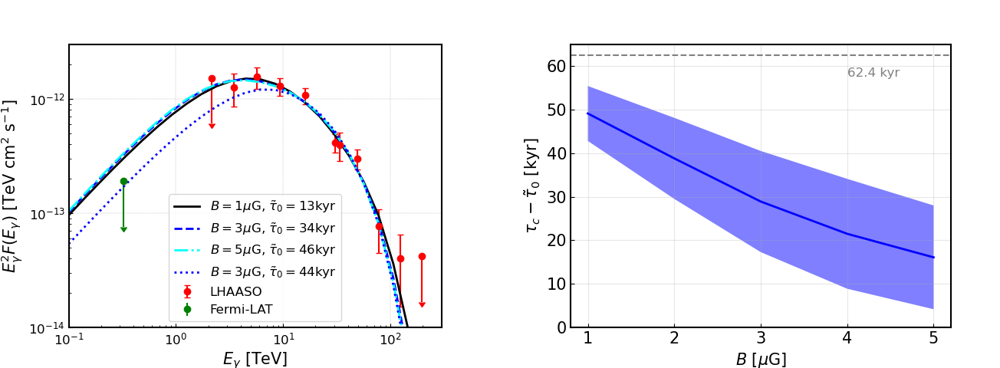
图注：Left: Fits to the spectrum of LHAASO J0248$+$6021. For each fit, the magnetic field strength $B$ is fixed, and the effective initial spin-down timescale $\tilde{\tau}_0$ is determined from the fit. The first three curves are the best fits obtained according to the $\chi^2$-fitting rule described in Section~\(\ref{sec:show}.\) Owing to the high precision of the LHAASO measurements, the fitting procedure prioritizes agreement with the LHAASO data over satisfying the Fermi-LAT UL. The final blue dotted line shows a result where the model is forced to lie below the Fermi-LAT UL. Right: Constraints on the electron injection age $\tau_c-\tilde{\tau}_0$ of J2048 as a function of the magnetic field strength, obtained from the spectral fits shown in the left. The gray dashed line indicates the characteristic age of J0248, $\tau_c=62.4\ \text{kyr}$.
对应解读：对应“建议重点查看的图表”中的宽能段伽马射线谱图、B 与注入年龄退化图，以及“关键图表逐图导读”的图 1 和图 3。
入选理由：这张图同时给出 LHAASO J0248+6021 的谱拟合和磁场 B—电子注入年龄关系，是全文核心结论的直接证据：不同 B 假设下都可拟合高能谱，但对应的有效注入年龄不同，说明伽马射线谱主要约束冷却组合量而非单独的 B 或年龄。左图还能检查 LHAASO 与 Fermi-LAT 上限之间的张力。
来源与置信度：\(arxiv_source\)；high；\(arxiv_source\) / main.tex:figure[3]
Fig02
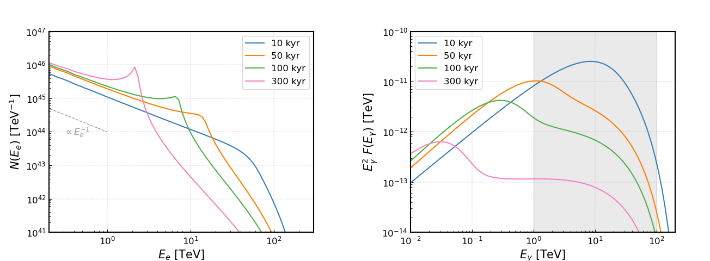
图注：Left: Spatially integrated parent-electron spectrum of a pulsar halo at various injection ages, where $p=1$, $E_{e,c}=100\ \text{TeV}$, $B=3\ \mu\text{G}$, and $\tilde{\tau}_0=10\ \text{kyr}$ are assumed. The dashed line indicates the slope of the power-law component in the injection spectrum, indicating that below the energy-loss bump, the shape of the cumulative electron spectrum remains consistent with the injection spectrum. Right: $\gamma$-ray spectra produced through ICS from the corresponding electron spectra shown in the left panel. The shaded region represents the typical energy range for pulsar halo measurements by LHAASO and HAWC. For clarity, only the CMB is considered as the seed photon field for the ICS process in both subfigures.
对应解读：对应“建议重点查看的图表”中的母体电子谱图，以及“关键图表逐图导读”的图 2。
入选理由：这张图直接展示能量损失凸起随注入年龄演化，并给出相应的逆康普顿伽马射线谱，是理解论文物理机制的关键。它比单纯的观测拟合图更能说明强谱曲率为何可以由冷却演化自然产生，而不是人为加入一个谱峰。
来源与置信度：\(arxiv_source\)；high；\(arxiv_source\) / main.tex:figure[2]
Fig04
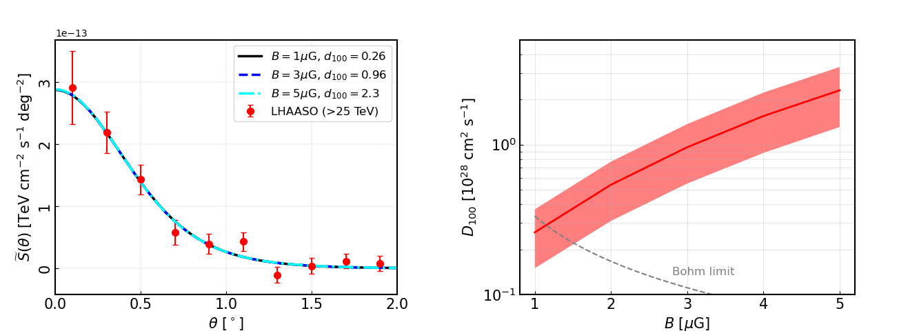
图注：Left: Fits to the one-dimensional $\gamma$-ray surface brightness of LHAASO J0248$+$6021. The diffusion coefficient is determined from the fit, while other parameters are taken from the best-fit models of the spectral fits shown in the left panel of Fig.~\(\ref{fig:spec}.\) The vertical axis $\widetilde{S}$ denotes the surface brightness after accounting for the instrumental point spread function, for which $\sigma_\text{psf}=0.3^\circ$ is assumed. The quantity $d_{100}$ in the legend is defined as $d_{100}=D_{100}/10^{28}\ \text{cm}^2\ \text{s}^{-1}$. Right: Constraints on $D_{100}$ as a function of the magnetic field strength, obtained from the profile fits shown in the left. The gray dashed line indicates the Bohm limit, the theoretical lower limit of the diffusion coefficient.
对应解读：对应“建议重点查看的图表”中的扩散系数随假设变化的图或表，以及模型拟合段落中关于扩散系数与 B、冷却时间耦合的讨论。
入选理由：该图把一维伽马射线表面亮度拟合与 D100 对 B 的约束放在一起，直接支撑摘要中“B 的不确定性导致扩散系数约数量级变化”的说法。右图还提供与 Bohm 极限的比较，有助于判断拟合扩散系数的物理合理性。
来源与置信度：\(arxiv_source\)；high；\(arxiv_source\) / main.tex:figure[4]
Fig06
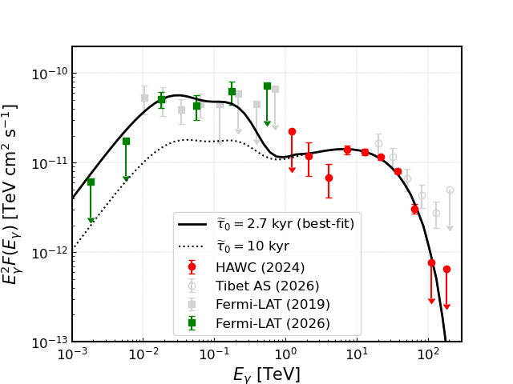
图注：Fit to the broadband $\gamma$-ray spectrum of the Geminga halo. Gray data points are not included in the fit and are shown for comparison only \(\citep{DiMauro:2019yvh,TibetASg:2026bag}.\) For the Fermi-LAT data, we adopt the latest analysis results from \(\cite{Meng:2026tja}.\) For the TeV observations, we use the higher-precision HAWC data \(\citep{HAWC:2024scl}.\) The solid line represents the best-fit model, while the dotted line represents the same model but with only $\tilde{\tau}_0$ altered to $10\ \text{kyr}$, illustrating the effect of varying $\tilde{\tau}_0$ on the spectral shape of the Geminga halo.
对应解读：对应“建议重点查看的图表”中的 J0248 与 Geminga 的对比谱图，以及“关键图表逐图导读”的图 5。
入选理由：Geminga 是论文统一时间演化图像的关键对照样本。该图展示同一能量损失凸起模型如何解释老年脉冲星晕的宽能段谱，并通过改变 \(tilde_tau0\) 显示注入时间尺度对谱形的影响，直接支撑低于 100 GeV 特征与年龄演化相关的论点。
来源与置信度：\(arxiv_source\)；high；\(arxiv_source\) / main.tex:figure[6]
Fig05
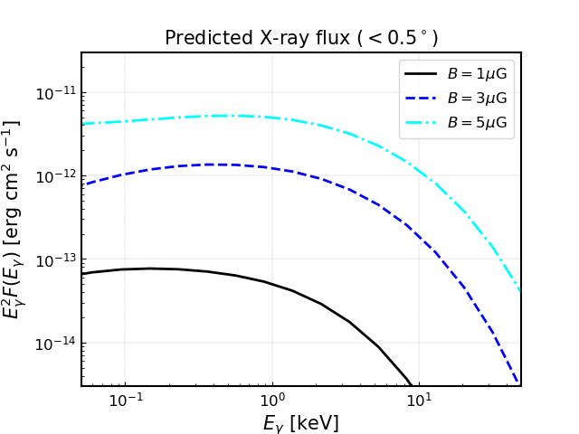
图注：Isotropic synchrotron emission predicted by the best-fit models in the left panel of Fig.~\(\ref{fig:spec}.\) The energy spectrum is extracted within a radius of $0.5^\circ$, roughly matching the field of view of the FXT onboard EP.
对应解读：对应“建议重点查看的图表”中的 X 射线同步辐射预测或上限图，以及“关键图表逐图导读”的图 6。
入选理由：这张图展示不同最佳拟合模型在 X 射线同步辐射能段的预测，是打破 B—注入年龄退化的关键观测检验。它与摘要中“未来 X 射线观测有望打破退化”的结论直接相关。
来源与置信度：\(arxiv_source\)；high；\(arxiv_source\) / main.tex:figure[5]
Fig01
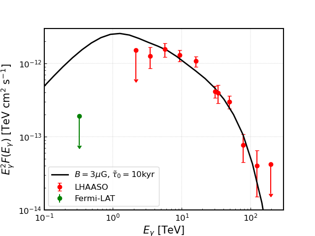
图注：Initial fit of the LHAASO J0248$+$6021 spectrum. The ambient magnetic field strength and effective initial spin-down timescale are fixed as $B=3\ \mu\text{G}$ and $\tilde{\tau}_0=10\ \text{kyr}$, respectively. The model clearly failed to capture the characteristics of the measurements.
对应解读：对应宽能段谱拟合与模型失败诊断部分，尤其是模型拟合段落中关于普通参数设置无法复现强曲率的讨论。
入选理由：该图显示采用典型 B=3 μG 和固定初始自转时间尺度时对 LHAASO J0248+6021 谱的初始拟合失败，可作为为什么需要低磁场或较短有效注入年龄的背景证据。不过它主要是失败示例，信息量低于后续最佳拟合、退化和多波段预测图。
来源与置信度：\(arxiv_source\)；high；\(arxiv_source\) / main.tex:figure[1]
强相关工作
这篇文章与 Geminga、Monogem 以及 HAWC/LHAASO 发现的延展 TeV 源研究直接相关。相似工作通常关注脉冲星晕的扩散系数是否显著低于银河平均值，以及这些源能否解释 AMS-02 的正电子超额。建议检索关键词包括 “TeV halo Geminga diffusion coefficient”, “pulsar halo inverse Compton cooling”, “LHAASO J0248+6021 pulsar halo”, “energy-loss bump electron spectrum”。
它也与关于脉冲星晕模型的争议相连：一种观点把 TeV halo 视为低扩散区中的电子正电子云，另一种更强调源环境、超新星遗迹相互作用、各向异性扩散或未解析源混合。本文的立场不是否定低扩散，而是指出谱曲率本身不能单独决定扩散系数；在 \(B\) 和注入年龄未被独立约束前，扩散系数的数值应被视为模型依赖结果。
基础理论上，它继承了电子辐射冷却、逆康普顿散射和扩散-损失方程的标准框架。相反或互补观点可从经验谱拟合、单纯注入 cutoff 解释、或复杂多区传播模型中寻找。检索时可加上 “Klein-Nishina effect TeV halo”, “pulsar wind nebula escape history”, “anisotropic diffusion around pulsars” 这些关键词，以区分谱曲率的不同物理来源。
相似工作：
- https://arxiv.org/abs/2605.18122
- https://ui.adsabs.harvard.edu/
基础理论 / 方法工作：
- https://arxiv.org/abs/1702.02992
- https://arxiv.org/abs/1702.08436
- https://ui.adsabs.harvard.edu/
相反观点 / 张力线索：
- https://ui.adsabs.harvard.edu/
3. Jet-Structure Imprint on the Curvature Tail of Gamma-Ray Burst Prompt Emission
- 来源：arXiv / astro-ph.HE
- 链接：https://arxiv.org/abs/2605.17060v1
- 作者：Zhen-Yu Yan, Xiao-Hong Zhao, Hendrik J. van Eerten, Jun Yang, Jiang-Chuan Tuo, Shu-Xu Yi, Chen-Wei Wang, Wen-Jun Tan
- 评分：novelty 8/10，importance 8/10，relevance 10/10，final 9.70/10
- 推荐理由：用GRB prompt高纬辐射曲率尾探测喷流结构，并应用于GRB 230307A；直接属于GRB伽马射线天文且提出可复用诊断。
中文题目：伽马暴瞬时辐射曲率尾中的喷流结构印记
做了什么：这篇文章把伽马暴瞬时辐射结束后的高纬度曲率尾当作“几何扫描器”，研究喷流横向结构是否会在晚期光变曲线中留下可测的折断。作者建立了结构化喷流同步辐射数值模型，并用它拟合 GRB 230307A 罕见的瞬时辐射晚期折断。结果显示，球对称外流和简单顶帽喷流都无法同时解释折断前后的衰减形态；带均匀核心和幂律翼的结构化喷流更合适，核心半张角约为 \(\theta_{\rm core}=0.0147\,\mathrm{rad}\)。核心信息是：瞬时辐射的曲率尾不只是“关机后的余辉”，它可能直接携带 prompt 阶段喷流角结构的信息。
为什么重要：伽马暴喷流结构通常依赖余辉喷流折断、偏轴观测或引力波并合事件中的多波段建模来推断，但这些方法探测的是外激波阶段，未必等同于 prompt 发射区的结构。本文把 prompt 高纬度辐射的晚期折断用于约束喷流结构，提供了一条更接近中央发动机活动阶段的几何诊断路径。若这种方法能推广到更多样本，它会把 prompt 光变曲线从经验拟合对象提升为喷流角结构的定量探针。
理论 / 观测 / 仪器方法价值：理论上，它把曲率效应从经典的 \(\alpha=2+\beta\) 衰减关系扩展到有限开角和结构化喷流情形，强调光变折断不仅由辐射谱斜率决定，还由能量、洛伦兹因子、磁场和视线角的横向分布决定。观测上，它给出了解读 GRB 230307A 晚期 prompt 折断的物理模型，而不是简单用经验断裂幂律描述。方法上，它提供了可与 GBM、GECAM、Konus-Wind 等 prompt 数据相连的数值框架，有助于把未来明亮长时标伽马暴变成喷流结构样本。
为什么应该关注：如果你关心 GRB prompt 辐射机制、喷流准直、短暴/长暴分类边界，或 GRB 230307A 这类异常明亮长时标事件的起源，这篇文章值得看。它提醒我们：晚期 prompt 光变的一个折断，可能不是仪器背景、谱演化或外激波接管那么简单，而是喷流边缘和角结构进入可见区域的信号。对做余辉建模的人来说，它也提供了一个可与余辉喷流结构相互校验的 prompt 约束。
展开详细解读：文章讲解、背景、理论、重点章节、图表与相关工作
文章详细讲解
科学问题：经典曲率效应指出，当相对论壳层突然停止辐射后，观测者仍会接收到来自视线外较高纬度区域的延迟光子，光变曲线因此按由谱斜率控制的规律衰减。这个图像通常假设球面对称或局部均匀喷流，但真实 GRB 喷流很可能有核心和翼部结构。本文问的是：prompt 发射停止后，如果喷流不是顶帽而是结构化的，高纬度辐射的光变尾巴是否会出现可识别的折断？这个折断能否反推出 prompt 阶段喷流的角结构？
作者怎么做：他们建立了一个从结构化喷流产生同步辐射光变曲线的数值模型。模型把喷流按角向分布处理，允许存在均匀核心和外侧幂律翼，并计算不同角度单元因相对论多普勒因子、到达时间延迟和局域同步辐射谱共同造成的观测通量。然后他们把这个模型用于 GRB 230307A 的 prompt 晚期光变。这个事件特别有价值，因为它足够亮、持续时间长，并呈现罕见的晚期折断，使得曲率尾几何效应有可能从背景和统计噪声中分离出来。
关键结果：文章发现，简单球对称外流不能给出观测到的折断；标准顶帽喷流虽然有边缘效应，但折断的时间、平滑度和折断前后斜率组合仍不匹配。最佳解释是带均匀核心和幂律翼的结构化喷流，核心半张角约为 \(\theta_{\rm core}=0.0147\,\mathrm{rad}\)，外侧翼部的角向结构调节了边缘进入视场后的衰减方式。换言之，晚期 prompt 曲率尾中的折断不是一个任意经验特征，而可以被理解为可见高纬度区域扫过喷流核心到翼部结构时产生的几何印记。
局限和下一步：这个结论依赖对 prompt 发射关停时间、局域谱形、同步辐射参数、背景扣除和事件时间分段的处理。GRB 230307A 本身也可能有复杂的中央发动机活动或多个脉冲叠加，因此把晚期折断完全归因于单一壳层曲率效应需要谨慎。下一步应把该模型用于更多具有清晰尾部衰减的明亮 GRB，联合时变谱拟合和多仪器交叉定标，并与余辉阶段推断的喷流结构比较，以检验 prompt 喷流结构是否与外激波结构一致。
背景知识
研究对象是 GRB prompt emission，即中央发动机仍在驱动或刚刚停止时产生的高能辐射。prompt 光变高度不规则，常由多个脉冲组成，谱形通常用 Band 函数、截止幂律或物理同步辐射模型描述。由于喷流以高洛伦兹因子运动，观测者主要看到角尺度约为 \(1/\Gamma\) 的窄锥内辐射；但在发射突然停止后，较大角度区域的光子仍因路径更长而延迟到达，这就是高纬度辐射或曲率效应。
历史上，曲率效应常被用来解释 prompt 脉冲衰减段和早期 X 射线陡衰减。最著名的诊断是光变衰减指数与谱指数之间的关系，即在理想球壳、瞬时关停和固定谱形下，通量衰减满足 \(\alpha=2+\beta\)。但许多实际 GRB 不严格满足这条关系，原因可能包括零时刻选择错误、持续能量注入、谱演化、多个脉冲叠加、喷流有限开角或角向结构。
喷流结构是 GRB 领域的核心问题之一。顶帽喷流假设能量和洛伦兹因子在开角内均匀、边缘外急剧为零；结构化喷流则允许核心外能量随角度下降，例如高斯型或幂律型。GW170817/GRB 170817A 之后，结构化喷流已经成为解释偏轴短暴和余辉超光速运动的标准框架之一。但这些约束主要来自外激波余辉，未必能直接代表 prompt 发射区的角结构。
现在重新看这个问题的原因有两个。第一，Fermi、GECAM、Konus-Wind 等仪器积累了大量高时间分辨率 prompt 数据，少数极亮事件可以追踪到很晚的衰减尾。第二，GRB 230307A 这类异常事件挑战了传统短暴、长暴和并合起源分类，也使 prompt 几何诊断更有吸引力。常见误区是把所有晚期衰减都简单称为“余辉开始”或“背景系统误差”，但在足够亮、谱和时间行为一致的情况下，曲率尾本身可能含有独立物理信息。
基础理论 / 方法脉络
基本物理图像是相对论薄壳在半径 \(R\) 处辐射，然后在某个共动时间附近迅速关停。由于壳面是弯曲的，来自视线方向的光子最早到达，来自夹角 \(\theta\) 的高纬度光子晚到。对大洛伦兹因子 \(\Gamma\) 的外流，多普勒因子 \(\delta_{\rm D}\) 随 \(\theta\) 增大快速下降，因此晚到光子不仅延迟，而且被去增亮、去蓝移。
在最简单的均匀球壳中，观测频率 \(\nu\) 处的通量衰减主要由到达时间和多普勒因子控制。如果局域谱满足 \(F_{\nu}\propto \nu^{-\beta}\)，且发射突然停止，则高纬度尾给出 \(F_{\nu}\propto t^{-(2+\beta)}\)。这条关系很有用，但它隐含了角向均匀、没有喷流边缘、没有持续辐射和谱形不随时间演化等假设。
本文关心的是结构化喷流。所谓结构化喷流，是指单位立体角能量 \(\epsilon(\theta)\)、洛伦兹因子 \(\Gamma( heta)\)、磁场或电子分布参数可能随相对喷流轴的角距离变化。对准轴观测者而言，早期主要看到核心；随着时间推移，等到达时间面扫过更大纬度，观测通量开始采样核心边缘和翼部。若翼部不是突然截断，而是幂律下降，光变折断会比顶帽边缘更平滑，折断后斜率也不同。
观测上，关键不是只拟合一个断裂幂律，而是把每个角向单元的发射、到达时间、多普勒变换和仪器能段积分联系起来。GRB 230307A 的晚期 prompt 折断为这种方法提供了测试场。主要系统误差包括背景模型、有效能段差异、脉冲叠加、关停时间 \(t_0\) 的选择，以及局域谱参数与几何参数之间的退化。尤其是 \(\theta_{\rm core}\)、\(\Gamma\)、发射半径 \(R\) 和关停时刻都能改变折断时间，因此需要结合谱和光变形态共同判断。
公式与推导
推导阶梯可以从几何延迟开始。半径为 \(R\) 的薄壳上，夹角 \(\theta\) 的光子相对视线方向的到达时间延迟近似为
其中 \(t_0\) 是视线方向最后发射到达的参考时刻，\(c\) 是光速。这个式子说明晚期光变实际上在扫描越来越大的角度。
相对论多普勒因子为
其中 \(\Gamma\) 是洛伦兹因子，\(\beta_{\Gamma}=v/c\)。在 \(\Gamma\gg1\) 且 \(\theta\ll1\) 时，近似有
因此当 \(\theta\gtrsim1/\Gamma\) 后，观测辐射迅速变暗并变软。
若共动系谱光度满足 \(L'_{\nu'}\propto {\nu'}^{-\beta}\)，频率变换为 \(\nu=\delta_{\rm D}\nu'/(1+z)\)。一个角向面元对观测通量的贡献可写成比例形式
其中 \(D_L\) 是光度距离，\(z\) 是红移，\(d\Omega\) 是面元立体角。不同文献中指数会因采用强度、光度和等到达时间积分定义略有差异，但物理核心都是多普勒增亮和频率平移。
把等到达时间面的面积因子计入后，均匀球壳突然关停给出经典曲率尾关系
其中 \(t_{\rm ang}=R/(2c\Gamma^2)\) 是角时间尺度。这里的 \(\alpha=2+\beta\) 是检验理想曲率效应的标尺，而不是所有 prompt 尾巴都必须满足的定律。
对顶帽喷流，角向能量可写成
其中 \(\theta_j\) 是相对喷流轴的角距离，\(\theta_{\rm jet}\) 是喷流半开角，\(H\) 是阶跃函数。边缘进入可见区域时，光变会因可发射面积突然减少而出现额外变陡。
本文偏好的幂律翼结构可概括为
或在核心外近似为
其中 \(\epsilon_c\) 是核心能量尺度，\(\theta_{\rm core}\) 是核心角，\(s\) 是翼部下降指数。实际论文模型可能还会让 \(\Gamma\) 或辐射参数随角度变化。
同步辐射的特征频率可用
其中 \(q_e\) 是电子电荷，\(B'\) 是共动磁场，\(m_e\) 是电子质量，\(\gamma_m\) 是最低注入电子洛伦兹因子。这个式子连接了谱峰随时间软化与几何多普勒因子下降。
与数据比较时，可把模型计数率写成
其中 \(C_k^{\rm mod}\) 是第 \(k\) 个时间 bin 的模型计数，\(R_k(E)\) 是仪器响应或有效面积权重，\(F_E(t)\) 是能谱通量，\(B_k\) 是背景。若计数近似服从泊松分布，似然可写为
这个统计量让几何参数，如 \(\theta_{\rm core}\)、翼部指数和归一化，与背景和谱参数一起接受数据约束。
模型拟合 / 应用方法
这类工作的拟合对象首先是能段积分后的 prompt 光变曲线，也可能包括分时谱或硬度演化。模型参数通常包括核心角 \(\theta_{\rm core}\)、翼部幂律指数、能量归一化、洛伦兹因子或其角向分布、发射半径、关停时间 \(t_0\)、同步辐射谱参数以及背景项。本文的关键拟合目标是复现 GRB 230307A 晚期折断的时间、折断平滑度和折断前后衰减斜率，而不仅是匹配总流量。
似然选择取决于数据形式。若使用计数数据，泊松似然或现金统计量更自然；若使用背景扣除后的高信噪比通量点，高斯 \(\chi^2\) 近似可能足够。专业读者应特别注意背景不确定性是否被传播到参数误差中，因为晚期曲率尾的信号接近背景时，背景模型的微小倾斜就可能模拟或掩盖折断。
参数退化是本文解释中最需要关注的部分。折断时间大致由高纬度角尺度、发射半径和洛伦兹因子共同控制，因此 \(R\)、\(\Gamma\) 与 \(\theta_{\rm core}\) 之间存在尺度退化。折断后斜率又受谱指数 \(\beta\)、翼部能量下降指数和可能的 \(\Gamma(\theta)\) 影响。若只看单能段光变，很难唯一地区分几何变陡和谱峰穿越能段造成的变陡。
残差诊断应围绕三个问题：折断前是否存在系统性弯曲而非单一幂律；折断附近模型是否过于尖锐或过于平滑；折断后是否留下连续偏正或偏负残差。顶帽喷流若产生太突兀的边缘效应，残差会在折断附近表现为成组偏差；球对称模型若缺少边缘或结构效应，通常会在晚期衰减斜率上失败。
模型可能失败的场景包括：中央发动机在晚期仍有弱活动，多个 prompt 脉冲叠加，外激波早期成分已经贡献可观通量，或局域辐射机制不是简单同步辐射。实际应用上，最好把该模型与经验断裂幂律、顶帽喷流、球壳曲率尾、持续注入模型同时比较，并用信息准则、后验预测检验或留一时间段检验来评估结构化喷流是否真正必要。
重点章节 / 结果段落怎么读
数据和样本部分应先读 GRB 230307A 的时间区间选择、能段、背景处理和折断识别方式。关键是弄清楚作者定义的 prompt 晚期尾部从什么时候开始、哪些仪器数据被使用、背景区间如何选取，以及折断的统计显著性是否独立于经验模型。
模型部分是全文核心。读者应关注结构化喷流的角向参数化、同步辐射谱的实现、等到达时间积分和发射关停假设。这里决定了所谓“喷流结构印记”到底来自几何边缘、能量角分布，还是来自附加的谱演化假设。
模型比较部分需要重点看球对称、顶帽喷流和幂律翼喷流的拟合差异。不要只看最佳拟合线是否穿过数据点，还要看折断附近和晚期残差，尤其是模型能否同时解释折断时间、衰减斜率和光变平滑度。
结果部分的核心参数是 \(\theta_{\rm core}=0.0147\,\mathrm{rad}\) 及翼部结构参数。读者应检查置信区间、参数相关性和先验边界。如果核心角误差较大或被先验限制，那么物理解释应相应保守。
讨论和稳健性检验部分应关注替代解释：持续中央发动机、外激波接管、谱峰穿越、背景系统误差和多脉冲叠加。文章的说服力不只来自某个模型拟合更好，还来自排除这些更平凡解释的程度。
建议重点查看的图表
-
prompt 全时段光变和晚期尾部放大图：看折断是否在多个能段或多台仪器中一致出现，以及折断是否远高于背景不确定性。
-
经验断裂幂律或曲率效应拟合图：看折断前后衰减指数、折断时间和残差结构，确认折断不是单个异常 bin 驱动。
-
球对称、顶帽和结构化喷流模型对比图：重点比较折断附近的平滑度和晚期斜率，而不是只比较整体归一化。
-
参数后验或置信区间图：检查 \(\theta_{\rm core}\)、翼部指数、\(R\)、\(\Gamma\) 和 \(t_0\) 的相关性，确认核心角不是由强先验或固定参数硬推出的。
-
谱演化或硬度比图：看晚期衰减是否伴随符合多普勒软化的谱变化，还是出现提示额外辐射成分的异常硬化。
-
残差和模型选择表：看不同模型的统计量差异是否足够大，参数数量增加后结构化喷流仍是否显著优于顶帽模型。
关键图表逐图导读
图 1：通常应是 GRB 230307A 的 prompt 光变概览。横轴多半为触发后时间，纵轴为计数率或能量通量。读图时要找晚期折断所在时间段，确认它不是背景区间切换、数据缺口或仪器饱和恢复造成的假特征。若图中有不同能段曲线，应比较折断时间是否一致。
图 2：很可能展示晚期尾部的经验拟合，例如单幂律、断裂幂律或经典曲率尾。横轴若为对数时间，纵轴若为对数通量，直线斜率就是衰减指数。陷阱是 \(t_0\) 的选择会显著改变斜率，所以应看作者是否讨论了零时刻不确定性。
图 3：结构化喷流数值模型与观测光变的对比应是核心图。数据点代表观测通量或计数率，模型线可能分别对应球对称、顶帽和幂律翼喷流。重点看顶帽模型是否在折断处过尖、球模型是否晚期过亮或过暗，以及幂律翼模型是否自然给出平滑转折。
图 4：如果有喷流角结构示意或参数曲线，横轴应为相对喷流轴角度 \(\theta_j\)，纵轴可能是单位立体角能量、洛伦兹因子或相对 emissivity。读者应确认核心区是否近似平坦，核心外是否按幂律下降，并把 \(\theta_{\rm core}=0.0147\,\mathrm{rad}\) 与 \(1/\Gamma\) 的可见角尺度比较。
图 5：后验分布或二维置信区间图用于判断参数是否被数据真正约束。若 \(\theta_{\rm core}\) 与 \(R\)、\(\Gamma\) 或 \(t_0\) 呈长条形相关，说明折断时间约束的是组合尺度而非单个参数。读图陷阱是只引用最佳值而忽略边缘化误差。
图 6：残差图或模型比较表应被当作稳健性检验来看。横轴为时间，纵轴为标准化残差或统计贡献。若某模型在折断前后有连续同号残差，即使总 \(\chi^2\) 看起来还可以，也说明物理形状不对。
论文原图 / 可嵌入图片
Fig04
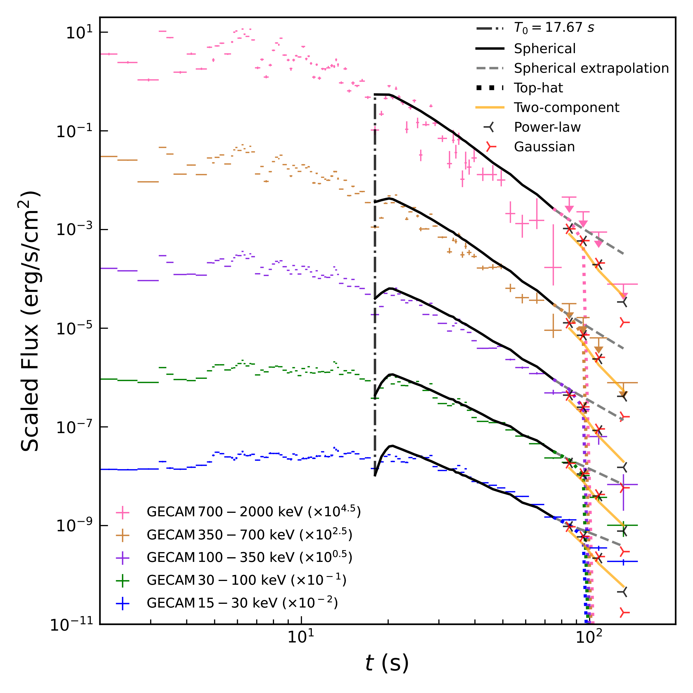
图注：Scaled flux of the light curves on a log-log scale predicted by the models compared with GRB 230307A's late-time light curves using GECAM data. The points with error bars and upper limits are from observed GECAM data. The black solid curves within 18 s to 84 s represent the prediction of the best-fit parameters of the spherical model without the curvature-tail effect. The grey dashed curves after 84 s are the extrapolation of the spherical model. The colored dotted curves, the orange solid curves, the black tri-left markers, and the red tri-right markers represent the best-fit models with the top-hat jet, the two-component jet, the power-law wing, and the Gaussian wing, respectively. The black dash-dotted vertical line represents the time when the fit starts. The error bars represent the $1\sigma$ uncertainties.
对应解读：对应“建议重点查看的图表”第1、3、6项，以及“关键图表逐图导读”中图3/模型拟合段落：GRB 230307A晚期光变与球对称、顶帽、两成分、幂律翼、Gaussian翼模型的直接对比。
入选理由：这是最核心的实证图，直接把GECAM晚期观测点、误差棒、上限和多种喷流模型叠加在同一光变图上，可检验晚期折断时间、折断平滑度、折断后斜率以及球对称/顶帽/结构化喷流之间的差异。相比其他候选图，它最直接支撑日报关于‘简单球模型和顶帽模型不足，幂律翼结构化喷流更优’的主要结论。
来源与置信度：\(arxiv_source\)；high；\(arxiv_source\) / ms.tex:figure[4]
Fig03
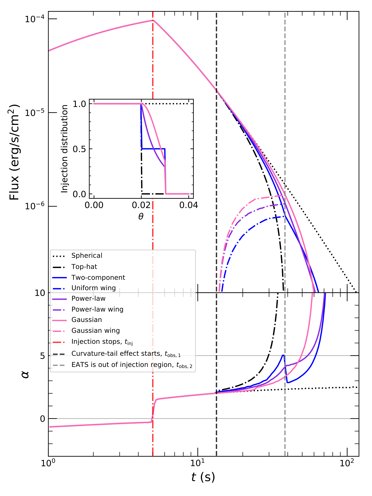
图注：Scaled flux in 15--2000 keV on a log-log scale and temporal decay indices of the jet models with wing structures. The nested subplot in the upper panel presents the normalized angular injection distribution. The flux is calculated using the canonical physical parameters. The blue, purple, and pink solid curves represent the two-component model, power-law wing model, and Gaussian wing model, respectively, which contain a core with $\theta_{\rm core}=0.02~{\rm rad}$ inside a wing with $\Delta\theta_{\rm wing}=0.01~{\rm rad}$. The black dotted curve represents the spherical model. The black dash-dotted curve represents the top-hat model (the same as the contribution of the first uniform core component). The colored dash-dotted curves represent the wings' independent contributions. Three key times in Figure \(\ref{fig:curvature-tail}\) are also plotted as vertical lines.
对应解读：对应“建议重点查看的图表”第3、4项，以及“关键图表逐图导读”中图3和图4：结构化喷流模型、角向注入分布、核心与翼部贡献对曲率尾光变的影响。
入选理由：该图展示两成分、幂律翼和Gaussian翼结构化喷流的理论光变及衰减指数，并在嵌入子图中给出归一化角向注入分布，正好解释为什么核心外翼部结构会改变晚期曲率尾的折断形状。它是理解Fig04观测拟合结果背后物理机制的关键图。
来源与置信度：\(arxiv_source\)；high；\(arxiv_source\) / ms.tex:figure[3]
Fig02
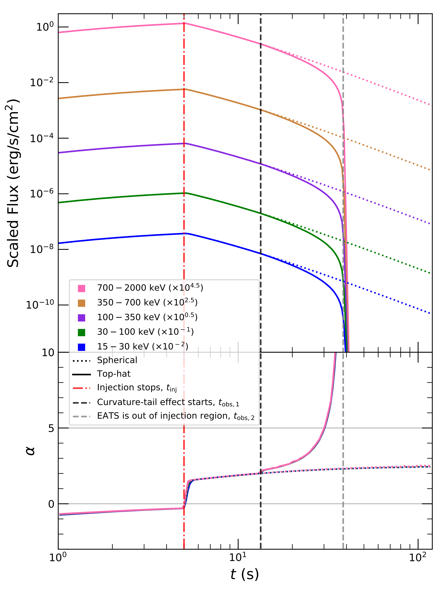
图注：Scaled flux on a log-log scale and temporal decay indices. The flux is calculated using the canonical physical parameters. Colored dotted and solid curves represent the spherical model and the top-hat jet model ($\theta_{\rm jet}=0.02~{\rm rad}$), respectively. Three key times in Figure \(\ref{fig:curvature-tail}\) are also plotted as vertical lines.
对应解读：对应“建议重点查看的图表”第2、3项，以及“关键图表逐图导读”中关于经验/曲率效应拟合和球对称、顶帽模型失败模式的讨论。
入选理由：该图用log-log光变和时间衰减指数比较球对称模型与顶帽喷流模型，并标出关键时间，能直观看出传统曲率尾和喷流边缘效应对斜率演化的影响。它为后续说明顶帽模型折断可能过尖、球模型缺少边缘结构提供了基准。
来源与置信度：\(arxiv_source\)；high；\(arxiv_source\) / ms.tex:figure[2]
Fig05
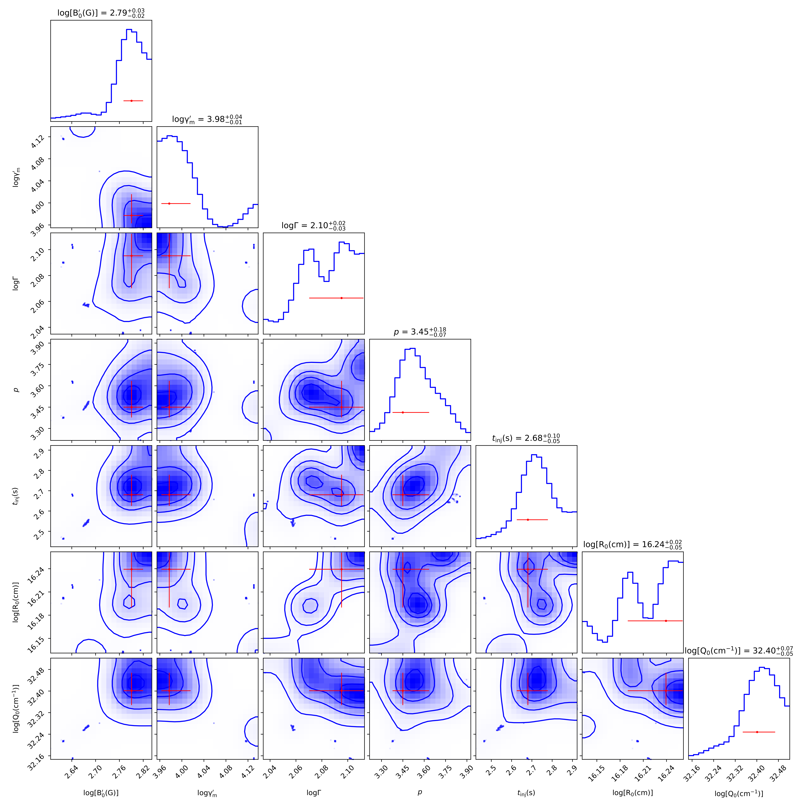
图注：Corner plot of the best fit of the isotropic spherical model to the late-time light curve of GRB 230307A with GECAM data. The error bars represent the $1\sigma$ uncertainties.
对应解读：对应“建议重点查看的图表”第4项和模型拟合段落中关于参数后验、置信区间和退化关系的提醒。
入选理由：候选图中唯一明确为corner plot的参数后验图，可用于检查球对称模型拟合参数的不确定性和相关性。虽然它不是结构化喷流最佳模型的后验，无法直接验证theta_core=0.0147 rad等核心结论，但仍可作为模型拟合稳健性和参数退化讨论的辅助图。
来源与置信度：\(arxiv_source\)；high；\(arxiv_source\) / ms.tex:figure[5]
Fig01
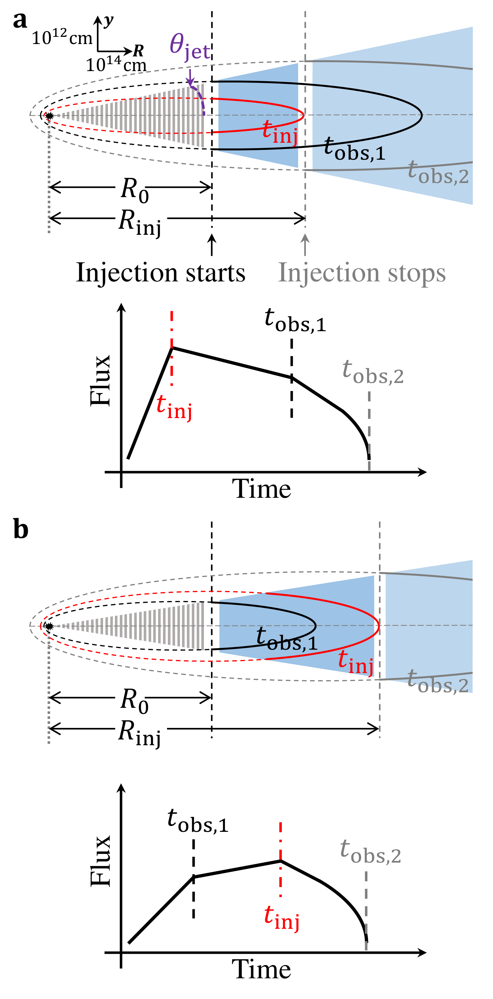
图注：Curvature-tail effect diagram. The panels a and b show two scenarios where the curvature-tail effect occurs in decaying and rising phases, respectively. The cone shows the history of a jet sweeping trajectory through the outside space. The ellipse represents EATS, and its solid section contributes to the observed flux. The cone in the grey shaded region indicates the fraction that does not contribute to the observed flux, while the cone in dark or light blue does. The dark blue region represents the electron injection region, while the light blue region has no injection. The horizontal black dashed line represents the line of sight for an on-axis observer. The purple angle represents the jet half-opening angle. The vertical black and grey dashed lines in the jet diagram represent the radius where the injection starts and stops, respectively.
对应解读：对应详细解读中‘经典曲率效应’物理图像，以及“关键图表逐图导读”中对高纬度辐射、EATS、喷流开角和注入起止半径的概念说明。
入选理由：该图是曲率尾效应的几何示意，能帮助读者理解高纬度延迟光子、等到达时间面和喷流边缘进入视场的基本机制。但它不含GRB 230307A数据、模型残差或参数约束，因此科学支撑力度低于光变拟合和结构化喷流模型图。
来源与置信度：\(arxiv_source\)；high；\(arxiv_source\) / ms.tex:figure[1]
强相关工作
这篇文章与曲率效应和早期 X 射线陡衰减研究直接相连。经典工作给出了高纬度辐射的 \(\alpha=2+\beta\) 关系，并把它用于判断 prompt 脉冲关停和 Swift XRT 早期陡衰减的物理起源。本文的不同之处在于，它不满足于用该关系做一致性检验，而是进一步利用偏离理想关系的折断形态反推喷流角结构。建议检索关键词包括 “GRB curvature effect high latitude emission”, “prompt emission steep decay”, “structured jet prompt emission”。
它也与结构化喷流和多信使短暴研究有关。GW170817/GRB 170817A 之后，高斯或幂律结构化喷流已被广泛用于解释偏轴余辉和 VLBI 超光速运动；但这些模型通常约束的是外激波阶段的能量角分布。本文尝试在 prompt 阶段做类似事情，因此可与余辉喷流结构结果形成互补或张力。建议检索关键词包括 “structured jet GRB afterglow”, “GRB 170817A structured jet”, “GRB 230307A prompt emission”, “power-law wing jet”。
潜在相反观点包括：晚期折断可能来自持续中央发动机的结束、外激波早期成分接管、谱峰穿越探测能段，或背景系统误差。阅读相关文献时应特别比较不同作者对 \(t_0\)、谱演化和多脉冲分解的处理，因为这些选择会影响曲率尾斜率和折断解释。
相似工作：
- https://arxiv.org/abs/2605.17060
- https://ui.adsabs.harvard.edu/search/q=GRB%20230307A%20prompt%20emission
- https://ui.adsabs.harvard.edu/search/q=structured%20jet%20GRB%20prompt%20emission
基础理论 / 方法工作：
- https://ui.adsabs.harvard.edu/search/q=high%20latitude%20emission%20curvature%20effect%20gamma-ray%20bursts
- https://ui.adsabs.harvard.edu/search/q=Kumar%20Panaitescu%202000%20curvature%20effect%20GRB
- https://ui.adsabs.harvard.edu/search/q=structured%20jet%20gamma-ray%20burst%20afterglow
相反观点 / 张力线索：
- https://ui.adsabs.harvard.edu/search/q=GRB%20prompt%20emission%20spectral%20evolution%20curvature%20effect
- https://ui.adsabs.harvard.edu/search/q=GRB%20early%20afterglow%20onset%20prompt%20tail
- https://ui.adsabs.harvard.edu/search/q=GRB%20230307A%20origin%20merger%20magnetar
4. Multiwavelength Probes of Cosmic Ray Transport in Molecular Cloud Structures
- 来源：arXiv / astro-ph.HE
- 链接：https://arxiv.org/abs/2605.16698v1
- 作者：Hayden P. H. Ng, Ellis R. Owen, Naomi Tsuji, Szu-Ting Chen
- 评分：novelty 8/10，importance 8/10，relevance 10/10，final 9.70/10
- 推荐理由：建立分子云中宇宙线传播、π0衰变伽马射线、电离和硬X射线同步辐射的联合诊断框架，直接服务CR传播和伽马射线解释。
中文题目：Multiwavelength Probes of Cosmic Ray Transport in Molecular Cloud Structures
做了什么：本篇论文已通过推荐筛选，但自动详细解读生成失败。可先根据题目和摘要判断阅读优先级：We investigate how cosmic ray (CR) transport in molecular clouds and their substructures can be probed using multi-wavelength observations. The detailed microphysics regulating the penetration and coupling of CRs in dense molecular structures is unsettled. Self-generated turbulence can produce scattering and diffusive transport, while ion-neutral damping in cold, dense gas promotes ballistic CR propagation. We construct a self-consistent framework for CR transport and interactions in magnetized molecular clouds, considering three limiting propagation scenarios: ballistic transport, diffusion, and a hybrid configuration with a diffusive envelope and quasi-ballistic core. By forward-modeling pion-decay $γ$-ray emissivities, CR-driven ionization-rate profiles, and electron synchrotron emission in the hard X-ray band, we connect GeV attenuation and propagation signatures to independent diagnostics of secondary production and CR penetration. As an illustrative example, we apply our framework to the Taurus molecular cloud complex and selected embedded clumps. We show that CR scattering may be substantially enhanced on clump scales, with inferred CR diffusion coefficients suppressed relative to canonical interstellar medium (ISM) values at GeV energies. In this interpretation, CRs are more closely coupled with dense gas in the ISM, and a diffusive envelope boosts the effective gas column density encountered by the CRs. This increases the hadronic interaction rate in the cloud. In turn, the secondary CR electron injection is also increased, and CR ionization rates are elevated at higher densities. We show that a hard X-ray synchrotron emission component is also generated, which may be detectable with near-future facilities. Finally, we discuss how future $γ$-ray, X-ray, and ionization constraints will provide firm tests of CR propagation theories in molecular cloud environments.
为什么重要：这篇论文在今日候选中通过了本地推荐阈值，说明它与当前高能天体物理兴趣方向或质量标准较匹配；详细内容建议优先查看原文摘要、结论和图表。
理论 / 观测 / 仪器方法价值：由于 LLM 摘要 JSON 解析失败，本节保留为安全占位，不编造论文未确认的公式、图号或链接。
为什么应该关注：日报仍保留这篇论文，是为了避免单篇摘要失败导致整份日报缺失。请把它作为需要人工快速复核的高优先级候选。
展开详细解读：文章讲解、背景、理论、重点章节、图表与相关工作
文章详细讲解
本文的科学问题可以概括为：分子云及其致密子结构是否允许银河宇宙线自由穿透？若不能，多波段观测能否区分弹道、扩散和外扩散内弹道的混合传播？作者不是简单地把 Taurus 当作一个均匀气体靶，而是把云尺度和嵌入团块分开处理，并比较每 H 原子伽马射线发射率、宇宙线电离率剖面和硬 X 射线同步辐射。这样做的重点在于把 GeV 伽马射线的谱形诊断与低能宇宙线穿透和次级电子产物联系起来。
方法上，论文构造了一个自洽的磁化分子云宇宙线输运与相互作用框架。三种极限情形分别代表不同微物理假设：全弹道表示散射弱、离子-中性阻尼有效；全扩散表示自生或环境湍流散射强；two-zone 模型表示外层扩散、内核近弹道，并用类似转变参数 \(\eta\) 描述扩散层相对范围。模型输入应包括气体密度剖面、云/团块尺寸、外部宇宙线谱、扩散系数归一化和能量依赖、磁场以及相关截面。输出则是可直接与观测比较的发射率和表面亮度，而不是仅讨论抽象输运时间尺度。
关键结果从已有图注可以读出几条主线。图 2 显示在 fiducial clump 中，弹道情况下内区伽马射线谱接近整体谱；而扩散层越厚，核心区域低于约 \(100\,\mathrm{GeV}\) 的发射越受压低，原因是慢扩散使低能质子更容易在外层累积损失。图 8 把这种机制用于 Taurus 和嵌入团块，团块相对云尺度表现出更高的单位 H 发射率和更强的低能转折/压低；在强散射解释下，1 GeV 附近扩散系数需相对 canonical ISM 值显著降低。图 10 则把同一模型转化为电离率随局部密度和向内柱密度的预测，并与 Taurus 稠密核的电离率约束比较。
硬 X 射线部分是本文较有前瞻性的检验。pp 相互作用增强会同时提高 \(\pi^0\) 伽马射线和 \(\pi^\pm\) 产生的次级电子注入；这些高能电子在分子云磁场中产生同步辐射，可能落入硬 X 射线波段。图 9 区分了一次电子和次级电子贡献，并叠加若干当前或拟议仪器的计数限制标尺。这里应谨慎理解“可探测”：图注已说明灰色曲线是 counts-limited surface-brightness scaling，不是完整背景受限灵敏度预报；Taurus 由于很近而角尺度大，扩展源背景和视场限制可能显著降低实际探测性。
局限性方面，本文似乎以 Taurus 作为说明性应用，而非对所有分子云给出最终普适结论。读者应检查气体模板、团块质量和尺寸、距离、背景伽马射线模型、外部宇宙线谱以及扩散系数先验如何影响结果。尤其是“扩散系数被压低”可能与气体柱密度低估、未建模源污染、或能谱系统误差部分退化。下一步最重要的修复/验证包括：用独立气体示踪剂重建柱密度，用更高分辨率伽马射线或 CTA/AMEGO 类观测检验低能转折，用分子离子化学观测测量 \(\zeta\)，并用硬 X 射线深曝光寻找或限制次级电子同步辐射。
背景知识
宇宙线在分子云中的传播问题，是把高能天体物理、星际介质湍流、分子云化学和伽马射线观测连接起来的典型交叉题。传统图像中，GeV–TeV 宇宙线质子在银河系内近似形成各向同性的局域星际谱（local interstellar spectrum, LIS），当它们穿过分子云时与氢核发生 pp 碰撞并产生 \(\pi^0\)，随后 \(\pi^0\to 2\gamma\)，因此分子云常被视为“被动靶”：只要知道气体柱密度和距离，就可以用伽马射线亮度反推局域宇宙线密度。但这篇论文强调，被动靶近似在致密团块尺度可能失效，因为宇宙线不是无损、无散射地穿透所有气体。
历史上，分子云伽马射线研究常用于检验银河宇宙线海是否均匀，例如比较不同云的单位 H 原子伽马射线发射率。若云内宇宙线谱等同于云外 LIS，则单位气体质量的伽马射线谱应相似；若低能段出现亏缺或转折，则可能说明低能宇宙线被屏蔽、损失或输运受限。本文研究的对象不是单一伽马射线源，而是分子云及其内部子结构：大尺度 Taurus 分子云复合体，以及若干嵌入其中、在伽马射线中较亮的致密团块。核心问题是：同一环境中，云尺度和团块尺度是否要求不同的宇宙线传播性质？
论文的动机来自一个微物理张力：宇宙线流过磁化等离子体时可激发 Alfvén 波，产生自生湍流并增强散射，使输运趋向扩散；但在冷而致密、部分电离的分子气体中，离子-中性阻尼会耗散这些波，使粒子更接近沿磁场的弹道传播。二者谁占主导，取决于气体密度、电离度、磁场、宇宙线梯度和粒子能量。本文用三种极限传播情景来框架化这个不确定性：全弹道、全扩散，以及外层扩散而内核近弹道的 two-zone/hybrid 模型。
一个常见误区是把“扩散更慢”简单理解为“宇宙线更难进入，因此所有信号都更弱”。实际更微妙：慢扩散会增加宇宙线在一定气体柱中的驻留时间和有效路径长度，从而提高 pp 相互作用概率，也会增强次级电子注入；但在低能端，因为扩散时间和损失时间的能量依赖不同，内区伽马射线和电离率可能出现更强的径向梯度或低能亏缺。另一个误区是只用伽马射线拟合来判断传播模型。本文的价值在于同时前向模拟 \(\pi^0\) 衰变伽马射线、宇宙线电离率和由一次/二次电子产生的硬 X 射线同步辐射，使三个可观测窗口互相约束。
基础理论 / 方法脉络
最基础的物理图像是：宇宙线质子、电子从分子云外部入射，在磁场中传播，并在云内经历散射、能量损失和相互作用。对 GeV–TeV 质子而言，最重要的高能辐射通道通常是与气体核子的非弹性 pp 碰撞，产生 \(\pi^0\)、\(\pi^\pm\)；\(\pi^0\) 给出伽马射线，\(\pi^\pm\) 衰变链给出次级电子/正电子和中微子。对 MeV–GeV 低能粒子而言，电离损失和分子氢电离率更敏感，因此云内化学观测可成为低能宇宙线穿透深度的诊断。
输运层面，弹道传播对应粒子基本沿磁力线穿过目标，路径长度接近几何长度，局域宇宙线谱接近边界谱经过损失后的结果；扩散传播则把粒子通量写成 \(-D(E)\nabla n_{\rm CR}\)，其中 \(D(E)\) 是扩散系数。若 \(D\) 相对银河平均值显著降低，粒子在云内驻留时间变长，pp 相互作用和次级电子产生增加，但内区低能粒子也可能更易被耗尽。本文摘要中提到 clump 尺度的 GeV 扩散系数可能相对 canonical ISM 值被压低，图 8 的说明中还指出可达约 \(\sim 300\) 的抑制量级；阅读时应把它理解为在该模型框架和所采用气体结构下的解释，而不是直接的微物理测量。
观测量方面，伽马射线通常使用“每 H 原子发射率”来剥离气体质量因素，即把观测到的通量转换为 \(q_\gamma(E_\gamma)\) 或 \(E^2 q_\gamma\) 后与模型比较。电离率 \(\zeta\) 则通过积分局域质子和电子通量乘以电离截面得到，并需要注意文献中常见的 per \(\mathrm{H}_2\) 与 per H 约定转换。硬 X 射线同步辐射来自高能电子在磁场中的辐射；若次级电子注入因强 pp 相互作用而增强，则 X 射线可作为 hadronic 过程的间接检验，但其可探测性强烈依赖磁场、吸收、源面亮度和仪器视场。
本文模型的关键不是只给出一个最佳扩散系数，而是建立前向模型链：给定气体密度剖面、磁场/扩散参数、外部宇宙线谱和传播方案，先求云内粒子分布，再计算伽马射线、电离率与同步辐射。读者应重点关注模型是否同时解释了三类诊断，尤其是低能伽马射线转折、\(\zeta(N_{\rm H})\) 随深度衰减、以及一次/二次电子在 X 射线谱中的相对贡献。
主要退化来自气体质量和距离、云三维结构、外部 LIS 归一化、扩散系数能量依赖、磁场强度、未解析点源/背景、以及 Fermi-LAT 在低能段的角分辨率和弥散背景建模。类似的伽马射线谱形变化既可能来自真实宇宙线屏蔽，也可能来自气体模板、团块选取、能量分箱或源混叠。因此本文的多波段策略是必要的：只有伽马射线、电离率和 X 射线预测在同一传播参数下保持一致，才更有说服力。
公式与推导
可以从一维径向或沿磁力线的稳态输运方程理解本文模型。对粒子种类 \(i\) 的微分数密度 \(n_i(E,\mathbf{x})\)，一般形式为 \(\nabla\cdot[D_i(E,\mathbf{x})\nabla n_i]-\nabla\cdot(\mathbf{u}n_i)+\frac{\partial}{\partial E}[b_i(E,\mathbf{x})n_i]+Q_i-\frac{n_i}{\tau_{\rm cat}}=0\)。这里 \(D_i\) 是扩散系数，\(\mathbf{u}\) 可代表流速或有效输运速度，\(b_i=-dE/dt\) 是连续能损，\(Q_i\) 是源项，\(\tau_{\rm cat}\) 是 pp 等灾变损失时间；弹道极限相当于用近似自由流通量替代扩散通量。
扩散通量满足 Fick 定律 \(\mathbf{J}_i(E)=-D_i(E)\nabla n_i(E)\)，常用能量依赖可写为 \(D(E)=D_0\left(E/E_0\right)^\delta\)。本文关注的物理量之一就是 \(D_0\) 是否在团块尺度显著小于 canonical ISM 值；若 \(D_0\) 降低，则穿越尺度 \(R\) 的扩散时间 \(t_{\rm diff}\simeq R^2/(6D)\) 变长。弹道穿越时间则近似为 \(t_{\rm bal}\simeq R/v\)，因此 \(t_{\rm diff}/t_{\rm bal}\simeq Rv/(6D)\) 可作为散射强弱的简单判据。
pp 相互作用的损失或相互作用时间可估为 \(t_{pp}^{-1}(E_p)=n_{\rm H}\,c\,\kappa_{pp}\,\sigma_{pp}(E_p)\)，其中 \(n_{\rm H}\) 是气体数密度，\(\sigma_{pp}\) 是非弹性 pp 截面，\(\kappa_{pp}\) 是非弹性能量损失因子。若 \(t_{\rm diff}\) 接近或超过 \(t_{pp}\) 的相关比例，宇宙线在云内的有效相互作用概率提高。低能粒子因 \(D(E)\) 较小而具有更长驻留时间，也更容易产生谱形调制。
\(\pi^0\) 衰变伽马射线体发射率可写成 \(q_\gamma(E_\gamma,r)=n_{\rm H}(r)c\int dE_p\,n_p(E_p,r)\,\frac{d\sigma_{pp\to\gamma}(E_p,E_\gamma)}{dE_\gamma}\)。观测中常除以 H 原子数得到单位 H 发射率，近似为 \(q_\gamma^{\rm per\ H}(E_\gamma)=\frac{1}{M_{\rm H}/m_p}\int q_\gamma(E_\gamma,r)dV\)。这就是图 2 和图 8 中可比较不同云/团块的核心量。
带电 pion 衰变产生的次级电子源项可类比写为 \(Q_{e,\rm sec}(E_e,r)=n_{\rm H}(r)c\int dE_p\,n_p(E_p,r)\,\frac{d\sigma_{pp\to e}(E_p,E_e)}{dE_e}\)。电子稳态谱受到同步辐射、逆康普顿、轫致辐射和电离损失控制，简化时有 \(\frac{\partial}{\partial E}[b_e(E)n_e(E,r)]+Q_e(E,r)\simeq 0\)，从而 \(n_e(E,r)\simeq b_e^{-1}(E)\int_E^\infty Q_e(E',r)dE'\)。这说明 pp 增强不仅增加伽马射线，也会增加次级电子同步辐射。
同步辐射特征频率满足 \(\nu_c\simeq \frac{3eB}{4\pi m_ec}\gamma_e^2\)，对应光子能量 \(E_X=h\nu_c\)。若磁场 \(B\) 较强，\(0.1-1\,\mathrm{TeV}\) 电子可贡献硬 X 射线波段。体发射率可写为 \(j_\nu(r)=\int dE_e\,n_e(E_e,r)P_\nu(E_e,B)\)，观测表面亮度为 \(I_\nu=\frac{1}{4\pi}\int_{\rm los} j_\nu(s)e^{-\tau_\nu(s)}ds\)。图 9 中的 absorbed surface brightness 就应按这条链理解。
宇宙线电离率则由低能粒子通量积分得到：\(\zeta_{\rm H_2}(r)=4\pi\sum_{i=p,e}\int dE\,j_i(E,r)\,\sigma_{i,\rm ion}(E)\,[1+\phi_i(E)]\)。其中 \(j_i\) 是微分强度，\(\sigma_{i,\rm ion}\) 包括直接和解离电离截面，\(\phi_i\) 表示次级电离修正。若转换为 per H 约定，需要明确 H 与 \(\mathrm{H}_2\) 的计数因子，否则会与观测点产生系统偏移。
模型拟合可抽象为比较观测数据 \(y_k\) 与前向模型 \(m_k(\theta)\)，例如 \(\ln\mathcal{L}=-\frac{1}{2}\sum_k\left[\frac{(y_k-m_k(\theta))^2}{\sigma_k^2}+\ln(2\pi\sigma_k^2)\right]\)。参数 \(\theta\) 可包括 \(D_0,\delta,\eta\)、谱归一化、气体质量/柱密度、磁场和背景项。若低能分箱存在相关系统误差，上式需推广为 \(\ln\mathcal{L}=-\frac{1}{2}(\mathbf{y}-\mathbf{m})^T\mathbf{C}^{-1}(\mathbf{y}-\mathbf{m})\)，用协方差矩阵 \(\mathbf{C}\) 表示统计与系统误差。
模型拟合 / 应用方法
本文的拟合对象主要是伽马射线每 H 原子发射率谱，尤其是 Taurus 云尺度与嵌入团块的 Fermi-LAT 分箱 emissivity。模型参数应至少包括宇宙线谱归一化或边界谱选择、扩散系数归一化 \(D_0\)、可能的能量依赖指数 \(\delta\)、two-zone 转变参数 \(\eta\)、以及每个目标的气体结构参数。若论文给出 Table of fit results，读者应检查这些参数是否对每个 clump 独立拟合，还是共享某些全局参数。
似然函数很可能以能量分箱的 emissivity 数据点和不确定度为核心，可近似理解为高斯 \(\chi^2\) 拟合；但实际 Fermi-LAT 数据的误差可能含有背景模型和气体模板相关系统误差。理想做法是使用协方差矩阵或对背景/气体归一化进行 nuisance marginalization。若论文只展示最佳拟合曲线而不给出后验或协方差，读者应谨慎看待“扩散系数抑制因子”的精确数值，把它当作模型解释所需的量级。
残差诊断的重点在低能端。强散射/慢扩散模型的特征不是简单改变整体归一化，而是产生低能 turnover 或 suppression；因此应检查残差是否在低能分箱系统性改善，而高能分箱仍保持合理归一化。如果所有能量分箱都只是整体上移或下移，那么气体质量、距离或 CR 归一化就可能解释数据；只有能谱形状差异显著时，传播模型才更有辨识力。
参数退化非常重要。\(D_0\) 与 \(\eta\) 都能改变有效穿透深度和驻留时间，可能互相退化；气体柱密度与 emissivity per H 归一化退化；磁场强度与电子谱归一化共同影响 X 射线同步辐射；外部 LIS 的低能形状与云内电离率退化。若模型同时拟合伽马射线和电离率，这些退化可部分打破；若 X 射线只作为预测而非拟合约束，则对磁场和电子能损的依赖仍需单独评估。
系统误差方面，应重点核查 Taurus 区域的弥散伽马射线背景、未解析点源、太阳/月亮伽马射线、气体模板分解、CO-dark gas、尘埃温度校正和 clump 边界定义。对 X 射线预测，还需考虑吸收柱、扩展源面积、仪器视场、背景限制和曝光时间；图 9 的计数限制标尺不能替代完整的 instrument response forward folding。对电离率比较，则要考虑化学模型依赖、观测分子选择、per H/per \(\mathrm{H}_2\) 转换和局部低能 CR 变异。
模型可能失败的方式包括：不同 clump 需要彼此不一致的扩散参数；伽马射线低能转折与电离率约束方向相反；X 射线上限低于模型预测的次级同步辐射；或质量-尺寸图预测的 deficit 与未来更多云样本统计不符。最有力的后续拟合应是联合似然：\(\mathcal{L}_{\rm tot}=\mathcal{L}_\gamma\mathcal{L}_\zeta\mathcal{L}_X\)，并把气体、磁场和背景作为 nuisance 参数系统边缘化。
重点章节 / 结果段落怎么读
-
Introduction：应重点提取作者如何表述“宇宙线能否穿透分子云”的未解问题，以及他们如何区分云尺度和团块尺度。阅读时把相关工作按三类标注：分子云伽马射线 emissivity、低能 CR 电离率、CR 自生湍流与离子-中性阻尼。
-
Transport/model framework：这是最关键的方法章节。需要逐项记录几何假设、气体密度剖面、磁场处理、外部 CR 谱、扩散系数参数化、弹道极限实现方式和 two-zone 转变参数 \(\eta\)。特别要查明模型是否解稳态输运方程，还是用有效柱密度/驻留时间近似。
-
Emissivity and secondary production：阅读 \(\pi^0\) 伽马射线、次级电子和电离率计算的段落时，应确认采用的 pp 截面、电离截面、能量损失项和吸收处理。这里决定了伽马射线、X 射线和 (
\(\zeta\)) 三个窗口是否真的共享同一 CR 分布。 -
Fiducial cloud/clump results：这一部分通常对应图 2、图 5 等模型实验。重点不是记住某条曲线的数值，而是理解传播模式如何改变低能伽马射线内区发射、电离率径向梯度和次级电子同步辐射。建议把弹道、扩散、two-zone 三列做成对照表。
-
Taurus illustrative application：这是连接真实数据的章节，应逐项检查 Fermi-LAT 数据来源、气体质量和距离、团块选取、拟合参数表以及对 Neronov/Yang 等数据点的处理。图 8、图 9、图 10 都应在本节反复对照阅读，尤其要判断“扩散系数被抑制”是由哪些分箱和哪些目标驱动。
-
Discussion/conclusion and appendices：讨论部分应看作者如何界定结论的适用范围，是否承认背景、气体模板、X 射线扩展源灵敏度和电离率观测的不确定性。附录若包含 X 射线灵敏度估算、截面选择或拟合表，也应视为主结果的一部分，而非可跳过材料。
建议重点查看的图表
-
伽马射线每 H 原子发射率谱：重点看 Taurus 云尺度与嵌入团块的纵轴是否同为 emissivity per H atom，横轴能量范围、分箱误差、低能转折位置和高能归一化是否一致。图 8 是核心观测-模型比较，应检查模型线是否只拟合总体趋势，还是也能解释各分箱残差。
-
不同传播情景的模型对比图：图 2 这类图应看全扩散、全弹道、two-zone 曲线在内区和整体团块中的差别。特别关注低于几十到 \(100\,\mathrm{GeV}\) 的谱形压低是否只出现在核心，还是也影响积分发射率；这决定 Fermi-LAT 是否有足够角分辨率分辨传播效应。
-
电离率剖面与 \(\zeta-N_{\rm H}\) 关系：图 5 和图 10 要看横轴到底是半径、局部密度还是从云表面向内积分的柱密度。应检查质子和电子贡献是否分开，per H 与 per \(\mathrm{H}_2\) 是否已转换，以及模型是否落在 Taurus dense cores 的观测约束范围内。
-
硬 X 射线同步辐射预测：图 9 要看纵轴是表面亮度而非总通量，曲线是否包含吸收，虚线/点线对应一次电子和次级电子。灰色仪器曲线只是计数限制标尺，不能直接等同于探测阈值；读者应核查背景、视场、扩展源面积和曝光时间假设。
-
质量-尺寸参数空间图：图 11 要看颜色条定义的低能伽马射线 deficit，是相对于弹道情形的比例，还是绝对发射率。Taurus、fiducial cloud/clump、代表性 Galactic clouds/clumps 的位置能帮助判断结论是否只适用于高密度小尺度团块。
-
参数拟合表和残差/后验诊断：若正文或附录给出 Table of fit results，应检查扩散系数归一化、能量依赖指数、two-zone 转变参数、气体参数和谱归一化的不确定度。若没有残差图，应人工从数据点与模型线估计系统偏差是否集中在低能端。
-
灵敏度或系统误差图：任何展示背景模型、气体模板、截面选择、LIS 变化或磁场变化的图都应重点阅读，因为这些因素可模仿传播效应。特别应看结论是否依赖单一截面参数化或单一外部宇宙线谱。
关键图表逐图导读
图 1（或模型框架图，若正文中有）：应先用它建立几何和传播情景。横向阅读云/团块半径、外部宇宙线入射边界、扩散 envelope、quasi-ballistic core 和转变参数 \(\eta\) 的定义。陷阱是不要把 \(\eta\) 直接解释成可观测半径，它通常是模型化的转变尺度参数；应核对论文是否把它与密度阈值、柱密度或半径比例相连。
图 2：横轴应为伽马射线能量，纵轴为 fiducial clump 中 \(\pi^0\) 衰变伽马射线每 H 原子发射率；粗灰线为全团块积分，其他线为内区 \(r<0.25\,\mathrm{pc}\) 贡献。蓝、红、绿分别对应全扩散、弹道和 two-zone 模型。读图重点是低能端：弹道情形内区谱接近整体谱，而扩散层越强或越厚，内区低于约 \(100\,\mathrm{GeV}\) 的发射越被压低。若图中没有残差面板，应自己比较曲线间差异是否大于典型 Fermi-LAT 分箱误差和角分辨率限制。
图 5：这是电离率径向剖面的基础诊断。横轴可能为半径，顶部轴给出对应气体数密度；纵轴为 \(\zeta(r)\)。线型区分质子和电子贡献，颜色区分传播模型，竖直虚线标示 two-zone 转变半径。读图时要看低密度云和致密团块的差异：云尺度 \(\zeta\) 可能接近经典 Spitzer 量级并随深度变化较弱，而 clump 中 \(\zeta\) 对传播方案更敏感。陷阱是电离率主要受低能 CR 控制，不应简单用 GeV 伽马射线归一化外推。
图 8：这是观测拟合的核心图。横轴为能量，纵轴为 \(\pi^0\) 伽马射线 emissivity per H atom；红色为 Taurus 云，蓝色为嵌入团块，点为 Fermi-LAT 分箱发射率及不确定度，实线为最佳拟合 CR-transport 模型。应看团块是否同时表现出更高 specific emissivity 和更强低能 turnover/suppression。陷阱是每 H 发射率依赖气体柱密度估计，若 CO-to-H2 转换因子或尘埃模板有偏，可能改变纵向归一化并影响扩散系数推断。
图 9：横轴为 X 射线能量，纵轴为吸收后的同步辐射表面亮度谱。红/蓝区分 Taurus 和团块，虚线/点线区分一次电子和次级电子贡献，灰色点线为若干仪器在给定曝光和计数要求下的 surface-brightness scaling。读图时要重点看次级分量是否主导硬 X 射线、峰值能量在哪、以及曲线与仪器标尺的相对位置。陷阱是灰线不是完整探测灵敏度，扩展源背景、视场裁剪和吸收都会改变实际可见性。
图 10：左图横轴为局部气体数密度，右图横轴为从云表面向内积分的 \(N_{\rm H}\)，纵轴为 per H 电离率 \(\zeta\)。红色为 Taurus，蓝色为四个伽马射线亮团块，黑点为 Taurus dense cores 的代表性电离率约束。应检查曲线是否随 \(N_{\rm H}\) 单调下降，以及观测点是否更支持弹道、扩散或 hybrid 情景。陷阱是不同观测文献常报告 per \(\mathrm{H}_2\) 电离率，图注说已转换为 per H，阅读时要核对转换约定。
图 11：横轴和纵轴为分子结构的尺寸与质量，颜色表示在 fiducial two-zone 模型下 \(E_\gamma=1\,\mathrm{GeV}\) 的低能伽马射线 deficit，1 表示相对弹道无压低，较小值表示亏缺更强。十字、空心圆和星号分别标出代表性云/团块、fiducial 模型和 Taurus 目标。读图重点是物理趋势：高柱密度、小尺度、强散射结构更容易显示低能亏缺。陷阱是该图固定了 \(\eta\) 和扩散系数归一化，不能直接当作无模型依赖的目标选择图。
论文原图 / 可嵌入图片
Fig08
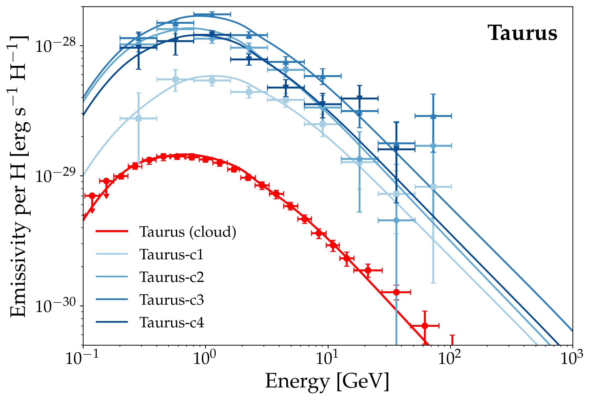
图注：Pion-decay $\gamma$-ray emissivity per H atom for the Taurus molecular cloud (red; with over-plotted data points from~\citealt{Neronov2017A&A}) and representative embedded clumps (blue; data from~\citealt{Yang2023NatAs}). Points show the binned \(\textit{Fermi}-LAT\) emissivities and quoted uncertainties, while solid curves show the corresponding best-fit spectra from our CR-transport model adopted for each target (Table~\ref{tab:fit_results}). Relative to the cloud-scale spectrum, the clumps show both a higher specific emissivity and a stronger low-energy turnover/suppression below a few $10$~GeV; in a strong-scattering (slow-diffusion) interpretation of CR transport through the region, this requires diffusion coefficients at 1~GeV suppressed by up to $\sim 300$ compared to the canonical ISM value.
对应解读：建议重点查看的主要数据与模型比较；Taurus云和嵌入团块的γ射线发射率拟合段落。
入选理由：这是候选图中最直接连接观测数据与CR输运模型的核心图：包含Fermi-LAT分箱发射率、不确定度、云尺度与团块尺度的最佳拟合谱，并展示低能转折/压低以及扩散系数相对ISM被强烈抑制这一主要结论。
来源与置信度：\(arxiv_source\)；high；\(arxiv_source\) / pasj.tex:figure[8]
Fig10
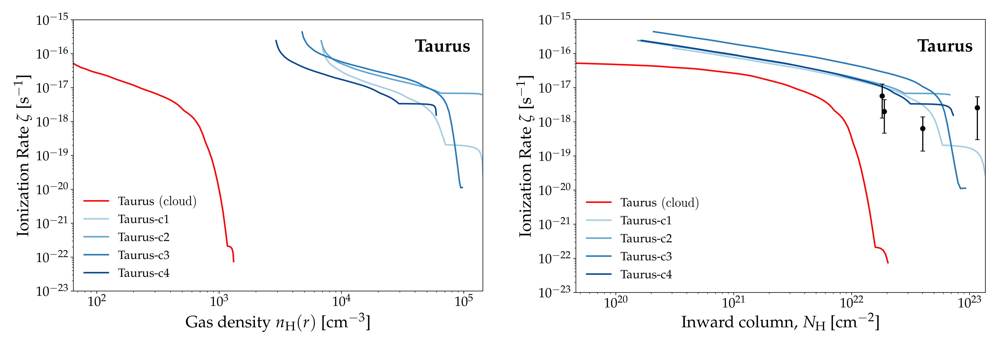
图注：Predicted CR ionization rate per H atom, $\zeta$, as a function of (left) local gas number density, and (right) inward hydrogen column density the CRs propagate through, $N_{\rm H}$, for the Taurus molecular cloud (red) and the four embedded $\gamma$-ray--bright clumps (blue). The left abscissa is the local density of the gas, while the right abscissa is the radial column integrated from the cloud surface to depth $r$. This ensures that each curve traces the decline of $\zeta$ into the shielded interior as low-energy primary CRs are progressively attenuated. Black points on the right plot show representative ionization-rate constraints for Taurus dense cores from \(\citep{Redaelli2025A&A},\) converted from the commonly quoted per-$\mathrm{H}_2$ convention to a per-H rate for direct comparison.
对应解读：关键诊断量逐图导读；CR电离率随气体密度和穿透柱密度变化，并与Taurus稠密核约束比较。
入选理由：该图把模型预测转化为可与分子云化学/电离观测直接比较的诊断量，横轴同时给出局部密度和向内柱密度，能支撑论文关于CR穿透、低能CR衰减和电离率约束的多波段检验。
来源与置信度：\(arxiv_source\)；high；\(arxiv_source\) / pasj.tex:figure[10]
Fig09
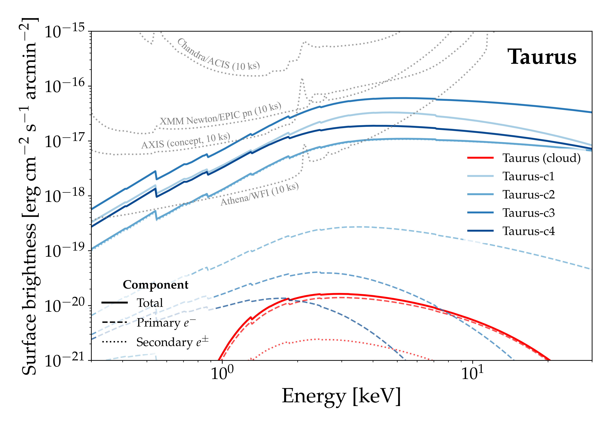
图注：{Predicted total absorbed X-ray surface-brightness spectra of synchrotron emission from CR electrons for the Taurus molecular cloud (red) and representative embedded clumps (blue) under the model parameter fits shown in Figure~\(\ref{fig:clump_gamma_fit}.\) Contributions from primary and secondary electrons are indicated using dashed and dotted lines, respectively, where the secondary component is dominated by 0.1-1 TeV electrons.} Gray dotted curves show illustrative, counts-limited surface-brightness scalings (not full detectability forecasts) estimated by requiring a minimum of $N_{\min}=50$ source counts in one logarithmic energy bin ($\Delta\log_{10}E=0.2$) for an exposure time of 10 ks, with several current and proposed instruments (see Appendix~\(\ref{app:xray_sens}\) for details). As these clouds would be extended due to the close proximity of Taurus, the extraction area is capped at the instrument field of view, and we note that our background-limited performance may be less favorable for extended emission than estimated here.
对应解读：未来X射线灵敏度预测；由primary/secondary电子产生的硬X射线同步辐射表面亮度。
入选理由：该图对应论文摘要中近未来设施可探测硬X射线同步辐射分量的关键预测，区分原初电子与次级电子贡献，并叠加仪器计数限制标尺，是连接γ射线强子相互作用与X射线可观测性的主要图。
来源与置信度：\(arxiv_source\)；high；\(arxiv_source\) / pasj.tex:figure[9]
Fig02
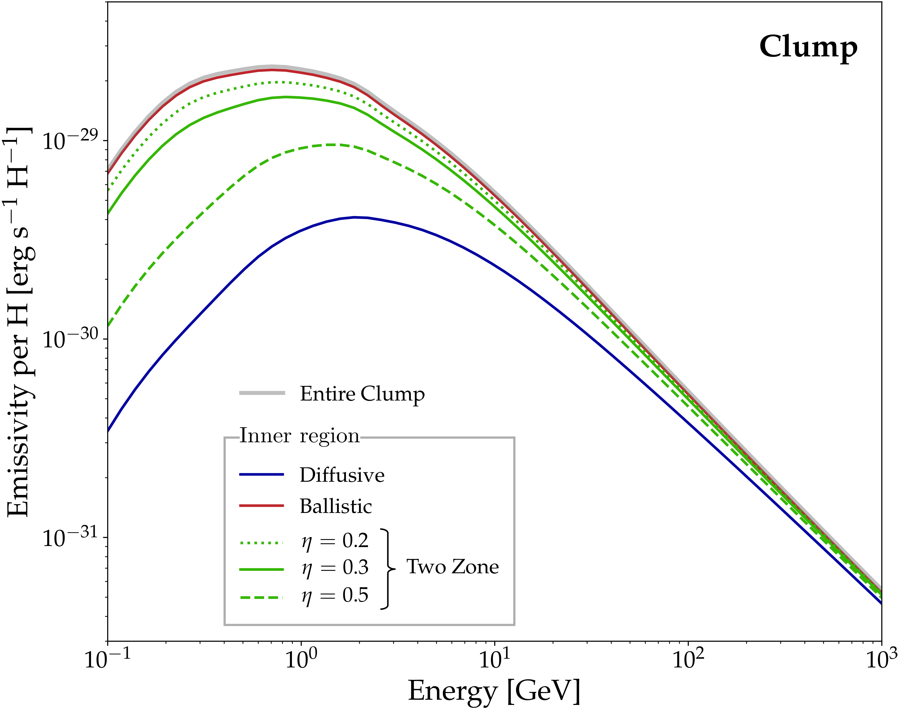
图注：Pion-decay $\gamma$-ray emissivity per H atom produced by CR protons in the fiducial clump model. The thick gray line shows the emissivity integrated over the full clump. Other lines show the contribution from the inner $r<0.25\,\mathrm{pc}$ region, comparable to the smallest angular scale that could be resolved for a clump at $d=150\,\mathrm{pc}$ in this energy range with an instrument like \(\textit{Fermi}--LAT.\) {Colored curves indicate the CR transport model: fully diffusive (blue), ballistic (red), and two-zone models (green) with transition parameter $\eta$ (values as labeled).} In the ballistic case, the inner-region spectrum closely tracks the clump-integrated emissivity. As the extent of the diffusive layer increases (larger $\eta$ to the fully diffusive limit), the core emission below $\sim 100\,\mathrm{GeV}$ becomes progressively suppressed. This effect arises due to the enhanced magnetic scattering the CR protons experience in the diffusive layer, which boosts their attenuation by the pp interaction. Losses are more severe at lower energies where CRs diffuse more slowly.
对应解读：模型比较与传播情景诊断；fiducial clump中π0衰变γ射线发射率随CR输运模式变化。
入选理由：该图清楚比较全扩散、弹道和two-zone模型在内区及整体团块中的γ射线发射率差异，直接展示低于约100 GeV的核心发射压低如何由扩散层散射和pp损失增强产生，是理解Fig08观测拟合物理来源的基础图。
来源与置信度：\(arxiv_source\)；high；\(arxiv_source\) / pasj.tex:figure[2]
Fig05
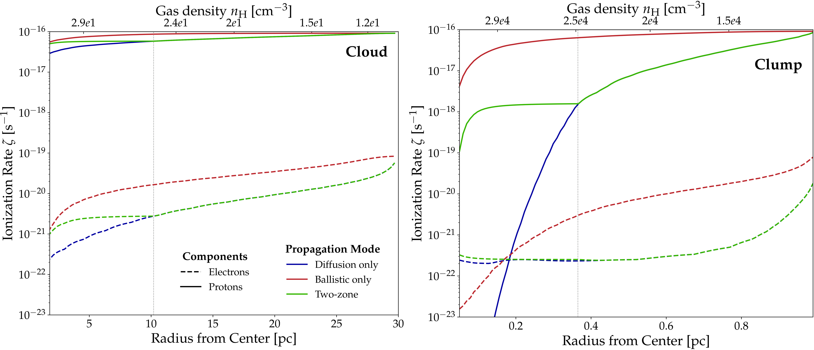
图注：CR ionization rate profiles, $\zeta(r)$, for the fiducial molecular cloud (left) and a clump (right). In both cases, for comparative purposes, the LIS is set as the irradiating external CR flux. We compute $\zeta$ by integrating the local CR proton and electron fluxes over ion-producing cross-sections (direct and dissociative ionization of H$_2$, and weighted double ionization), including secondary ionizations. Curves compare three transport prescriptions: fully diffusive (blue), fully ballistic (red), and a two-zone model (green) with an outer diffusion-dominated layer and an inner quasi-ballistic region; the adopted transition parameter is $\eta=0.3$ (cf.\ Figure~\ref{fig:cloud_framework}), with the position of the transition indicated by the vertical dotted gray line. The upper axis shows the gas number density at a given position, according to the adopted profile $n_{\rm H}(r)$. Line styles separate proton (solid) and electron (dotted) contributions, including secondary electrons from hadronic interactions. For the fiducial parameters, the total ionization rate is proton-dominated. It varies only weakly with depth in the low-density cloud, with values close to the canonical \(\textit{Spitzer}\) value. In clumps, the ionization rate shows appreciable strong variation with the underlying CR transport properties.
对应解读：关键图表逐图导读；云和团块中的CR电离率径向剖面及不同输运模型比较。
入选理由：该图同时给出云尺度和团块尺度的电离率径向变化，区分质子和电子贡献，并标出two-zone转变半径，能说明为什么高密度团块中的电离率对输运机制更敏感。
来源与置信度：\(arxiv_source\)；high；\(arxiv_source\) / pasj.tex:figure[5]
Fig11
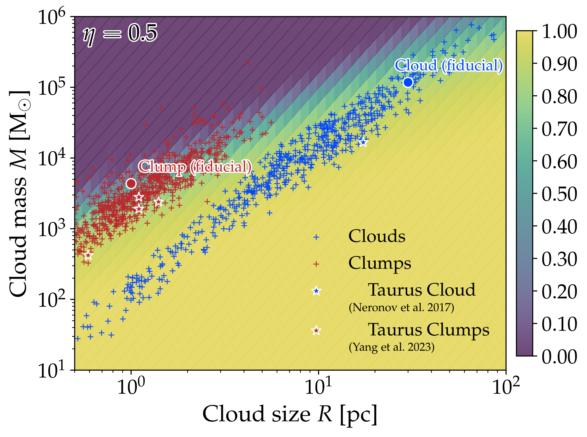
图注：Mass-size map of the predicted low-energy $\gamma$-ray deficit in molecular structures for the fiducial two-zone CR-transport model with transition parameter $\eta=0.5$ (labeled), and diffusion coefficient normalization of $3\times 10^{26}$ cm$^2$ s$^{-1}$ set as that adopted for our fiducial clump model. Colors show the degree of deficit at $E_\gamma=1$~GeV, where a value of 1 (yellow) indicates no suppression compared to a ballistic propagation scenario, while smaller values indicate a stronger low-energy deficit. Crosses indicate representative Galactic molecular clouds (blue) and dense clumps (red), with data obtained from~\(\cite{Urquhart2014MNRAS, Chen2020MNRAS}.\) Open circles mark the fiducial cloud and clump models used for the parameter studies. Star symbols highlight the Taurus cloud and the $\gamma$-ray--detected Taurus clumps used in the illustrative application in this work (section~\ref{sec:illustrative_applications}).
对应解读：参数空间与系统趋势；质量-尺寸平面上的低能γ射线亏缺预测。
入选理由：该图把fiducial two-zone输运模型推广到分子云和致密团块的质量-尺寸空间，标出Taurus及代表性样本位置，有助于判断论文结论在不同分子结构中的适用范围和观测目标优先级。
来源与置信度：\(arxiv_source\)；high；\(arxiv_source\) / pasj.tex:figure[11]
强相关工作
相似工作的检索可从三个关键词链展开。第一条是“molecular cloud gamma-ray emissivity / local cosmic-ray spectrum / Fermi-LAT”，用于找到把分子云当作被动靶测量银河宇宙线海的工作；本文图 8 已引用 Neronov 2017 和 Yang 2023 的 Taurus/团块 emissivity 数据，读者应沿这些论文的引言和引用链回溯气体模板、Fermi-LAT 分析方法和单位 H 发射率定义。第二条是“cosmic-ray penetration molecular clouds / ionization rate dense cores”，用于连接分子离子化学测得的 \(\zeta\) 与低能 CR 屏蔽问题；图 10 中 Redaelli 2025 类型的 Taurus dense core 约束是直接对照。
基础理论文献应从宇宙线输运和波粒相互作用两端查起：银河宇宙线扩散、Alfvén 波自激发、流不稳定性、离子-中性阻尼、以及部分电离等离子体中的散射抑制。检索词可用“self-generated turbulence cosmic rays molecular clouds”、“ion-neutral damping cosmic-ray streaming”、“cosmic ray exclusion dense clouds”。这些工作提供判断弹道、扩散和 two-zone 模型是否物理合理的微物理背景。
张力线索主要有三类。第一，伽马射线谱形与气体质量系统误差的张力：若不同气体示踪剂给出不同柱密度，所谓 emissivity 增强或低能亏缺可能改变。第二，伽马射线与电离率的张力：GeV 质子主导 \(\pi^0\) 伽马射线，而 MeV–GeV 低能粒子更控制 \(\zeta\)，外推谱形和低能屏蔽假设很关键。第三，伽马射线与 X 射线同步辐射的张力：若 hadronic 相互作用足够强，次级电子应有可预期的同步信号；未来硬 X 射线上限可能排除部分强散射参数空间。
建议阅读路径是先读综述或教材中的 CR transport 和 molecular cloud gamma-ray 章节，再读 Fermi-LAT 分子云 emissivity 观测论文，随后读 CR ionization dense cores 的观测/化学建模论文，最后回到本文的 multiwavelength framework。这样能避免只从单一波段接受结论，也能更清楚地区分“观测事实”“模型解释”和“微物理推断”三层含义。
相似工作：
（未提供）
基础理论 / 方法工作：
（未提供）
相反观点 / 张力线索：
（未提供）
5. Towards the Deployment of the First NectarCAM, a Medium-Sized-Telescope Camera for the Cherenkov Telescope Array Observatory
- 来源：arXiv / astro-ph.HE
- 链接：https://arxiv.org/abs/2605.18596v1
- 作者：Pablo Correa, CTAO NectarCAM Collaboration
- 评分：novelty 7/10，importance 8/10，relevance 10/10，final 9.40/10
- 推荐理由：CTA中型望远镜NectarCAM首台部署进展，给出时间/电荷分辨率、标定和量产状态；IACT/CTA仪器论文与伽马射线天文直接相关，值得关注。
中文题目：首台 NectarCAM 走向部署：面向切伦科夫望远镜阵列天文台中型望远镜的相机
做了什么：这篇会议论文汇报了 CTAO 中型望远镜相机 NectarCAM 从工程验证走向首台量产部署的状态。NectarCAM 面向约 \(80\,\mathrm{GeV}\) 到 \(50\,\mathrm{TeV}\) 的甚高能伽马射线观测，由 \(1855\) 个光电倍增管像素和 \(265\) 个模块组成，每个像素接入 NECTAr3 读出芯片，提供 \(12\) 位、GHz 级采样和约 \(0.7\,\mu\mathrm{s}\) 的典型读出死时间。文章重点给出相机时间分辨率、 charge 分辨率和近期实现的标定流程，并说明首台生产线 NectarCAM 计划在 \(2026\) 年夏季具备发运条件，用于装备 CTAO 的一台 MST pathfinder。
为什么重要：CTAO 的科学能力不仅取决于镜面面积和阵列布局，也强烈依赖相机能否稳定地把纳秒级切伦科夫闪光转成可标定、低死时间、低系统误差的图像。NectarCAM 是 MST 能段的核心相机之一，它决定 CTAO 在几十 GeV 到几十 TeV 之间的角分辨、能量重建、背景抑制和瞬变响应。
理论 / 观测 / 仪器方法价值：这篇文章的价值主要在仪器和方法层面：它把相机像素、模块、NECTAr3 波形采样、时间标定、charge 标定和生产计划连在一起，给出从实验室性能到阵列部署之间的关键接口。对做 CTAO 数据分析、仪器响应函数、触发模拟或标定管线的人来说，它说明了未来 MST 数据中哪些硬件效应必须进入模型。
为什么应该关注：如果你关心 CTAO 什么时候能真正产生高质量中能段伽马射线数据，这篇文章值得看。它不是提出新天体模型，而是在回答一个更基础的问题：相机是否已经足够成熟，能把阵列科学目标所需的 \(\mathrm{ns}\) 级时序和光电子级电荷信息可靠地交给重建算法。
展开详细解读：文章讲解、背景、理论、重点章节、图表与相关工作
文章详细讲解
科学问题：成像大气切伦科夫望远镜要探测的是大气簇射产生的极短、极弱、空间上呈椭圆形的切伦科夫光斑。对 CTAO 的中型望远镜而言，关键难题不是单纯“看见”闪光，而是以足够高的时间精度、动态范围和低死时间记录数千像素的波形，同时让不同像素、模块和相机之间的响应可以被统一标定。NectarCAM 的目标就是为 CTAO 的 MST 提供这种高通量、可量产、可维护的相机系统。
作者怎么做：论文以 NectarCAM 的硬件架构和实验室/集成测试为主线，介绍 \(1855\) 个像素、\(265\) 个模块、光电倍增管与 NECTAr3 芯片的读出链路。NECTAr3 的核心能力是 GHz 级波形采样和 \(12\) 位数字化，允许在纳秒尺度上重建切伦科夫脉冲到达时间和积分电荷。文章特别强调了时间分辨率、charge 分辨率以及新近实现的标定技术，因为这些性能直接进入 CTAO 的图像清洗、方向重建、能量估计和伽马/强子分离。
关键结果：摘要层面给出的主要结论是，NectarCAM 已经从原型和性能验证阶段推进到首台生产线相机即将部署的阶段；典型读出死时间约 \(0.7\,\mu\mathrm{s}\)，这对于高夜天光背景和阵列触发率下保持有效曝光很重要。时间和 charge 性能被作为核心验收指标展示，说明相机不仅能采样波形，还能通过标定把像素间增益、时间偏移和读出非线性压到可用于科学分析的水平。
局限和下一步：这类会议论文通常不会完整给出最终 CTAO 仪器响应函数，也不会把相机性能直接转化为点源灵敏度、能量分辨率或角分辨率的最终数值；读者应把它看作部署前状态报告，而不是完整性能论文。下一步最关键的是首台生产线 NectarCAM 发运、安装到 MST pathfinder、完成在望远镜上的夜空背景、触发、标定、温控和长期稳定性测试。真正的检验将来自端到端数据：从 muon 标定、LED/laser 标定、宇宙线事件率到标准烛光源观测，逐步把实验室性能转换为阵列级科学性能。
背景知识
NectarCAM 服务的观测技术是成像大气切伦科夫技术。甚高能伽马射线进入大气后不会被地面探测器直接捕获，而是产生电磁簇射，簇射中的相对论带电粒子发出持续几纳秒的切伦科夫光。望远镜相机记录这些光在焦平面上的二维图像，再由图像形态和多望远镜几何重建入射伽马射线的方向、能量和类型。
CTAO 的设计采用不同口径望远镜覆盖宽能段：大口径望远镜偏低能，中型望远镜覆盖核心能段，小型望远镜扩展到最高能。MST 是 CTAO 阵列科学产出的骨干之一，因为许多银河系和河外源的谱能量分布在 \(\sim 0.1\) 到数十 \(\mathrm{TeV}\) 之间最关键。NectarCAM 正是为 MST 设计的相机路线之一，承担把光学系统收集到的切伦科夫闪光转为高精度波形数据的任务。
历史上，H.E.S.S.、MAGIC 和 VERITAS 已经证明 IACT 技术能实现高灵敏度伽马射线天文学，但 CTAO 的目标是进一步扩大能段、提高灵敏度、开放数据并实现更统一的仪器响应。为此，相机不能只是“能工作”，还必须可量产、可重复标定、可远程运维，并能将硬件响应稳定地写入仿真和数据重建框架。
现在重新关注这类相机论文的原因很实际：CTAO 正处在从设计、原型、预生产走向站址部署的阶段。对未来几年要使用 CTAO 数据的人来说，早期相机性能会影响第一批数据释放的系统误差、低能阈值、瞬变观测能力和跨望远镜标定。硬件论文看似工程化，但它决定之后高能源物理结论的置信度。
一个常见误区是把相机像素数或采样率简单等同于科学性能。实际上，科学性能取决于光收集效率、像素增益稳定性、时间同步、触发逻辑、读出死时间、夜天光条件、图像清洗阈值和仿真一致性等因素共同作用。另一个误区是认为标定只是在观测后做一次修正；对 IACT 来说，标定贯穿硬件验收、每晚运行、长期老化监测和仪器响应函数生成。
基础理论 / 方法脉络
从物理图像看，IACT 相机记录的是大气簇射投影到焦平面的切伦科夫光分布。单个伽马射线事件的信号持续时间通常只有数纳秒，光斑跨越若干到几十个像素。相机必须在高夜天光背景下区分真实簇射脉冲和随机背景涨落，因此波形采样、触发窗口、像素时间一致性和电荷积分窗口都直接影响信噪比。
NectarCAM 使用光电倍增管作为像素探测器，入射光子经光阴极转换为光电子，并通过倍增链形成电流脉冲。NECTAr3 芯片对模拟波形进行高速采样和数字化。对每个像素，最基本的重建量是脉冲积分电荷，通常以 photoelectron 数表示；另一个核心量是脉冲到达时间，用于图像清洗、像素聚类、阵列级时间一致性检查和偶然触发抑制。
本文涉及的性能指标可以理解为两类：时间分辨率和 charge 分辨率。时间分辨率描述在给定光强下，重建脉冲时间相对于真实注入时间或参考通道的散布；charge 分辨率描述重建光电子数相对于真实或标定注入电荷的相对误差。低光强时，泊松涨落、夜天光和电子噪声主导；高光强时，增益非线性、饱和、积分窗口选择和 digitizer 量化误差更重要。
观测方法上，相机性能不会直接等同于天体 flux，而是通过仪器响应函数传递到有效面积、能量迁移矩阵、点扩散函数和背景率。标定流程的任务是把原始 ADC 计数转化为可比较的物理量，并持续监测像素间增益、时间偏移、坏道和温度依赖。若标定误差未被正确传播，最终会表现为能量尺度偏移、低能阈值变化、图像形态系统误差或伽马/强子分类偏差。
常见退化包括：增益变化与入射光强变化的退化、夜天光升高与低能事件清洗效率下降的退化、时间偏移与簇射几何重建残差的退化，以及触发阈值与有效面积低能端形状的退化。NectarCAM 这类相机论文的关键意义就在于提前量化这些退化关系中硬件端可控的部分，使后续分析不必把所有不确定性都归入天体模型。
公式与推导
IACT 相机的起点是把入射切伦科夫光子数转为光电子数。若第 \(i\) 个像素接收的光子谱通量为 \(\Phi_i(\lambda,t)\)，光学透过率为 \(T_i(\lambda)\)，光阴极量子效率为 \(QE_i(\lambda)\)，则期望光电子数可写为
这里 \(A_{\rm opt}\) 是等效光收集面积，\(\Delta t\) 是积分窗口；该式说明相机标定必须同时处理光学效率、像素效率和时间窗口。
光电子产生首先服从计数统计。若平均光电子数为 \(\mu_i\)，实际光电子数 \(n_i\) 的理想分布为
在低光强下，\(\sqrt{\mu_i}\) 型泊松涨落是 charge 分辨率的硬下限；任何电子噪声、夜天光和增益不确定性都会叠加在这个下限之上。
波形采样把模拟脉冲转为 ADC 序列。若采样间隔为 \(\Delta t_s\)，第 \(k\) 个采样点可近似写为
其中 \(D_{ik}\) 是 ADC 值，\(B_i\) 是基线，\(G_i\) 是增益，\(p(t)\) 是归一化脉冲模板，\(t_i\) 是像素到达时间，\(\epsilon_{ik}\) 包括电子噪声和夜天光涨落。NECTAr3 的 GHz 级采样使 \(p(t)\) 和 \(t_i\) 可从少数纳秒宽的脉冲中恢复。
常用 charge 估计是对选定窗口求和并扣除基线：
这里 \(W\) 是积分窗口，\(c_{ik}\) 可表示采样校正或单位换算因子，\(\hat Q_i\) 通常以 photoelectron 为单位。窗口过窄会漏掉脉冲尾部，窗口过宽会引入更多夜天光噪声，因此标定流程必须优化 \(W\)。
charge 分辨率可用相对均方误差描述：
其中 \(Q\) 是真实或标定注入电荷，\(\hat Q\) 是重建电荷。理想泊松极限给出 \(R_Q\sim Q^{-1/2}\)，但实际曲线在低 \(Q\) 受噪声抬高，在高 \(Q\) 可能受非线性或饱和抬高。
到达时间可通过模板匹配或加权矩估计。一个简化的时间估计为
时间分辨率定义为
这里 \(t_{\rm ref}\) 是注入光源或参考像素时间；通常 \(\sigma_t\) 随 \(Q\) 增大而改善，直到系统时钟抖动、模板误差和通道间校准误差成为下限。
读出死时间影响有效曝光。若事件触发率为 \(r\)，单事件死时间为 \(\tau_d\)，非延长死时间模型下 live-time fraction 近似为
NectarCAM 摘要给出的 \(\tau_d\sim0.7\,\mu\mathrm{s}\) 意味着在合理触发率下死时间损失可被控制，但在高夜天光、强宇宙线率或瞬变高触发设置中仍需监控。
相机层面的像素测量最终进入事件似然或重建代价函数。若给定簇射模型参数 \(\theta\) 预测像素期望 \(m_i(\theta)\)，一种简化的高斯近似为
这里 \(\sigma_{Q,i}\) 和 \(\sigma_{t,i}\) 由相机性能与标定给出，\(C\) 是与 \( heta\) 无关的常数。该式展示了为什么本文报告的 charge 和时间分辨率会直接影响方向、能量和粒子类型重建。
从重建到天体 flux，还需有效面积和曝光。对能量区间 \([E_1,E_2]\)，观测到的伽马事件数可写为
其中 \(F(E)\) 是源微分流量，\(A_{\rm eff}(E)\) 是包含触发、清洗、重建和选择效率的有效面积，\(T_{\rm obs}\) 是有效观测时间。相机标定错误会通过 \(A_{\rm eff}(E)\) 和能量迁移矩阵进入最终科学结果。
模型拟合 / 应用方法
这篇论文的“拟合”重点不在天体谱模型，而在仪器响应和标定参数。典型拟合量包括像素基线 \(B_i\)、增益 \(G_i\)、脉冲模板 \(p(t)\)、通道时间偏移、charge 非线性曲线、噪声方差以及坏道掩膜。标定数据通常来自受控光源注入、暗场/基线运行、夜天光监测、muon 环和宇宙线事件样本。
参数估计可以用最小二乘、最大似然或分层标定模型完成。对于固定光强注入，重建 charge 分布可用泊松光电子统计卷积单光电子响应和电子噪声来拟合；对于波形，模板匹配可同时估计到达时间和幅度。重要的是残差不应只看均值，还要看随光强、像素位置、温度、时间和读出通道编号的系统性趋势。
主要退化关系包括增益与光源绝对强度的退化、基线漂移与低光强 charge 偏差的退化、脉冲模板错误与时间估计偏差的退化、以及高光强非线性与真实大簇射能量估计的退化。若只用单一光强或单一时间窗口标定，可能在科学数据的宽动态范围内失效。因此读者应关注论文是否展示多光强、多模块和长期稳定性的性能曲线。
系统误差方面，温度依赖、PMT 高压稳定性、NECTAr3 通道差异、交叉串扰、采样时钟相位、夜天光背景和触发选择都会进入误差预算。对实际 CTAO 分析而言，这些误差会进一步传播到仪器响应函数：能量尺度、有效面积低能端、点扩散函数尾部和背景接受率都可能受影响。
实际应用场景中，NectarCAM 的标定结果会用于在线数据质量监控、离线事件重建、Monte Carlo 仿真调谐和跨望远镜一致性检查。首台相机部署后，模型拟合还要从实验室条件扩展到真实观测条件，包括星场亮度梯度、月光条件、镜面退化和气溶胶变化。
重点章节 / 结果段落怎么读
-
相机架构与硬件设计：读者应先看 NectarCAM 的像素数、模块化结构、PMT 与 NECTAr3 读出链路。这里决定了后续所有性能指标的硬件边界，包括采样率、动态范围、死时间和可维护性。
-
时间分辨率性能：重点看时间分辨率如何随注入光强变化，以及是否给出像素间或模块间分布。对 IACT 事件来说，时间信息不仅用于触发，也用于图像清洗和背景抑制。
-
charge 分辨率性能：应关注低 photoelectron 区域是否接近统计极限，高光强区域是否出现非线性或饱和迹象。charge 分辨率直接影响图像参数、能量重建和低能阈值。
-
最新标定技术：这一部分是仪器论文中最值得细读的内容。需要看作者如何处理基线、增益、时间偏移、非线性、通道均一性和稳定性，以及这些流程是否能自动化到生产线和站址运行。
-
生产与部署计划：最后看首台生产线 NectarCAM 的状态、发运时间和 MST pathfinder 安装计划。部署节奏决定了这些实验室性能何时能转化为真实 CTAO 数据。
建议重点查看的图表
-
相机或模块架构图：检查 \(1855\) 像素和 \(265\) 模块的几何布局、模块边界和读出分区，因为模块边界常是非均一响应的来源。
-
波形示例图：看单像素脉冲在 GHz 采样下的形状、基线稳定性、峰值采样点数量和积分窗口位置。关键是脉冲是否足够被采样重建，而不是只看峰值高度。
-
时间分辨率随 charge 的曲线：横轴通常是注入 photoelectron 或重建 charge，纵轴是 \(\sigma_t\)。应检查低光强区的噪声抬升和高光强区的系统下限。
-
charge 分辨率随 charge 的曲线：应与泊松极限或 CTAO 要求曲线比较，注意是否在低光强和高光强两端偏离预期。
-
标定前后像素均一性图：看增益、时间偏移或残差在相机平面上的二维分布。若残差沿模块或电子学通道成块状分布，说明系统误差可能不是随机的。
-
死时间或读出性能图表：检查事件率增加时 live time 是否按预期下降，以及 \(\sim0.7\,\mu\mathrm{s}\) 死时间是否适用于所有运行模式。
-
生产状态或验收流程表：看哪些测试已完成、哪些仍在进行，以及首台生产线相机与原型之间是否存在硬件或固件差异。
关键图表逐图导读
图 1：若论文给出 NectarCAM 整体照片或焦平面布局，横纵坐标通常对应相机平面位置或模块编号。读图时不要只看像素数量，而要看模块边界、缺口、边缘像素和读出分区；这些位置在实际数据中容易出现响应非均一和清洗阈值差异。
图 2：若有电子学链路或 NECTAr3 读出示意图，应沿信号路径从 PMT、前端放大、采样、数字化到数据读出逐步看。关键结论是每个像素如何获得 GHz 级波形和 \(12\) 位 ADC；读图陷阱是把采样率误解为无限时间精度，实际时间精度还受脉冲形状、噪声和标定影响。
图 3：时间分辨率图通常以 charge 或 photoelectron 数为横轴，以时间残差 RMS 为纵轴。数据点若随光强增加下降，说明统计噪声逐渐减小；若在高光强趋于平台，平台值就是系统时间标定下限。需要检查误差棒、不同像素/模块是否分组，以及是否存在 outlier。
图 4：charge 分辨率图通常以真实或注入 charge 为横轴，以相对分辨率为纵轴，并可能叠加 CTAO 需求或泊松极限。读者应重点看低 charge 区是否满足图像清洗和低能触发需求，高 charge 区是否因电子学非线性偏离。若只给平均曲线而没有像素分布，要警惕坏道和模块差异被平均掩盖。
图 5：标定结果二维相机图若展示增益、时间偏移、基线或残差，坐标是焦平面像素位置，颜色表示标定参数。理想情况是随机小幅散布；若出现按模块排列的块状结构，应进一步查电子学、光源照明或温度系统误差。
图 6：生产和部署状态图或表应按模块生产、相机集成、验收测试、运输和望远镜安装列出。这里的主要结论不是科学灵敏度，而是项目风险：哪些性能已在生产线复现，哪些仍需在站址 commissioning 中验证。
论文原图 / 可嵌入图片
Fig02
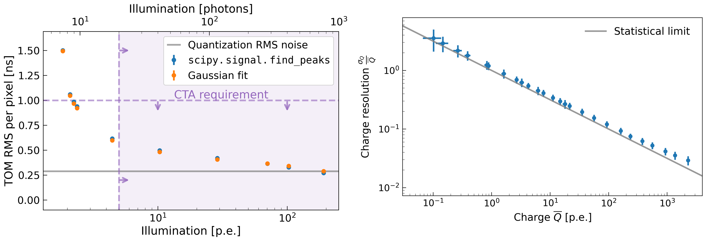
图注：Performance of the NectarCAM in terms of time resolution and charge resolution. \(\textit{Left}\): The RMS of the ToM per pixel as a function of the pixel illumination. The data points show the ToM inferred using two complementary methods. The gray line indicates the pixel timing precision limit. The CTAO requirements are indicated by the shaded region. \(\textit{Right}\): Relative charge resolution as a function of the charge averaged over all pixels. The gray line corresponds to the statistical lower limit described in the text.
对应解读：对应“建议重点查看的图表”中的第3项时间分辨率随charge曲线、第4项charge分辨率随charge曲线，以及“关键图表逐图导读”中图3、图4的性能曲线解读。
入选理由：这是最核心的性能图，直接同时展示NectarCAM的时间分辨率和相对charge分辨率随像素照明或charge的变化，并包含CTAO要求阴影区、像素 timing precision limit 和统计下限等关键参考线。它最能支撑日报关于低光强噪声抬升、高光强系统下限、charge统计极限和验收指标的详细讨论。
来源与置信度：\(arxiv_source\)；high；\(arxiv_source\) / \(nectarcam_moriond_2026.tex\):figure[2]
Fig01
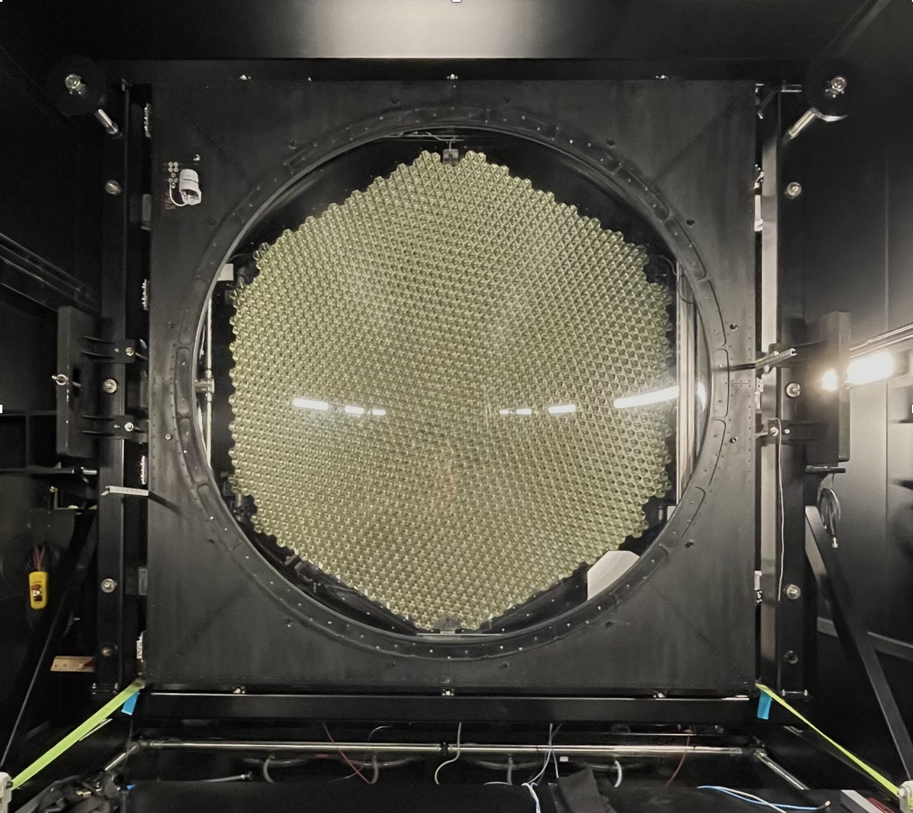
图注：Frontal view of NectarCAM1 in the dark room of the assembly hall at CEA/Irfu. The focal plane of 1855 pixels is visible, as well as the white target (on the bottom right between the focal plane and the shutter).
对应解读：对应“建议重点查看的图表”中的第1项相机或模块架构图，以及“关键图表逐图导读”中图1关于NectarCAM整体照片或焦平面布局的解读。
入选理由：该图展示NectarCAM1正面实物和1855像素焦平面，可用于说明相机规模、像素阵列和部署前集成状态。虽然它不是带坐标和定量残差的性能图，但能支撑日报中关于焦平面布局、边缘像素、模块化相机结构及首台生产线相机状态的背景说明。
来源与置信度：\(arxiv_source\)；high；\(arxiv_source\) / \(nectarcam_moriond_2026.tex\):figure[1]
强相关工作
这篇工作应放在 CTAO 相机和 MST 技术路线的背景下阅读。相似工作包括 CTAO LST 相机、SST 相机、FlashCam、NectarCAM 原型测试以及 H.E.S.S.、MAGIC、VERITAS 相机升级论文。建议检索关键词包括 “CTAO NectarCAM NECTAr3”, “CTA MST camera”, “Cherenkov camera charge resolution”, “IACT time resolution calibration”, “FlashCam NectarCAM comparison”。
基础理论方面，应回到成像大气切伦科夫技术、Hillas 参数、多望远镜几何重建、光电子统计和仪器响应函数。与本文可能形成张力或对照的是不同相机技术路线的取舍：PMT 与 SiPM、模拟触发与数字触发、波形采样深度与死时间、复杂标定与可维护性。若要比较观点，应检索 “FlashCam CTA MST”, “NectarCAM performance requirements”, “CTA instrument response functions”, “IACT calibration systematic uncertainties”。
相似工作：
- https://arxiv.org/abs/2605.18596
- https://www.cta-observatory.org/
基础理论 / 方法工作：
- https://doi.org/10.1007/s10686-019-09640-6
- https://arxiv.org/abs/1709.07997
相反观点 / 张力线索：
（未提供）
6. Diffuse gamma-ray emission in the vicinity of open cluster Berkeley 87
- 来源：arXiv / astro-ph.HE
- 链接：https://arxiv.org/abs/2605.17636v1
- 作者：Ziwei Ou, Xiaolong Yang
- 评分：novelty 7/10，importance 8/10，relevance 10/10，final 9.40/10
- 推荐理由：Fermi-LAT探测Berkeley 87附近扩展GeV弥散伽马射线并讨论强子起源，直接涉及恒星团宇宙线加速和伽马射线天文，值得跟进。
中文题目：疏散星团 Berkeley 87 附近的弥散伽马射线辐射
做了什么：这篇文章用 Fermi-LAT 数据在年轻大质量疏散星团 Berkeley 87 方向报告了一个角延展约 \(0.36^\circ\) 的弥散伽马射线源，谱形可用幂律描述，光子谱指数约为 \(\Gamma\simeq2.68\)。作者把空间延展、能谱和周围气体环境联系起来，认为星团强恒星风加速强子宇宙线、再与稠密气体碰撞产生 \(\pi^0\) 衰变伽马射线，是比纯轻子情景更自然的解释。核心价值在于：它把开放星团作为潜在银河宇宙线加速器来检验，而不只是关注超新星遗迹或脉冲星风云。
为什么重要：银河宇宙线的来源长期不应只局限于超新星遗迹。年轻大质量星团包含多个大质量恒星、强恒星风、可能的风-风碰撞和湍流泡结构，理论上能够提供持续的机械功率和较大加速体积。如果 Berkeley 87 的弥散伽马射线确实来自强子过程，它将为“星团/恒星风泡也是银河宇宙线加速场所”提供一个新的候选个例，并帮助比较不同星团的加速效率、扩散环境和气体靶密度。
理论 / 观测 / 仪器方法价值：对观测而言，这项工作展示了如何在复杂银河面背景中用 Fermi-LAT 做延展源搜索、谱拟合和多波段环境解释。对理论而言，它给出了检验恒星风机械能转化为宇宙线能量的对象，并可约束 Berkeley 87 周围粒子扩散和气体分布。对方法而言，关键不只是“有没有显著源”，而是延展模板、背景模型、点源混淆、气体柱密度和谱形之间是否一致。
为什么应该关注：如果你关心银河宇宙线起源、TeV halo、星团风泡、Fermi-LAT 延展源分析或未来 CTA/LHAASO 对恒星形成区的搜索，这篇都值得看。它提出的对象不一定已经是定论，但它提供了一个可被后续更高能伽马射线、分子气体观测和更精细扩散模型验证的候选系统。换句话说，关注点不是单个 \(\Gamma\) 值，而是 Berkeley 87 是否代表一类被低估的、持续注入宇宙线的星团环境。
展开详细解读：文章讲解、背景、理论、重点章节、图表与相关工作
文章详细讲解
科学问题：这篇文章要回答的是，年轻大质量疏散星团 Berkeley 87 附近是否存在与星团物理相关的弥散伽马射线辐射，以及这种辐射是否能被解释为星团中大质量恒星风加速粒子后的非热辐射。传统银河高能天体图像中，超新星遗迹常被视为宇宙线加速的主角，但大质量星团也拥有强风、激波、湍流和长时间机械能注入。若星团附近存在空间上延展、谱上非热、并与稠密气体相关的 GeV 辐射，就可能说明星团环境也在加速宇宙线。
作者怎么做：作者使用 Fermi-LAT 的伽马射线数据，对 Berkeley 87 方向进行空间和谱分析。核心步骤包括建立区域内的背景模型、处理已知点源、测试是否需要额外源成分，并进一步比较点源模板与延展模板。论文摘要给出的主要观测量是延展角尺度约 \(0.36^\circ\)，以及幂律光子谱指数 \(\Gamma\simeq2.68\)。这类分析通常还需要检查弥散银河背景、各向同性背景、邻近 4FGL 源、能量依赖点扩散函数和不同空间模板对显著性的影响。
关键结果：论文报告在 Berkeley 87 方向探测到弥散伽马射线辐射，且源不是简单点状；其谱较软，\(\Gamma\simeq2.68\)，更接近传播后宇宙线与气体相互作用的 GeV 谱，而不是非常硬的年轻脉冲星风云谱。作者认为强子情景更受支持，理由是该区域有较高气体密度，星团又具备强恒星风机械能。强子情景下，相对论质子与环境中的氢核碰撞产生中性介子 \(\pi^0\)，随后 \(\pi^0\to2\gamma\)，伽马射线亮度与宇宙线能量密度和靶气体密度共同决定。
局限和下一步：最主要的不确定性来自银河面 Fermi-LAT 分析的系统误差，包括弥散背景模型、未解析点源、气体模板不完备和源延展的能量依赖。仅凭 GeV 谱指数和空间重合通常难以完全排除轻子辐射，例如高能电子的逆康普顿散射或轫致辐射。下一步应结合 CO/HI 气体图、红外尘埃图、射电连续谱、X 射线源表和 TeV 数据，检验伽马射线形态是否真正追踪气体，或者更接近星团风泡、脉冲星候选体或未解析源群。若未来 CTA、LHAASO 或更长时间 Fermi-LAT 数据能测到谱截断或 TeV 延伸，将显著提高物理解释的判别力。
背景知识
Berkeley 87 是银河系中的年轻大质量疏散星团，位于恒星形成活动和星际介质结构都较复杂的区域。年轻星团中包含 O/B 型大质量恒星，恒星风速度可达数千 \(\mathrm{km\,s^{-1}}\)，风的机械能通过激波、湍流和风泡膨胀注入周围介质。这样的环境天然适合讨论非热粒子加速，但观测上要把星团相关辐射同银河面弥散背景和邻近源分开并不容易。
历史上，银河宇宙线起源的主流候选是超新星遗迹，因为超新星爆炸能量和银河宇宙线总功率需求量级匹配，且遗迹激波提供了成熟的一阶费米加速机制。不过，越来越多的观测显示年轻大质量星团、OB 星协和 superbubble 也能产生 GeV 到 TeV 伽马射线。例如 Cygnus cocoon、Westerlund 1、Westerlund 2、30 Doradus C 等系统都推动了“集体恒星风加速”这一图像。
为什么现在值得重新看 Berkeley 87？一方面，Fermi-LAT 长时间累积数据提高了对弱延展源的灵敏度，尤其在 \(\mathrm{GeV}\) 能段可以更好地拟合空间形态和软谱。另一方面，Gaia、红外巡天、CO/HI 巡天和尘埃三维图使星团距离、成员星、气体环境和恒星形成结构的约束更好。对 Berkeley 87 这样的对象，过去可能被视为复杂背景的一部分，现在则可以作为候选宇宙线加速区域进行定量检验。
该领域常见误区之一是把“空间重合”直接等同于物理关联。伽马射线源在银河面上的投影重合很常见，特别是 Fermi-LAT 的角分辨率在低能端有限，因此必须通过延展性、谱形、气体相关性和替代源排除来增强关联可信度。另一个误区是把软谱自动归因于强子过程；事实上，冷却后的电子逆康普顿散射或轫致辐射也可能产生软 GeV 谱。强子解释的优势通常来自气体靶密度、能量预算和多波段缺失约束的综合一致性，而不是单一指标。
基础理论 / 方法脉络
从物理图像看，星团中的大质量恒星通过强恒星风持续向周围注入动能。多个恒星风相互碰撞并与星际介质作用，形成激波、湍流和热泡。带电粒子在磁场不规则性中反复散射，可以从速度不连续或压缩湍流中获得能量。若被加速的是质子和原子核，它们逃逸或扩散到周围分子云和原子气体中后，会通过非弹性碰撞产生 \(\pi^0\) 介子，进而发出伽马射线。
观测上，Fermi-LAT 记录的是伽马射线候选事件的方向、能量和时间，而不是直接的源光度。要从事件图中识别 Berkeley 87 的弥散辐射，需要建立包含银河弥散背景、各向同性背景、已知点源和候选延展源的前向模型。模型经仪器响应函数卷积后，与观测计数比较。由于 Fermi-LAT 的点扩散函数随能量显著变化，低能光子容易把点源模糊成延展结构，因此延展性检验必须特别谨慎。
本文最关键的物理假设是：候选伽马射线源与 Berkeley 87 的星团风和周围稠密气体有关。若采用强子模型，源亮度主要取决于宇宙线质子谱、气体密度和源距离；若采用轻子模型，则逆康普顿辐射取决于电子谱和辐射场能量密度，轫致辐射取决于气体密度，且电子还会受到同步辐射和逆康普顿冷却限制。因而，多波段数据可以帮助破除强子和轻子退化。
关键量包括源的角半径 \(\theta\simeq0.36^\circ\)、光子指数 \(\Gamma\simeq2.68\)、积分能流或光子流量、测试统计量 \(\mathrm{TS}\)、延展显著性 \(\mathrm{TS}_{\rm ext}\)、气体柱密度以及星团机械功率。若知道距离 \(d\)，角半径可换算为物理半径 \(R\simeq d\theta\)，从而估算扩散时间和所需宇宙线能量。常见退化包括距离与能量预算退化、气体密度与宇宙线能量密度退化、背景归一化与源低能谱退化，以及多个未解析点源与真实弥散辐射之间的形态退化。
公式与推导
第一步是从恒星风能量注入开始。单颗大质量恒星风的机械功率可写为
其中 \(\dot{M}\) 是质量损失率，\(v_{\rm w}\) 是风速。对星团而言，总机械功率近似为各成员星贡献之和，即 \(L_{\rm w,tot}=\sum_i L_{{\rm w},i}\)。若有一部分效率 \(\eta_{\rm CR}\) 转化为宇宙线，则累积宇宙线能量为
其中 \(t_{\rm age}\) 是星团年龄。这个式子给出能量预算检验：所需 \(W_{\rm CR}\) 是否小于可用风能。
第二步是假设被加速质子服从幂律谱。常用形式为
其中 \(E_p\) 是质子能量，\(K_p\) 是归一化，\(s\) 是质子谱指数，\(E_{p,\max}\) 是最高能量。若能量范围内没有明显截断，\(\gamma\) 射线光子指数 \(\Gamma\) 通常与母质子谱指数 \(s\) 同阶，但受到碰撞截面、传播和能量阈值影响。
第三步是强子碰撞的伽马射线发射率。对气体数密度 \(n_{\rm H}\)，可写成近似卷积形式
其中 \(q_\gamma\) 是单位体积单位能量的光子产生率，\(c\) 是光速，\(d\sigma_{pp\to\gamma}/dE_\gamma\) 是微分产生截面，\(E_{p,\rm thr}\) 是产生介子的阈值。这个公式说明强子辐射同时依赖宇宙线谱和靶气体密度。
第四步是从体发射率得到观测通量。若源体积为 \(V\)，距离为 \(d\)，则微分能通量可近似写为
如果 \(q_\gamma\) 在源内近似均匀，则 \(F_\gamma\propto n_{\rm H}W_{\rm CR}/d^2\)。因此，距离、气体密度和宇宙线总能量存在强退化。
第五步是观测谱的经验拟合。Fermi-LAT 分析常用幂律光子谱
其中 \(N_0\) 是在枢轴能量 \(E_0\) 处的归一化，\(\Gamma\) 是光子指数。本文报告的 \(\Gamma\simeq2.68\) 表明谱较软。若积分能流定义为 \(G=\int_{E_1}^{E_2}E(dN/dE)dE\)，则
这个量可用于把观测通量换成伽马射线光度。
第六步是角延展与物理尺度。小角近似下，角半径 \(\theta\) 对应物理半径
其中 \(\theta\) 要用弧度。若 \(\theta=0.36^\circ\)，则 \(\theta\simeq6.3\times10^{-3}\,\mathrm{rad}\)。给定距离 \(d\) 后可估算辐射区大小，并与星团风泡或周围云尺度比较。
第七步是扩散约束。若宇宙线从星团注入并扩散到半径 \(R\)，特征扩散时间为
其中 \(D(E)\) 是扩散系数。若 \(t_{\rm diff}\) 远小于星团年龄，则粒子可能已扩散得更远；若观测源仍紧凑，可能暗示局域扩散被湍流抑制。
第八步是似然与显著性。Fermi-LAT 计数分析通常使用泊松似然
其中 \(n_k\) 是第 \(k\) 个空间-能量 bin 的观测计数，\(\mu_k\) 是模型预测计数。源探测显著性常用
延展显著性则比较延展模板和点源模板，
这里 \(\mathcal{L}_{\rm null}\) 是无候选源模型似然，\(\mathcal{L}_{\rm ps}\) 是点源模型似然，\(\mathcal{L}_{\rm ext}\) 是延展源模型似然。
模型拟合 / 应用方法
这类 Fermi-LAT 分析首先拟合的是空间-能量计数模型，而不是直接拟合一条“通量曲线”。模型中通常包含银河弥散模板、各向同性背景、区域内已知 4FGL 源以及候选 Berkeley 87 延展源。候选源可尝试点源、均匀圆盘、高斯模板，或与气体/红外结构相关的空间模板。每个模板的归一化和谱参数与背景参数一起进入似然优化。
参数估计的核心统计量通常是泊松最大似然。对每个空间和能量 bin，模型预测计数 \(\mu_k\) 由天体通量、曝光、点扩散函数、能量响应和背景共同决定。报告源显著性时看 \(\mathrm{TS}\)，报告延展性时看 \(\mathrm{TS}_{\rm ext}\)。谱参数方面，最简单模型是幂律，拟合 \(N_0\) 和 \(\Gamma\)；若数据质量允许，还可测试对数抛物线或指数截断幂律，以判断是否存在谱弯曲。
残差诊断非常关键。读者应查看加入 Berkeley 87 候选源前后的残差图，尤其是低能段和高能段是否都存在同一位置的正残差。如果延展只由低能光子驱动，就要警惕点扩散函数和银河弥散背景造成的假延展；如果高能段也出现空间一致的残差，则物理源解释更可信。还应检查附近点源自由释放后，候选源的 \(\Gamma\)、通量和延展半径是否稳定。
主要退化包括：第一，弥散背景归一化与软源通量退化，因为 \(\Gamma\simeq2.68\) 的源在低能段贡献更大；第二，多个未解析点源与延展模板退化；第三，气体密度 \(n_{\rm H}\) 与宇宙线能量 \(W_{\rm CR}\) 退化；第四，距离 \(d\) 同时影响物理半径和光度估计。若气体图存在速度距离二义性，强子模型的能量预算也会受到影响。
模型可能失败的场景包括：候选辐射其实来自一个或多个未编目的脉冲星，来自邻近超新星遗迹或脉冲星风云的外延，或者是银河弥散模型在复杂分子云区域的不完备造成的残差。实际应用中，最好用替代弥散模型、不同能量阈值、不同 ROI 大小、不同源表版本和不同空间模板重复拟合。如果结论在这些改变下仍稳定，才更适合进一步讨论星团加速效率和宇宙线扩散。
重点章节 / 结果段落怎么读
数据/样本部分应首先看作者选择了多长时间的 Fermi-LAT 数据、能量范围、事件类别、天区半径和质量筛选条件。对银河面延展源，能量下限尤其重要，因为低能段点扩散函数较宽、弥散背景更强，会显著影响延展结论。
空间分析部分是全文重点。读者应关注作者如何建立背景模型、是否释放邻近源的谱参数、如何添加 Berkeley 87 候选源、比较点源与延展源时使用了什么空间模板，以及最终得到的 \(0.36^\circ\) 延展是半径、标准差还是其他定义。不同定义对应的物理尺度不同。
谱分析部分应看幂律拟合、分能段 SED 点和可能的谱曲率检验。摘要给出 \(\Gamma\simeq2.68\)，但读者还应关注误差条、能段覆盖、最高能段是否只是上限，以及谱是否与强子模型、逆康普顿模型或轫致辐射模型有可区分特征。
物理解释部分应看作者如何论证强子情景优于轻子情景。关键不是简单说“有稠密气体”，而是要估算所需宇宙线能量、星团风机械能是否足够、气体位置是否与伽马射线延展一致，以及电子模型是否会违反射电或 X 射线约束。
稳健性检验或讨论部分应重点看系统误差。若论文测试了不同背景模型、不同能量阈值、不同空间模板、剔除或自由化邻近点源后的结果，读者应优先阅读这些内容。对于 Berkeley 87 这类银河面对象，稳健性检验往往比单一最优拟合参数更能决定结论可信度。
建议重点查看的图表
-
伽马射线计数图或显著性图：看 Berkeley 87 位置是否对应清晰过量，以及过量是否与已知 4FGL 点源混在一起。
-
残差 TS 图：比较加入候选源前后的残差，检查正残差是否被延展模板有效消除，是否留下结构化残差。
-
延展性扫描图：看似然或 \(\mathrm{TS}_{\rm ext}\) 随源半径变化的曲线，确认 \(0.36^\circ\) 是否有明确峰值和合理置信区间。
-
SED 或谱能量分布图：看分能段通量点、误差条和上限，判断 \(\Gamma\simeq2.68\) 是否由所有能段共同约束，还是主要由低能段决定。
-
多波段叠加图：看伽马射线轮廓是否与 CO/HI、尘埃、红外泡或星团成员分布一致。强子模型特别依赖伽马射线与气体的空间相关性。
-
能量预算表或模型参数表：看所需宇宙线能量、气体密度、距离、星团风功率和加速效率是否在合理范围内。
-
系统误差检验表：看换弥散背景、换能量阈值、释放邻近源参数后，源显著性、延展和谱指数是否稳定。
关键图表逐图导读
图 1：通常应是 Berkeley 87 区域的伽马射线 TS 图、计数图或残差图。横纵轴多为赤经/赤纬或银经/银纬，图上会标出星团位置、候选源中心、延展半径和附近目录源。读图时不要只看颜色最亮处，而要看过量是否围绕 Berkeley 87 对称、是否偏向某个已知点源，以及颜色条对应的是计数、TS 还是残差显著性。
图 2：若论文给出延展拟合或空间模板比较，应重点看 \(\mathrm{TS}\) 或对数似然随半径的变化。横轴可能是圆盘半径或高斯宽度，纵轴可能是 \(\Delta\ln\mathcal{L}\)、\(\mathrm{TS}\) 或 \(\mathrm{TS}_{\rm ext}\)。真正可信的延展源应在非零半径处有稳定峰值，并且点源假设明显较差。陷阱是不同模板的半径定义不同，不能把高斯 \(\sigma\) 和均匀圆盘半径直接等同。
图 3：谱能量分布图应展示 \(E^2dN/dE\) 或分能段能流随能量变化，数据点为 Fermi-LAT 分段拟合，模型线为幂律或物理模型。应看误差条、上限和模型线是否穿过主要数据点。若高能端只有上限，则对最大粒子能量和 TeV 可探测性约束较弱；若低能端权重大，则背景系统误差会影响 \(\Gamma\)。
图 4：多波段环境图可能叠加 CO、HI、尘埃红外或星团成员位置。横纵轴仍为空间坐标，伽马射线置信轮廓叠加在气体或红外图上。强子解释要求伽马射线与靶气体有合理空间关系，但不能要求完全逐像素一致，因为宇宙线扩散、投影效应和气体距离混叠都会改变形态。
图 5：如果有强子/轻子模型对比图，应看不同辐射分量的曲线，例如 \(pp\) 碰撞、逆康普顿、轫致辐射和同步辐射。关键是模型是否只拟合 GeV 数据，还是同时满足射电、X 射线和 TeV 上限。一个只在 GeV 段看起来合理、但需要过高电子能量或违反射电上限的轻子模型，应被谨慎对待。
图 6：系统误差或替代模型表可视为“最重要的图表之一”。读者应比较不同分析设置下的 \(\mathrm{TS}\)、\(\Gamma\)、通量和延展半径。如果这些量在背景模型改变后大幅漂移，那么物理解释应降级为候选；如果稳定，则 Berkeley 87 作为星团加速源的可信度增强。
论文原图 / 可嵌入图片
Fig02
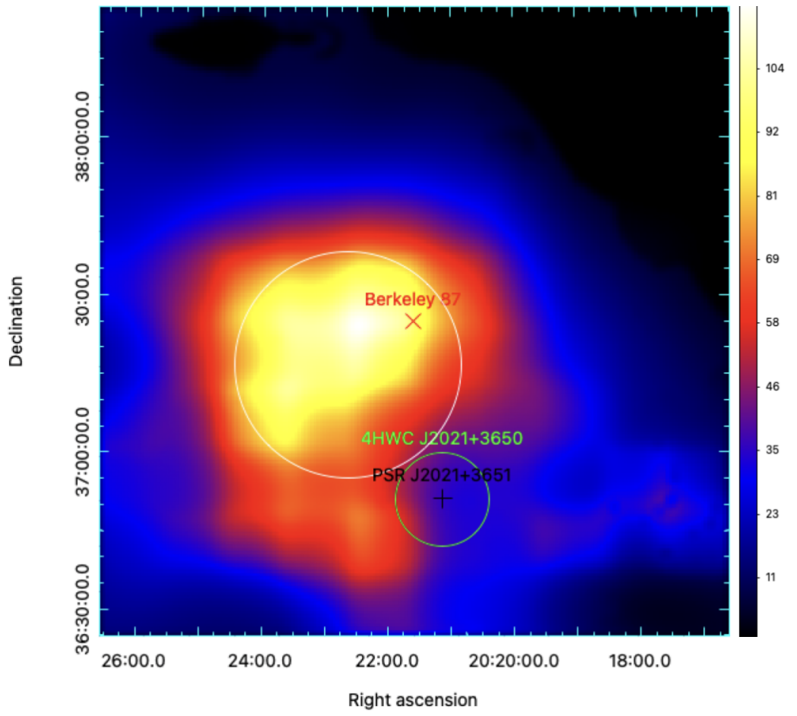
图注：$2^{\circ} \times 2^{\circ}$ TS map. The estimated radius of 4FGL J2022.6+3716 is shown. The position of
对应解读：对应“建议重点查看的图表”中的残差/TS 图，以及“关键图表逐图导读”图 1 关于 Berkeley 87 区域 TS 图、候选源中心、延展半径和附近 4FGL 源的解读。
入选理由：这是直接检验 Berkeley 87 方向是否存在显著伽马射线过量、过量与附近 4FGL J2022.6+3716 等目录源关系如何的核心空间诊断图。相比单纯计数图，它更接近似然分析结果，可支撑论文关于源显著性、位置和延展半径的主要结论。
来源与置信度：\(arxiv_source\)；high；\(arxiv_source\) / main.tex:figure[2]
Fig03
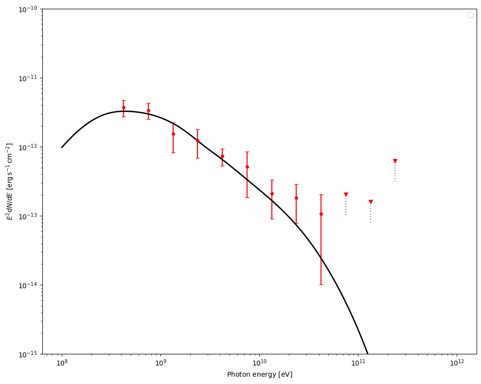
图注：\g\ spectrum of Berkeley 87 with \lat\ data. The line shows the hadronic model.
对应解读：对应“建议重点查看的图表”中的 SED 或谱能量分布图，以及“关键图表逐图导读”图 3 和图 5 中关于 Fermi-LAT 分能段通量点、幂律/强子模型线的解读。
入选理由：该图直接展示 Berkeley 87 的伽马射线谱和强子模型拟合，是判断光子指数约 2.68、谱形是否支持 hadronic scenario 的关键依据。它比环境或计数图更直接连接到论文摘要中的谱指数和物理解释。
来源与置信度：\(arxiv_source\)；high；\(arxiv_source\) / main.tex:figure[3]
Fig05
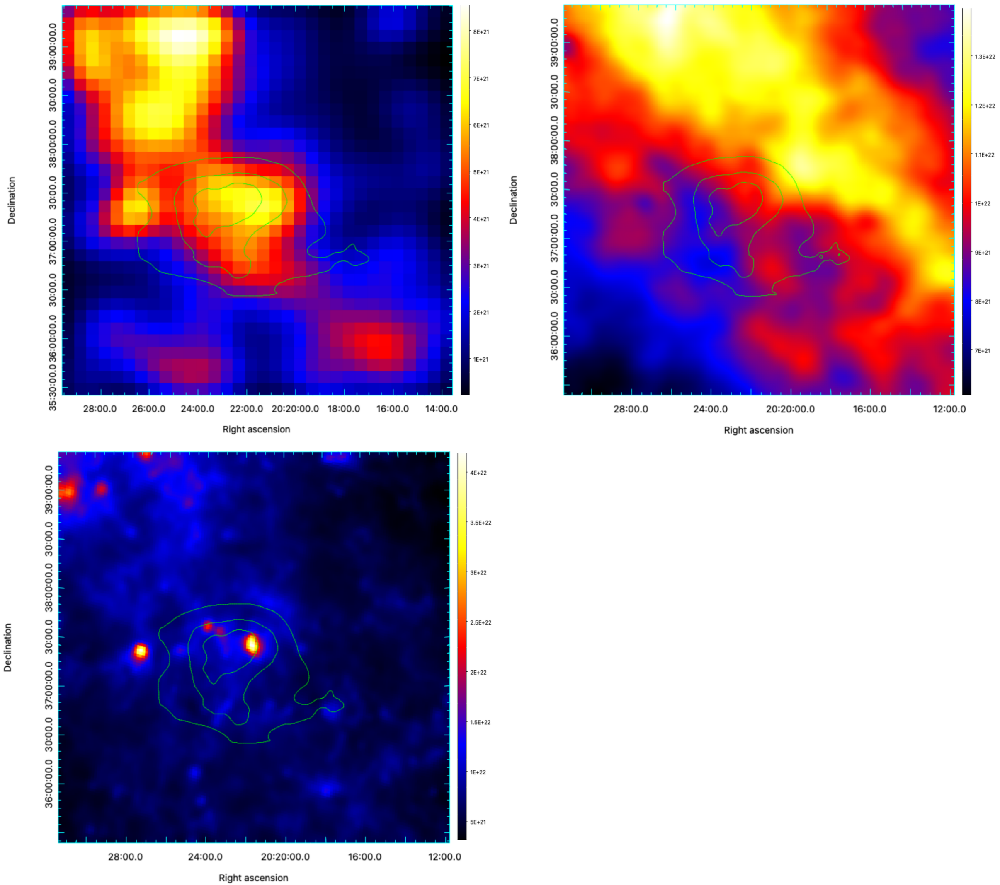
图注：Gas column densities in different gas phase (in unit of $\rm cm^{-2}$). The left panel gives the $\rm H_2$ column density derived from CO data. The middle panel provides the map of H I column density obtained from EBHIS survey. The right panel shows the H II column density derived from \(\textit{Planck}\) 353 GHz map assuming an effective density of electron $n_e = 10\ \rm cm^{-3}$. The \g\ emission is presented as green contours.
对应解读：对应“建议重点查看的图表”中的多波段叠加图，以及“关键图表逐图导读”图 4 关于 CO、H I、H II 气体柱密度与伽马射线轮廓空间关系的解读。
入选理由：强子解释依赖靶气体分布，该图把 H2、H I、H II 柱密度与伽马射线等值线叠加，能直接检验伽马射线延展区是否与稠密气体相关。它对能量预算和强子模型可信度的支撑作用强于普通源场图。
来源与置信度：\(arxiv_source\)；high；\(arxiv_source\) / main.tex:figure[5]
Fig01
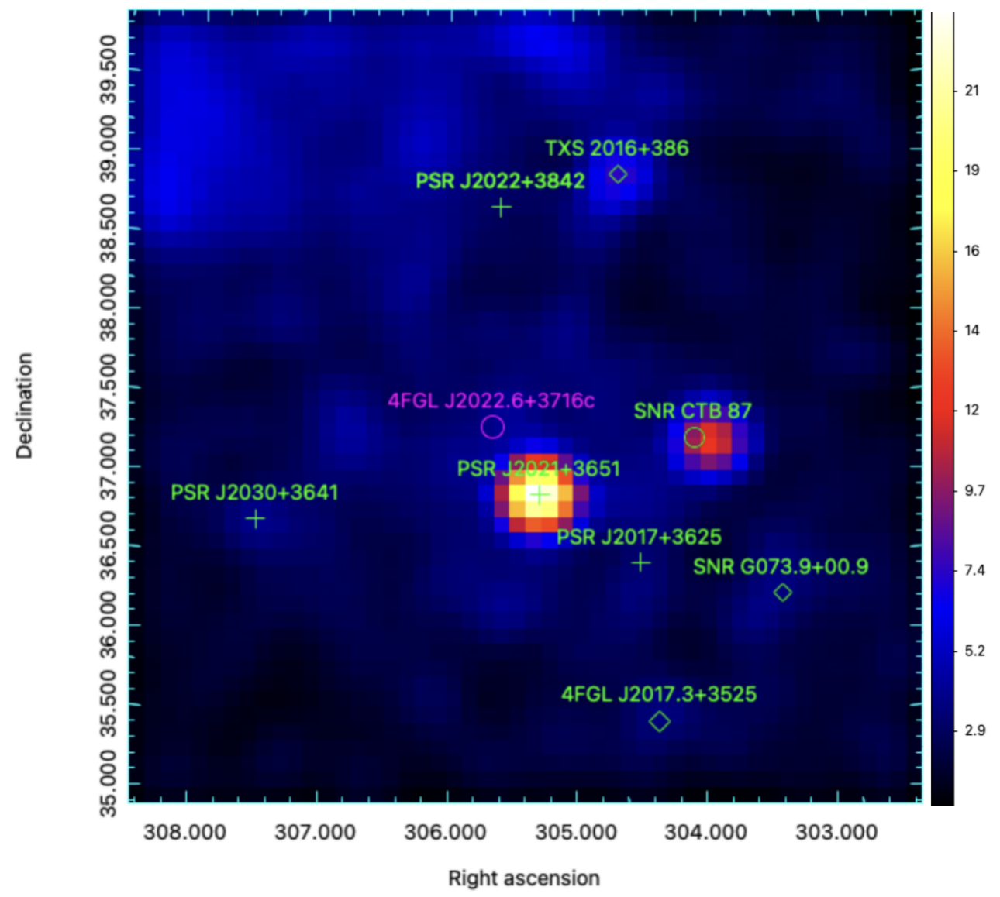
图注：\g\ count map above 10 GeV in the $5^{\circ} \times 5^{\circ}$ region around Berkeley 87
对应解读：对应“建议重点查看的图表”中的伽马射线计数图，以及“关键图表逐图导读”图 1 中关于 Berkeley 87 位置是否对应清晰过量、是否与附近点源混淆的空间检查。
入选理由：10 GeV 以上计数图提供较高角分辨率下的原始观测印象，有助于判断 Berkeley 87 附近是否确有高能光子聚集，并减少低能 PSF 造成假延展的疑虑。它不如 TS 图定量，但适合作为空间过量的直观证据。
来源与置信度：\(arxiv_source\)；high；\(arxiv_source\) / main.tex:figure[1]
强相关工作
这篇工作应放在年轻大质量星团和 superbubble 伽马射线研究的脉络中理解。Fermi-LAT 对 Cygnus cocoon 的发现是重要参照，因为它展示了 OB 星协附近存在新鲜加速宇宙线的空间延展 GeV 辐射。H.E.S.S. 对 Westerlund 1、Westerlund 2 等区域的 TeV 观测，以及 LHAASO 对银河 PeVatrons 候选体的发现，也都推动了“星团风和大尺度湍流泡可加速粒子”的观点。建议检索关键词包括 “Berkeley 87 gamma-ray”, “open cluster cosmic rays”, “massive star cluster gamma rays”, “Cygnus cocoon Fermi”, “stellar wind cosmic-ray acceleration”。
相反或需要警惕的观点是：银河面上的弥散伽马射线过量经常可能由背景建模误差、未解析脉冲星、分子云距离混叠或邻近源外延造成。因此，Berkeley 87 的解释需要与 4FGL 扩展源目录、脉冲星搜索、CO/HI 气体速度分解和替代弥散模型结合。建议检索 “Fermi LAT diffuse background systematics”, “unresolved pulsars GeV excess”, “molecular cloud gamma-ray cosmic rays”, “Fermi extended source analysis”。如果后续 TeV 观测未发现对应辐射，也不一定否定 GeV 强子模型，但会限制最高能质子和扩散条件。
相似工作：
- https://arxiv.org/abs/1110.6837
- https://www.aanda.org/articles/aa/full_html/2011/03/aa15931-10/aa15931-10.html
基础理论 / 方法工作：
- https://arxiv.org/abs/1009.5305
- https://arxiv.org/abs/1104.5003
- https://arxiv.org/abs/1306.2307
相反观点 / 张力线索：
- https://arxiv.org/abs/1202.4039
- https://arxiv.org/abs/1902.10045
7. Identifying observable MeV lines from the decays of weak and main $r$-process isotopes in mergers
- 来源：arXiv / astro-ph.HE
- 链接：https://arxiv.org/abs/2605.17213v1
- 作者：Maude Lariviere, Nicole Vassh, Yanwen Deng, Xilu Wang, Rebecca Surman
- 评分：novelty 8/10，importance 8/10，relevance 9/10，final 9.35/10
- 推荐理由：系统识别中子星并合r过程同位素衰变的MeV伽马射线可观测谱线，对未来MeV伽马射线天文和多信使核合成诊断很相关。
中文题目：从并合新合成同位素的衰变中识别可观测的 MeV 伽马射线谱线
做了什么：这篇论文研究中子星并合后新合成的弱、主 \(r\) 过程同位素在 \(\beta\) 衰变中会产生哪些可被未来 MeV 伽马射线望远镜分辨的谱线。作者把不同核质量、\(\beta\) 衰变、裂变模型以及弱 \(r\) 过程和主 \(r\) 过程的天体物理条件输入核合成计算，再用一个谱峰搜索算法从时间演化谱中找出可能的可观测谱线，并判断某条谱线是否可归因于单个主导同位素。主要结论是：\(^{106}\mathrm{Rh}\) 在 \(\sim 0.2\) 到 \(\sim 17\) 年间可作为弱 \(r\) 过程主导喷出物的近乎特征性信号；\(^{181}\mathrm{Hf}\)、\(^{182}\mathrm{Ta}\)、\(^{184}\mathrm{Ta}\)、\(^{188}\mathrm{Re}\) 等谱线对核物理模型差异敏感；\(^{208}\mathrm{Tl}\) 的 \(2.6\,\mathrm{MeV}\) 强线在年尺度上较稳健，但在天尺度可能被 \(^{72}\mathrm{Ga}\) 和 \(^{140}\mathrm{La}\) 竞争或混淆。
为什么重要：并合千新星的光学、红外辐射主要告诉我们总加热率、不透明度和粗略丰度结构，很难逐一确认哪些放射性核素存在。MeV 伽马射线线辐射则不同：如果谱线能被分辨，它几乎是同位素级别的指纹。这篇文章的重要性在于，它把“并合产生了 \(r\) 过程元素”这个总体判断推进到“未来仪器应该在哪些能量、哪些时间窗寻找哪些核素”的可操作层面。
理论 / 观测 / 仪器方法价值：对理论而言，论文给出了核质量、衰变和裂变输入如何投影到可观测 MeV 谱线的清单，能帮助把核物理不确定性转化为观测判据。对观测而言，它为 AMEGO、COSI、e-ASTROGAM 类 MeV 任务提供了事件后随访的能段和时间窗优先级。对核实验而言，它指出了一批对谱线预测影响大的同位素，提示哪些 \(\beta\) 衰变分支、伽马级联和半衰期数据值得改进。
为什么应该关注：如果你关心中子星并合是否真的是重元素主产地，或者想知道下一代 MeV 天文能否做出超越光学千新星的“核素识别”，这篇论文值得看。它不只是列出伽马线，而是尝试回答实际观测中最关键的问题：某个峰是否够孤立、是否由单一同位素主导、在什么时间最可能冒出来、它能区分弱 \(r\) 过程和主 \(r\) 过程，还是只能反映核数据库的不确定性。
展开详细解读：文章讲解、背景、理论、重点章节、图表与相关工作
文章详细讲解
科学问题：中子星并合喷出物在最初数天到数年内由大量不稳定核素衰变供能。光学和红外千新星能测到能量沉积和不透明度效应，但这些连续谱并不直接告诉我们具体有哪些同位素。论文要解决的是一个更“核谱学”的问题：在 MeV 波段，哪些 \(\beta\) 衰变伴随伽马线会形成足够突出的谱峰，且这些谱峰是否能被归因于某个特定同位素？这关系到未来 MeV 任务是否能够从并合残骸中直接读出弱 \(r\) 过程和主 \(r\) 过程的核素组成。
作者怎么做：作者从一组核合成计算出发，覆盖不同的天体物理喷出物条件，包括以 \(A<130\) 为主的弱 \(r\) 过程和产生 \(A>130\) 重核的主 \(r\) 过程。同时，他们改变核质量、\(\beta\) 衰变和裂变性质等核物理输入，得到一族随时间演化的同位素丰度。之后把每个放射性核素的衰变强度、半衰期、伽马分支和能量线叠加成 MeV 谱，并开发了搜索算法来识别谱峰。算法不只是找局部最大值，还要判断峰是否足够显著、是否被相邻线混合，以及是否可由某个同位素的主导发射线解释。
关键结果：最醒目的结果是 \(^{106}\mathrm{Rh}\) 的作用。对弱 \(r\) 过程主导事件，作者发现 \(\gtrsim 1\,\mathrm{MeV}\) 的谱在 \(\sim 0.2\) 到 \(\sim 17\) 年间几乎等同于 \(^{106}\mathrm{Rh}\) 的发射谱，因此它可作为弱 \(r\) 过程喷出物的清晰诊断。对于主 \(r\) 过程或对核模型敏感的情况，\(^{181}\mathrm{Hf}\)、\(^{182}\mathrm{Ta}\)、\(^{184}\mathrm{Ta}\)、\(^{188}\mathrm{Re}\) 等同位素的谱线可帮助区分不同核物理输入。论文还重新检查了常被关注的 \(^{208}\mathrm{Tl}\) 的 \(2.6\,\mathrm{MeV}\) 线，认为它在年尺度上较稳健，但在早期天尺度会受到 \(^{72}\mathrm{Ga}\) 和 \(^{140}\mathrm{La}\) 等核素竞争。
局限和下一步：论文主要给出谱线识别和物理诊断的理论清单，实际探测还取决于喷出物质量、距离、膨胀速度、伽马线逃逸概率、仪器有效面积、能量分辨率和背景。特别是早期天尺度喷出物可能仍对 MeV 光子有一定光学深度，几何非球对称也会改变线形和逃逸方向。下一步需要把这些线清单嵌入更完整的辐射输运和仪器响应模拟中，形成针对具体任务的曝光时间、距离地平线和触发后随访策略。核物理方面，则需要优先改进那些决定 \(^{106}\mathrm{Rh}\)、\(^{181}\mathrm{Hf}\)、\(^{182}\mathrm{Ta}\)、\(^{184}\mathrm{Ta}\)、\(^{188}\mathrm{Re}\)、\(^{208}\mathrm{Tl}\) 相关线强的衰变数据。
背景知识
研究对象是中子星并合后喷出的富中子物质。它们在快速俘获中子后经由 \(\beta\) 衰变回到稳定谷附近，形成所谓 \(r\) 过程元素。按终产物质量数可粗略分为弱 \(r\) 过程和主 \(r\) 过程：前者主要堆积在 \(A<130\) 附近，后者能推进到第二、第三 \(r\) 过程峰甚至锕系。不同通道对应不同电子分数、熵、膨胀时标和中子丰度。
历史上，GW170817 的千新星 AT2017gfo 首次把中子星并合与重元素合成强关联起来。但光学到红外光变曲线主要反映总放射性加热和不透明度，难以给出精确核素鉴定。某些近红外吸收特征可提示锶、镧系等元素族，但距离“逐个同位素识别”还很远。MeV 伽马射线线辐射在这点上更直接，因为核能级跃迁给出的线能量由核结构决定，而不是由宏观辐射转移连续调节出来。
为什么现在值得重新看？一方面，未来 MeV 伽马射线任务的灵敏度、能量分辨率和全天监测能力正在提升，COSI 等任务会使并合后数天到数年的核线搜寻更现实。另一方面，核数据库和理论核模型也在快速更新，使得从核合成到可观测谱线的端到端预测成为可能。过去常见做法是讨论总加热率或少数经典核素，现在则需要系统列出哪些线真正能在复杂谱中冒出来。
该领域一个常见误区是把“某核素有强伽马分支”直接等同于“这条线可观测”。实际并非如此：核素必须有足够丰度，半衰期要匹配观测时间窗，线能量处的背景和邻近线不能太强，喷出物还要足够透明。另一个误区是认为某条能量线一旦出现就一定对应唯一核素；在核素密集的 \(r\) 过程产物中，不同同位素可在相近能量产生线混合，必须同时看时间演化、相对线强和模型依赖性。
基础理论 / 方法脉络
物理图像可以从放射性衰变开始。并合喷出物中每种不稳定同位素 \(i\) 以衰变常数 \(\lambda_i\) 减少，其衰变会产生电子、反中微子、内转换电子和伽马光子。只有一部分衰变能以可逃逸 MeV 伽马线形式出现，而这些线的能量 \(E_{ij}\) 和分支比 \(b_{ij}\) 由核能级结构决定。若喷出物已经足够稀薄，观测到的线通量近似正比于该同位素当时的原子数和衰变率。
本文的关键假设链条是：核合成模型给出初始或随时间演化的丰度 \(Y_i(t)\)，核衰变数据库给出半衰期、分支比和线能量，然后把所有同位素的线贡献相加得到合成谱。由于作者关注的是“哪些谱峰可作为诊断”，核心量不是总加热率，而是每个能量通道中的光子发射率、峰相对于邻近连续或线森林的突出程度、以及某个峰由单一同位素贡献的纯度。
弱 \(r\) 过程和主 \(r\) 过程在这里不是抽象分类，而会明显改变谱线清单。弱 \(r\) 过程留下较多中等质量不稳定核素，某些半衰期为月到年的核素会在残骸阶段形成清晰谱线；主 \(r\) 过程则涉及更重核区、裂变循环和不同衰变链，可能产生锕系子体或铅铋区核素的强线。核质量模型和裂变产物分布会决定物质停留在哪些质量区，因此能改变几年尺度的线辐射。
观测方法上，真实仪器看到的不是无限窄的核线，而是经过多普勒展宽、康普顿散射、吸收逃逸和探测器响应卷积后的计数谱。早期喷出物膨胀速度可达 \(v\sim 0.1c\)，线宽可能远大于核本征宽度；年尺度膨胀后密度下降，逃逸概率提高，但通量因衰变和距离平方下降。常见退化包括：喷出物质量与距离的归一化退化、丰度与伽马逃逸概率的退化、核模型与天体物理电子分数分布的退化，以及不同核素相近线能量导致的识别退化。
公式与推导
第一步，从单个不稳定核素的衰变方程出发。若同位素 \(i\) 的原子数为 \(N_i(t)\)，衰变常数为 \(\lambda_i\)，则在无持续补给的近似下有
这里 \(t_{1/2,i}\) 是半衰期。这个式子说明某条伽马线最可能出现的时间窗通常与母体或衰变链有效半衰期同量级。
第二步，若该核素的一次衰变以分支比 \(b_{ij}\) 产生能量为 \(E_{ij}\) 的第 \(j\) 条伽马线，则源区光子产生率为
其中 \(b_{ij}\) 包括核能级跃迁分支和可能的级联贡献。论文寻找的“同位素指纹”本质上就是某些 \(\dot{N}_{\gamma,ij}\) 在特定时间和能量上压过其他贡献。
第三步，把核合成丰度和喷出物质量联系起来。若喷出物质量为 \(M_{\rm ej}\)，同位素质量数为 \(A_i\)，丰度质量分数为 \(X_i(t)\)，则
其中 \(m_u\) 是原子质量单位。这个关系表明观测通量的绝对归一化直接受 \(M_{\rm ej}\) 和丰度预测影响，而谱线相对强度更适合诊断核合成路径。
第四步，考虑伽马线逃逸和距离稀释。对距离为 \(D\) 的源，能量 \(E_{ij}\) 处线光子通量可写为
这里 \(P_{\rm esc}\) 是逃逸概率。若喷出物对 MeV 光子近似透明，\(P_{\rm esc}\approx 1\)；早期则可能小于 \(1\)，尤其在低能端或高质量喷出物中。
第五步，用膨胀喷出物估算光学深度。若喷出物以特征速度 \(v\) 均匀膨胀，半径 \(R(t)\approx vt\)，面密度近似为 \(M_{\rm ej}/(4\pi R^2)\)，则
其中 \(\kappa_\gamma(E)\) 是 MeV 光子的有效质量衰减系数。这个标度解释了为什么天尺度和年尺度的可见线清单可能不同。
第六步，合成谱是所有同位素和所有分支的叠加。若用线型函数 \(\phi(E;E_{ij},\sigma_{ij})\) 表示多普勒和仪器展宽后的归一化轮廓，则
这里 \(\sigma_{ij}\) 可由膨胀速度和探测器能量分辨率共同决定。谱峰搜索算法实际处理的是这个叠加谱中的局部峰，而不是孤立线列表。
第七步，判断某个峰是否由单一同位素主导，可定义峰窗口 \(\Delta E_k\) 内的同位素贡献纯度
若 \(p_{ik}\) 接近 \(1\)，该峰才适合作为同位素鉴别；若多个 \(p_{ik}\) 相近，则需要结合时间演化和其他伴随线。
第八步，把模型谱映射到仪器计数。给定有效面积 \(A_{\rm eff}(E)\)、曝光 \(T\)、能量响应 \(R(C|E)\) 和背景 \(B_C\)，第 \(C\) 个计数通道期望为
这一步是从论文的理论线清单走向实际可探测性的桥梁，也决定了相邻线能否被分辨。
第九步，若按泊松统计评估模型或显著性，计数似然可写为
其中 \(n_C\) 是观测计数。比较含线模型和无该线模型的 \(\Delta\ln\mathcal{L}\)，即可量化某条候选线是否真的被数据支持。论文本身偏重理论识别，但未来观测分析会需要这样的似然框架。
模型拟合 / 应用方法
这类工作的第一层拟合对象不是望远镜计数，而是核合成模型产生的丰度轨迹与伽马线谱。可变参数包括天体物理条件，如电子分数分布、熵、膨胀时标、喷出物质量和速度；也包括核物理输入，如核质量模型、\(\beta\) 衰变率、延迟中子发射概率、裂变屏障和裂变产物分布。论文通过一组离散模型比较而非单一连续后验采样来评估谱线稳健性。
若将来把该谱线清单用于真实数据，拟合量会变成能量通道中的计数谱。模型参数至少包括线通量归一化、线心、线宽、背景形状、仪器能量标定偏移和可能的多个同位素模板权重。对一个近邻并合事件，可以用核合成模板拟合多时段 MeV 谱，检验某个模板是否同时解释 \(0.2\) 年、\(1\) 年和数年后的谱线强度变化。
主要退化关系很实际。距离 \(D\) 与喷出物质量 \(M_{\rm ej}\) 在通量归一化中近似以 \(M_{\rm ej}/D^2\) 的形式出现；丰度 \(X_i\) 与逃逸概率 \(P_{\rm esc}\) 也可互相补偿；速度 \(v\) 同时影响光学深度和线宽。若只看单一谱线，很难区分“该同位素少”与“喷出物还不透明”或“背景估计偏高”。因此论文强调同位素是否有多个伴随线、谱形是否整体近似某个核素模板，这对打破退化很重要。
残差诊断应重点看三个方面：第一，峰位残差是否呈系统偏移，这可能来自仪器能量标定或多普勒非对称；第二，峰宽是否比模型预期更宽或更窄，这会反映喷出物速度结构或多个未建模邻近线；第三，峰间相对强度是否与同位素衰变分支一致。如果某个候选同位素只解释一条强线而无法解释其应有的伴随线，就要警惕误识别。
模型可能失败的地方包括核数据库不完整、未知或不准的 \(\beta\) 分支、裂变产物分布错误、忽略三维几何和混合、以及仪器背景线与天体线混淆。实际应用中，比较稳健的策略不是只用单个最亮峰宣称发现某同位素，而是用时间序列加多线模板做贝叶斯模型比较：弱 \(r\) 过程模板、主 \(r\) 过程模板、混合模板和无天体线背景模型应同时进入比较。
重点章节 / 结果段落怎么读
数据与核合成输入部分应首先阅读。这里决定了论文所谓弱 \(r\) 过程和主 \(r\) 过程模型的含义，包括使用了哪些天体物理轨迹、哪些核质量和衰变模型、裂变处理如何变化。读者应特别留意这些模型是否覆盖自己关心的并合喷出物类型，例如动力学喷出物、盘风或黏滞风。
谱线构造和峰搜索算法部分是方法核心。读这一段时不要只看最终表格，要理解作者如何从离散伽马线生成时间依赖谱、如何定义“可识别峰”、如何处理相近能量线的混合、以及如何判断某个同位素是否主导某个谱峰。这决定了表中谱线的物理含义：它们不是所有强分支，而是通过算法筛选出的潜在观测特征。
弱 \(r\) 过程结果部分应重点看 \(^{106}\mathrm{Rh}\)。作者指出弱 \(r\) 过程主导事件在 \(\gtrsim 1\,\mathrm{MeV}\) 的谱形可在很长时间内近似等于 \(^{106}\mathrm{Rh}\) 发射谱。读者应检查这是来自丰度优势、半衰期匹配、还是谱线能量较孤立，并思考在混合喷出物中该诊断会被稀释到什么程度。
主 \(r\) 过程和核模型敏感性部分应关注 \(^{181}\mathrm{Hf}\)、\(^{182}\mathrm{Ta}\)、\(^{184}\mathrm{Ta}\)、\(^{188}\mathrm{Re}\) 等核素。这些结果的意义不一定是“它们必然可被观测到”，而是“若观测到相应线组合，可反向约束核物理模型或裂变产物分布”。
关于 \(^{208}\mathrm{Tl}\) 的讨论值得单独读。\(2.6\,\mathrm{MeV}\) 线强而经典，但论文显示其可见性随时间不同：年尺度较稳健，天尺度可能与 \(^{72}\mathrm{Ga}\) 和 \(^{140}\mathrm{La}\) 竞争。这个例子很好地说明了为什么同一条强核线在不同时间并不总是同样干净。
建议重点查看的图表
-
不同模型的时间演化 MeV 合成谱：应检查横轴能量、纵轴通量或发射率在天尺度和年尺度如何变化，尤其看 \(\gtrsim 1\,\mathrm{MeV}\) 区域是否由少数峰主导。
-
弱 \(r\) 过程与主 \(r\) 过程的谱形对比：重点看同一时间下两类模型的峰位和相对强度差异，确认 \(^{106}\mathrm{Rh}\) 是否真能把弱 \(r\) 过程从主 \(r\) 过程中分出来。
-
主要候选同位素的可见时间窗表：应检查每个同位素的半衰期、线能量、主导时间范围和模型依赖性，不要只按线强排序。
-
\(^{208}\mathrm{Tl}\) 的 \(2.6\,\mathrm{MeV}\) 附近谱区：重点看天尺度是否有 \(^{72}\mathrm{Ga}\)、\(^{140}\mathrm{La}\) 竞争，以及年尺度该线是否变得更干净。
-
核模型变化导致的谱线差异图或表：应看哪些线在不同质量模型、衰变模型或裂变模型间出现与消失，而不是只看总谱归一化变化。
-
峰搜索算法的诊断量：如果论文给出峰纯度、贡献同位素排序或峰识别表，应检查单峰是否由一个同位素贡献大部分通量，还是多个核素混合造成。
关键图表逐图导读
图 1：若论文给出核合成模型或丰度分布图，通常横轴是质量数 \(A\)，纵轴是丰度或质量分数。数据点或曲线代表不同弱 \(r\) 过程、主 \(r\) 过程条件和核物理模型。读图时应看 \(A<130\) 与 \(A>130\) 区域的物质分布差别，因为这直接决定后续 MeV 线来自中等质量核还是重核衰变链。陷阱是不要把终态稳定丰度与某一时刻放射性核素丰度混为一谈。
图 2：若给出时间依赖伽马谱，横轴应为光子能量，纵轴为光子发射率或通量，曲线对应不同时间。读者应找出随时间消失和增强的峰，特别是 \(\sim 1\) 到数 \(\mathrm{MeV}\) 区域的强线。模型线之间的差异说明半衰期筛选效应：短寿命核素主导天尺度，较长寿命核素主导年尺度。读图陷阱是合成谱峰不一定等于单条核线，可能是若干相近线叠加。
图 3：若展示弱 \(r\) 过程主导情形和 \(^{106}\mathrm{Rh}\) 模板的比较，横轴应为能量，纵轴为谱强度或归一化谱形。关键是看 \(\gtrsim 1\,\mathrm{MeV}\) 区域模型谱与 \(^{106}\mathrm{Rh}\) 线谱是否在多个峰位同时吻合，而不是只吻合最亮峰。若只看单峰，很容易把其他核素的邻近线误认为 \(^{106}\mathrm{Rh}\)。
图 4：若给出不同核物理模型下候选线的对比，坐标可能是时间对能量的峰出现图，或是按同位素列出的线强表。应重点看 \(^{181}\mathrm{Hf}\)、\(^{182}\mathrm{Ta}\)、\(^{184}\mathrm{Ta}\)、\(^{188}\mathrm{Re}\) 的线是否在某些模型中显著增强或消失。这类图的主要结论不是绝对通量，而是模型可区分性。陷阱是把模型差异完全归因于某一个核输入，实际可能是质量、衰变和裂变共同作用。
图 5：若论文有 \(^{208}\mathrm{Tl}\) 的 \(2.6\,\mathrm{MeV}\) 专门图，横轴多半是能量或时间，纵轴是线强或峰贡献。读图要比较早期天尺度和后期年尺度，并注意 \(^{72}\mathrm{Ga}\)、\(^{140}\mathrm{La}\) 是否在相近能区贡献显著。主要结论是 \(^{208}\mathrm{Tl}\) 在年尺度更稳健，而早期不能简单把 \(2.6\,\mathrm{MeV}\) 附近所有强度都归给它。
图 6：若有峰搜索输出表或算法验证图，应检查每个识别峰的能量、可见时间窗、主导同位素和贡献比例。读者应优先关注高纯度、长时间窗、模型区分能力强的线。陷阱是亮度最高的峰未必最有诊断价值，因为背景、混合和仪器分辨率可能让它难以解释。
论文原图 / 可嵌入图片
Fig06
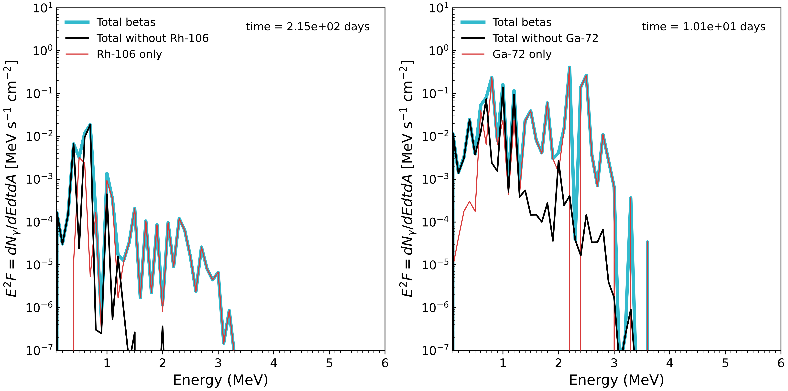
图注：Total emission spectrum from 0.1 to 6 MeV compared with individual contributions from (top) Rh-106 lines (here at 215 days using FRDM2012 and condition 5) and (bottom) Ga-72 lines (here at 10 days using FRDM2012 and condition 7). In both calculations solely weak $r$-process nuclei are produced, and the spectrum from $\sim$1 MeV beyond becomes identical to that of (top) Rh-106 for tens of years or (bottom) Ga-72 for tens of days.
对应解读：对应“弱 r 过程与主 r 过程的谱形对比”和关键图表导读中的图 3：检验弱 r 过程谱在 \(\gtrsim 1\,\mathrm{MeV}\) 是否由 \(^{106}\mathrm{Rh}\) 模板主导。
入选理由：这张图直接把总 MeV 发射谱与单个同位素 \(^{106}\mathrm{Rh}\) 的线贡献叠加比较，并明确展示弱 r 过程情形下 \(\sim1\) MeV 以上谱形在多年时间尺度上近似等同于 \(^{106}\mathrm{Rh}\) 发射谱，是论文最核心结论的直接证据。下方面板还给出 \(^{72}\mathrm{Ga}\) 在早期弱 r 过程中的类似主导情形，有助于理解谱峰识别不是单峰判断而是多线模板匹配。
来源与置信度：\(arxiv_source\)；high；\(arxiv_source\) / main.tex:figure[6]
Fig07
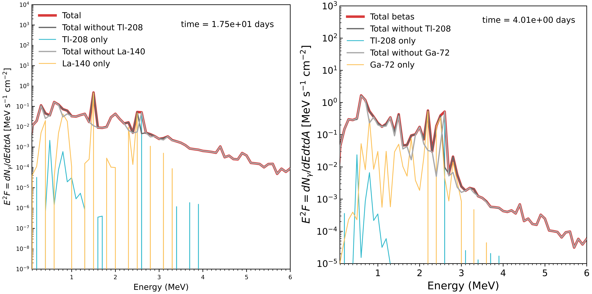
图注：(Top) Total emission spectrum from 0.1 to 6 MeV compared to individual contributions from La-140 and Tl-208 at 17.5 days (assuming astrophysical condition $Y_e=0.01$, $s/k=10$; shown after radiation transfer with a velocity $0.1c$). This time shows when La-140 takes over emission in the 2.5-2.8 MeV range. (Bottom) Total emission spectrum along with individual contributions from Ga-72 and Tl-208. Here we show the neutron star merger total ejecta scenario from Sec.~\(\ref{sec:nsmw3models}\) to consider a case where the entire $r$-process abundance pattern is produced, from the first peak (including Ga-72) to beyond the third peak (including Tl-208). This snapshot shows the time when Ga-72 comes closest to taking over the 2.5 - 2.8 MeV emission region (4 days) in this scenario. The example considered here shows results before radiation transfer. Both top and bottom panels demonstrate results with the FRDM2012 mass model and M\"{o}ller et al. $\beta$-decay rates.
对应解读：对应“\(^{208}\mathrm{Tl}\) 的 \(2.6\,\mathrm{MeV}\) 附近谱区”和关键图表导读中的图 5：比较早期天尺度 \(^{72}\mathrm{Ga}\)、\(^{140}\mathrm{La}\) 与 \(^{208}\mathrm{Tl}\) 的竞争。
入选理由：这张图专门展示 2.5--2.8 MeV 区间中 \(^{208}\mathrm{Tl}\)、\(^{140}\mathrm{La}\) 和 \(^{72}\mathrm{Ga}\) 对总谱的贡献，是判断 2.6 MeV 线能否可靠归因于 \(^{208}\mathrm{Tl}\) 的关键图。它直接支撑日报中“天尺度有竞争、年尺度更干净”的解读，且比只看总光变更能显示谱线混合问题。
来源与置信度：\(arxiv_source\)；high；\(arxiv_source\) / main.tex:figure[7]
Fig08
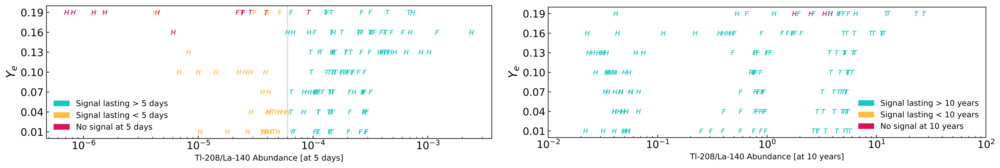
图注：(Top) The Tl-208/La-140 abundance ratio at 5 days for all the parametrized trajectories in the extended set. Results with the three nuclear models considered are labeled with H, T, or F. The cases with a signal longer than 5 days are in teal, those in yellow have a signal shorter than 5 days and in red are the cases which do not produce a Tl-208 signal on the order of days. (Bottom) Same as above, but at 10 years. Teal shows cases with a Tl-208 2.6 MeV signal lasting beyond 10 years. Red shows cases which never report a signal around 10 years.
对应解读：对应“主要候选同位素的可见时间窗表”和“\(^{208}\mathrm{Tl}\) 的 \(2.6\,\mathrm{MeV}\) 附近谱区”：检查 \(^{208}\mathrm{Tl}\) 信号在 5 天与 10 年时对轨迹和核模型的依赖。
入选理由：该图用 \(^{208}\mathrm{Tl}/^{140}\mathrm{La}\) 丰度比和不同核模型标记，概括了大量参数化轨迹中 \(^{208}\mathrm{Tl}\) 信号是否能在天尺度或年尺度出现。它比单一谱快照更适合支撑“\(^{208}\mathrm{Tl}\) 年尺度较稳健、早期依赖条件且可能受 La-140 竞争”的系统性结论。
来源与置信度：\(arxiv_source\)；high；\(arxiv_source\) / main.tex:figure[8]
Fig01
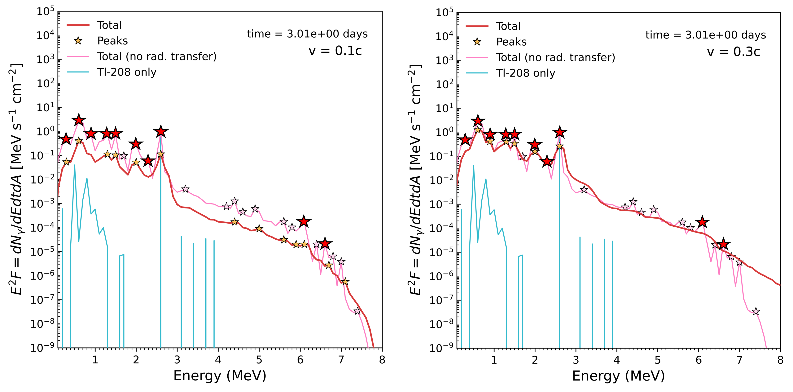
图注：The total emission spectrum from $\beta$-decay at 3 days for a neutron-rich astrophysical trajectory ($Y_e = 0.01$, entropy $s/k=10$, and expansion timescale $\tau = 12$ ms) calculated with FRDM2012 nuclear inputs. We consider predicted spectra both with and without radiation transfer with ejecta expansion velocities of $0.1c$ (top panel) and $0.3c$ (bottom panel). The light-colored smaller stars highlight the peaks determined by the peak finder while the larger red stars indicate cases which satisfy our table criterion that an identified isotope dominates the spectrum in a given bin as well as having a flux above the projected sensitivity limit of near-future telescopes.
对应解读：对应“不同模型的时间演化 MeV 合成谱”和“峰搜索算法的诊断量”：展示 3 天时总 \(\beta\) 衰变伽马谱、辐射输运影响、峰搜索结果和满足表格筛选标准的峰。
入选理由：这张图同时包含总发射谱、辐射转移前后比较、不同喷出速度以及峰搜索器识别出的候选峰，直接说明论文如何从连续合成谱中筛出可观测线。红色星号对应满足同位素主导和灵敏度条件的峰，因此特别适合解释日报中关于峰纯度、显著性和仪器可探测性的讨论。
来源与置信度：\(arxiv_source\)；high；\(arxiv_source\) / main.tex:figure[1]
Fig05
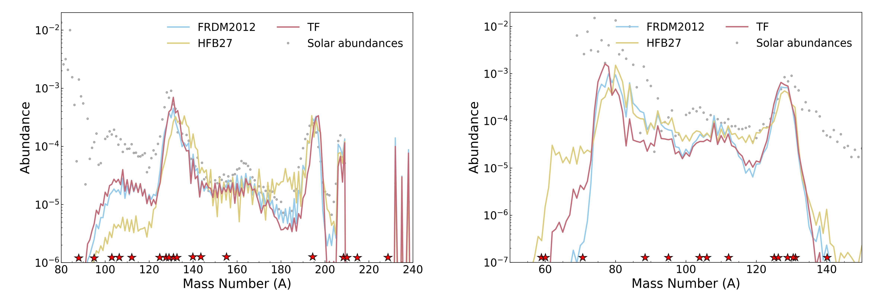
图注：Comparison of predicted final isotopic abundances at 1 Gyr for main (top) and weak (bottom) $r$-process cases given three different nuclear model inputs (TF, FRDM2012, HFB27) (the main $r$-process case shown here is for $Y_e = 0.01$, $s/k = 10$, $\tau = 12$ ms while the weak $r$-process case corresponds to $Y_e = 0.25$, $s/k = 32$, $\tau=12$ ms). Red stars along the x-axis denote the mass numbers of isotopes reported in Tables~\(\ref{tab:massweight_days}\) and \(\ref{tab:massweight_years}.\)
对应解读：对应“核模型变化导致的谱线差异图或表”和关键图表导读中的图 4：比较主 r 与弱 r 过程在不同核质量模型下的最终丰度，并标出被谱线表报告的质量数。
入选理由：这张图把主 r 过程和弱 r 过程分别放在不同核模型输入下比较，并用红星标出进入候选线表的质量数，能把最终丰度结构与后续可见 MeV 线联系起来。它有助于解释为什么某些同位素线具有核模型区分能力，而不是只反映总谱归一化差异。
来源与置信度：\(arxiv_source\)；high；\(arxiv_source\) / main.tex:figure[5]
Fig12
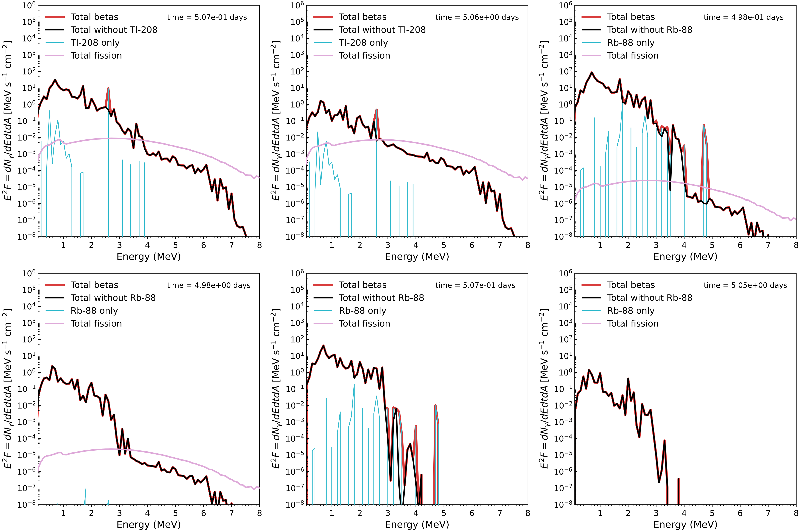
图注：Total emission spectrum from 0.1 to 8 MeV at both 0.5 days (left) and 5 days (right) for three different astrophysical conditions with distinct reach in mass number: (top) a strongly fission cycling case with $Y_e=0.01$, $s/k=10$, (middle) the $Y_e=0.19$, $s/k=32$ case which produces both Rb-88 and fissioning species, and (bottom) a weak $r$-process case with $Y_e = 0.29$, $s/k = 75$ that never populates fissioning species. Comparisons with either individual contributions from Tl-208 (top) or Rb-88 (middle, bottom) are also shown. All examples here consider the FRDM2012 nuclear model.
对应解读：对应“不同模型的时间演化 MeV 合成谱”和“主要候选同位素的可见时间窗表”：比较 0.5 天与 5 天、不同天体物理条件下的 0.1--8 MeV 总谱及 \(^{208}\mathrm{Tl}\)、\(^{88}\mathrm{Rb}\) 贡献。
入选理由：这张图提供早期时间序列和不同喷出物条件下的总谱对比，能展示短寿命核素、裂变循环情形和弱 r 过程情形在 MeV 谱上的差别。它补充了 Fig06 和 Fig07 的单同位素诊断，帮助读者理解天尺度谱峰会随时间和天体物理条件快速变化。
来源与置信度：\(arxiv_source\)；high；\(arxiv_source\) / main.tex:figure[12]
强相关工作
这篇工作与千新星放射性加热和并合 \(r\) 过程核合成的大量研究相连。早期理论工作通常关注总加热率近似为何接近幂律、哪些核素族贡献热化能量，以及镧系不透明度如何塑造红外光变曲线。本文更进一步，把核合成产物投影到 MeV 线谱，属于“从热光变到核素谱学”的方向。可检索关键词包括：kilonova gamma-ray lines、r-process radioactive decay gamma rays、neutron star merger nucleosynthesis MeV、kilonova nuclear line emission。
它也与未来 MeV 任务的灵敏度研究密切相关。即使理论上有强线，实际能否探测还取决于 COSI、AMEGO、e-ASTROGAM 等仪器的能量分辨率、背景建模和触发后随访能力。相反观点或张力主要来自两方面：一是并合事件距离通常较远，线通量可能低于实际灵敏度；二是核物理不确定性和喷出物多组分混合可能削弱单一同位素诊断。检索时可组合关键词：COSI kilonova gamma-ray、AMEGO r-process lines、e-ASTROGAM kilonova、gamma-ray escape kilonova ejecta。
相似工作：
- https://arxiv.org/abs/2605.17213
- https://arxiv.org/search/astro-ph?query=kilonova+gamma-ray+lines&searchtype=all
- https://ui.adsabs.harvard.edu/search/q=kilonova%20gamma-ray%20lines
基础理论 / 方法工作：
- https://ui.adsabs.harvard.edu/search/q=GW170817%20kilonova%20r-process
- https://ui.adsabs.harvard.edu/search/q=Li%20Paczynski%201998%20kilonova
- https://ui.adsabs.harvard.edu/search/q=Metzger%20kilonova%20r-process%20heating
相反观点 / 张力线索：
- https://ui.adsabs.harvard.edu/search/q=MeV%20gamma-ray%20sensitivity%20kilonova
- https://ui.adsabs.harvard.edu/search/q=kilonova%20gamma-ray%20escape%20opacity
- https://ui.adsabs.harvard.edu/search/q=r-process%20nuclear%20physics%20uncertainties%20kilonova
8. Simulation study of the cosmic ray Sun shadow with a time-dependent solar magnetic field model
- 来源：arXiv / astro-ph.HE
- 链接：https://arxiv.org/abs/2605.16898v1
- 作者：Jie Xia, Ming-Yang Cui, Qiang Yuan, Yi Zhang, Guang-Lu Shi, Li Feng
- 评分：novelty 7/10，importance 8/10，relevance 9/10，final 9.05/10
- 推荐理由：研究LHAASO日尺度宇宙线太阳阴影并结合时变太阳磁场模型，对宇宙线各向异性/探测器标定和LHAASO分析有直接价值。
中文题目：用随时间变化的太阳磁场模型模拟宇宙线太阳阴影
做了什么：这篇文章用蒙特卡罗反向追踪方法模拟宇宙线被太阳遮挡形成的“太阳阴影”，重点不是平均多年形态，而是日尺度变化。作者把光球磁场日变化作为边界条件，分别采用势场源面模型和电流片源面模型外推日冕磁场，再用 Parker 螺旋连接到行星际磁场，并用 Parker Solar Probe 的磁场测量对场强做校正。与 LHAASO 在 2021 年逐日太阳阴影观测比较后，文章认为电流片源面模型通常能更好地再现阴影位移，说明 LHAASO 的 TeV 宇宙线阴影已经能对日冕—行星际磁场模型作日尺度检验。
为什么重要：太阳阴影是少数可以把高能宇宙线、日冕磁场、行星际磁场和地面广角伽马/宇宙线探测阵列直接联系起来的观测量。它的重要性在于：宇宙线粒子本身充当穿越太阳磁场的探针，阴影的偏移、展宽和深度记录了沿途洛伦兹偏转，而这些信息对传统光球磁图、日冕白光和原位太阳风测量是互补的。
理论 / 观测 / 仪器方法价值：对理论模型而言，本文提供了一个检验日冕磁场外推模型的独立高能粒子约束；对观测而言，它展示了 LHAASO 逐日太阳阴影数据可用于空间天气和太阳磁场结构研究；对方法而言，日变边界条件、Parker 螺旋延拓和 PSP 场强校正组成了一套比静态平均模型更接近实际太阳活动状态的模拟框架。
为什么应该关注：如果你关心 LHAASO 的系统校准、TeV 宇宙线传播、太阳磁场建模或空间天气预报，这篇文章值得看。它把“太阳阴影”从一个仪器指向和角分辨率校验工具，推进到一个可以区分日冕磁场模型、追踪短期太阳磁场变化的诊断量。
展开详细解读：文章讲解、背景、理论、重点章节、图表与相关工作
文章详细讲解
科学问题：宇宙线到达地球前会被太阳实体遮挡，形成到达方向上的亏损区，即太阳阴影。若没有磁场，阴影应大致位于太阳光学盘位置，并由太阳视半径、探测器角分辨率和宇宙线能谱共同决定。但实际太阳阴影会偏移、变浅和变宽，因为带电宇宙线在地球磁场、行星际磁场和日冕磁场中发生刚度依赖的偏转。本文关注的问题是：在 LHAASO 已经能给出逐日太阳阴影观测的情况下，传统静态或长期平均磁场模型是否足够？不同日冕磁场外推模型能否在日尺度上被太阳阴影区分？
作者怎么做：文章建立了一个日变太阳磁场驱动的蒙特卡罗模拟。其核心步骤是从观测光球磁图出发，分别用 PFSS 和 CSSS 两类模型外推日冕磁场；在源面外侧，用 Parker 螺旋描述太阳风携带出的行星际磁场；再用 Parker Solar Probe 的原位磁场测量对模型场强作经验校正。随后作者追踪不同能量和到达方向的宇宙线粒子在太阳系磁场中的轨道，统计哪些粒子会被太阳盘吸收，从而得到预期的太阳阴影二维形态、位移和深度。与许多只使用 Carrington 周期平均磁场或固定模型的工作不同，本文强调逐日更新边界条件，因此适合比较短期太阳活动引起的阴影变化。
关键结果：与 LHAASO 在 2021 年的逐日太阳阴影观测比较后，作者发现 CSSS 模型整体上比 PFSS 模型更能解释太阳阴影的位移。这个结论的物理含义是，包含电流片和更复杂日冕结构的模型可能更接近宇宙线实际穿越的磁场环境。文章还显示，若不对日冕和行星际磁场强度作 PSP 观测校正，模拟阴影的偏移幅度可能与观测不一致；这说明太阳阴影对磁场绝对强度以及大尺度几何结构都很敏感。LHAASO 的高统计量使得以往难以稳定测量的逐日偏移成为可用诊断量。
局限和下一步：本文的模型仍然是大尺度、准稳态的磁场描述。PFSS 和 CSSS 都不能完整处理日冕质量抛射、局地湍流、太阳风速度非均匀性、时间传播延迟以及小尺度磁场扰动。宇宙线组成、能谱、探测器角响应、背景估计和地磁场处理也会进入最终阴影形态。下一步自然方向包括：把太阳风速度和磁场扰动做成真正的时间依赖三维 MHD 模型；把 LHAASO 多能段阴影同时拟合以分离刚度依赖；与 neutron monitor、PSP、Solar Orbiter 和日冕观测联合反演；并检验太阳活动高年期间模型差异是否更显著。
背景知识
研究对象是宇宙线太阳阴影。TeV 到 PeV 能区的宇宙线主要是带电粒子，传播方向会被磁场偏转；太阳本身作为一个角直径约半度的遮挡体，会在宇宙线到达方向图上留下一个亏损。月球阴影常用于检验探测器指向和角分辨率，因为月球附近磁场相对简单；太阳阴影则复杂得多，因为日冕磁场和行星际磁场随太阳活动快速变化。
历史上，太阳阴影已被 Tibet AS\(\gamma\)、ARGO-YBJ、HAWC、IceCube 等实验用于研究太阳周期调制和磁场偏转。早期研究常关注多年平均的阴影深度随太阳活动周期变化：太阳活动强时，磁场更复杂，阴影更容易被抹平；太阳活动弱时，阴影更清晰。但多年平均会洗掉日尺度结构，也难以区分不同日冕外推模型的瞬时表现。
观测和理论背景的核心张力在于，光球磁图只能给出太阳表面视线或矢量磁场，真正影响宇宙线的是从日冕低层到约 \(1\,\mathrm{AU}\) 的三维磁场积分效应。PFSS 模型简单、稳定、使用广泛，但假设日冕为无电流势场，并在源面强制磁场径向化。CSSS 模型引入电流片和 cusp 结构，能更灵活地描述开放磁通和日球电流片附近场形，因此可能更适合解释宇宙线偏转。
这个问题现在值得重新看，是因为 LHAASO 具有大面积、高海拔、宽视场和高统计量，能够在 TeV 能区逐日测量太阳阴影。与此同时，PSP 进入近太阳区域，提供比地球附近 \(1\,\mathrm{AU}\) 测量更直接的日冕外推校验。两者结合，使“用宇宙线阴影检验太阳磁场模型”从概念验证变成可定量比较的观测课题。
一个常见误区是把太阳阴影只看作仪器校准信号。实际上，月影更适合做稳定校准，而太阳阴影携带的是太阳磁场和粒子刚度信息。另一个误区是以为阴影偏移只由地磁场决定；对太阳方向的粒子而言，日冕场和行星际场对偏移、展宽和阴影填充都有显著贡献。还有一个误区是把 PFSS 或 CSSS 输出当作真实磁场，而不是带有边界条件、源面半径、太阳风速度和经验校正假设的模型近似。
基础理论 / 方法脉络
从基础物理看，太阳阴影是一个带电粒子束通过磁场后被遮挡的成像问题。若宇宙线为直线传播，太阳盘会从近似各向同性的宇宙线天空中挖掉一个圆形亏损；探测器角分辨率会把这个圆盘卷积成较宽的凹陷。实际情况中，宇宙线轨道服从洛伦兹力，偏转角与粒子电荷数、磁场积分和刚度有关，因此阴影中心会偏离太阳光学位置。
本文涉及的第一个物理层次是日冕磁场外推。PFSS 假设日冕低 beta 区域近似无电流，磁场可写为标势梯度，并在光球给定径向场边界、在源面规定磁场径向化。这种模型计算高效，但会低估非势结构、电流片附近复杂性和活动区储能。CSSS 则允许电流片源面和 cusp 结构，通常能给出不同的开放磁通分布和日球电流片形态。
第二个层次是行星际磁场。源面外的太阳风把磁场线向外拖曳，同时太阳自转把磁场线卷成 Parker 螺旋。对从太阳附近传播到地球附近的宇宙线，Parker 螺旋会提供大尺度有序偏转；其方向和强度取决于太阳风速度、太阳自转角速度、磁场极性和径向距离。本文把由日冕模型得到的边界磁场延拓到行星际空间，并用 PSP 数据校正场强。
第三个层次是观测统计。LHAASO 看到的是宇宙线到达方向的相对强度亏损，而不是单个粒子的真实轨道。需要把初级宇宙线能谱、成分、探测器有效面积、角分辨率、天顶角接受度和背景估计合并起来。太阳阴影的位移通常用二维亏损图中的最小值或拟合中心表示，深度用相对强度亏损表示，宽度则混合了太阳角大小、磁偏转分布和仪器点扩散函数。
主要退化关系包括：更强磁场与更低刚度都能产生更大偏转；更强湍流和更差角分辨率都能让阴影变浅变宽；日冕模型几何差异与太阳风速度假设都能改变 Parker 螺旋相位；宇宙线成分中不同 \(Z/A\) 的贡献也会改变有效刚度分布。因此，单能段单日阴影很难唯一反演磁场，本文的价值在于通过逐日序列和模型间对比提高判别力。
公式与推导
第一步从带电粒子运动方程出发。对电荷 \(q=Ze\)、动量 \(\mathbf{p}\)、速度 \(\mathbf{v}\) 的宇宙线，在磁场 \(\mathbf{B}\) 中满足
这里忽略电场和能量损失，适用于 TeV 宇宙线穿越日球层时能量近似守恒的情形。该式说明阴影偏移本质上来自沿轨道累积的横向动量变化。
第二步引入刚度 \(R\)。对相对论性粒子，\(pc\simeq E\)，刚度定义为
刚度越高，单位磁场积分造成的方向改变越小；因此太阳阴影的能量依赖可以用来区分磁场效应和仪器角分辨率效应。
第三步在小角度近似下估计磁偏转。若粒子路径近似为直线 \(s\)，则方向改变可写为
其中 \(\mathbf{B}_{\perp}\) 是垂直于粒子瞬时速度的磁场分量。该式是理解太阳阴影位移的基本标度关系：模型改变 \(\mathbf{B}_{\perp}\) 的几何和强度，观测改变有效 \(R\) 权重。
第四步写出 PFSS 的数学假设。无电流条件给出 \(\nabla\times\mathbf{B}=0\)，于是
\(\Phi\) 是磁标势，边界条件通常包括光球径向场 \(B_r(R_\odot,\theta,\phi)\) 和源面处的径向化条件。该模型的优点是线性和稳定，缺点是无法描述非势电流结构。
第五步给出源面边界的典型表达。若源面半径为 \(R_{\rm ss}\)，则常用条件是
这强制磁场在 \(R_{\rm ss}\) 外近似径向，便于连接 Parker 螺旋。不同 \(R_{\rm ss}\) 或不同边界磁图会改变开放磁通量，从而影响宇宙线偏转。
第六步描述 Parker 螺旋。若太阳风速度为 \(V_{\rm sw}\)、太阳自转角速度为 \(\Omega_\odot\)，径向场近似满足磁通守恒
而方位向分量近似为
这里 \(r_0\) 可取源面附近半径。该式把日冕模型输出转化为行星际空间的有序磁场。
第七步把太阳遮挡写成可观测亏损。若无太阳时背景计数为 \(N_{\rm bg}(\boldsymbol{\psi})\)，有太阳遮挡和磁偏转后的计数可形式化为
其中 \(\boldsymbol{\psi}\) 是相对太阳的天空坐标，\(A\) 是亏损深度，\(\boldsymbol{\psi}_0\) 是阴影中心偏移，\(K\) 是包含太阳盘、磁偏转分布和点扩散函数的核，\(\sigma\) 表征有效宽度。
第八步给出比较观测与模型的统计量。若第 \(i\) 个像素观测计数为 \(n_i\)、模型期望为 \(\mu_i(\boldsymbol{\eta})\)，参数 \(\boldsymbol{\eta}\) 可包括 \(A\)、\(\boldsymbol{\psi}_0\)、\(\sigma\) 和磁场模型选择，则 Poisson 似然为
模型优劣可用似然差或等价的 \(\chi^2\) 残差诊断。本文的实质就是检验 PFSS 与 CSSS 给出的 \(\boldsymbol{\psi}_0\) 和亏损形态，哪一个更接近 LHAASO 的逐日观测。
模型拟合 / 应用方法
这类工作的拟合量首先是太阳阴影二维相对强度图。实际处理中通常会在以太阳位置为中心的局部坐标中构造计数图和背景图，得到相对亏损 \(\Delta I/I\)。模型可以是蒙特卡罗模板，也可以用二维高斯亏损、太阳盘卷积核或更复杂的非对称模板近似。核心拟合参数包括阴影中心偏移、亏损深度、有效宽度和可能的椭率或方向角。
本文的模拟并不是只拟合一个经验高斯，而是从磁场模型出发生成模板，再与 LHAASO 逐日观测比较。PFSS 与 CSSS 的差异体现在日冕外推得到的磁场拓扑和开放磁通分布上；PSP 校正影响场强归一化；Parker 螺旋参数影响从源面到地球附近的相位和偏转方向。若文章比较的是位移一致性，读者应重点看模型预测的东西向、南北向偏移是否与观测同步，而不仅是总偏移大小。
似然或残差诊断需要注意计数统计和系统误差。太阳阴影是一个小幅相对亏损，背景构造误差、太阳附近伽马源污染、各向异性宇宙线背景、探测器接受度随时间变化都会引入伪结构。逐日分析的优点是时间分辨率高，缺点是单日统计量比长期叠加更低；因此模型优劣不应只看某一天，而应看全年序列的系统偏差、均方残差和相关性。
参数退化主要来自刚度分布、磁场强度和角分辨率。若有效能量估计偏低，会让同一磁场产生更大预测偏转；若场强校正偏高，也会产生类似效果。阴影深度和宽度之间也有退化：更宽的核会降低中心亏损深度，可能模拟出类似湍流散射或 PSF 变差的效果。读者应检查作者是否固定了宇宙线谱和成分，是否纳入地磁场，是否用月影或其他校准控制探测器指向。
模型失败的场景包括快速太阳事件、CME 穿越、日球电流片强烈弯曲、太阳风速度空间结构复杂以及光球磁图远端不确定性。PFSS 和 CSSS 都是简化模型：若观测阴影出现模型无法解释的突变，可能不是某个模型参数稍调即可解决，而是需要时间依赖 MHD 或数据同化模型。实际应用上，这套方法可发展为一种高能粒子层面的空间天气诊断，特别适合与日冕仪、原位磁场和太阳风数据联合使用。
重点章节 / 结果段落怎么读
数据和样本部分应首先看 LHAASO 逐日太阳阴影观测的定义：使用了哪个能量范围、怎样选取事件、背景如何估计、日尺度统计显著性如何。这里决定了后面所有模型比较的可信度，尤其要注意观测坐标系和阴影位移的符号约定。
磁场模型部分是全文关键。读者应比较 PFSS 与 CSSS 的边界条件、源面或电流片源面设置、光球磁图输入频率，以及如何从日冕场连接到 Parker 螺旋。若模型只更新光球边界而未处理太阳风传播时延，需在读结果时保留这一近似。
蒙特卡罗方法部分要看粒子追踪方向、能谱和组成假设、太阳遮挡判据、地磁场是否包含、探测器响应如何卷积。太阳阴影模板的每一步都可能改变中心位置和宽度，因此方法细节比最终图上的几条曲线更重要。
结果部分应重点读 2021 年逐日位移比较。文章的主要结论是 CSSS 对阴影位移的一致性优于 PFSS；读者应检查这种优越性是否在全年大部分时间成立，还是由少数时间段驱动，以及东西向和南北向是否同样改善。
讨论和稳健性检验部分应关注 PSP 场强校正的影响、不同模型参数选择的敏感性，以及作者如何解释不匹配的日期。若附录提供不同能段、不同时间平均窗口或不同磁场归一化的结果，这些是判断结论稳健性的重点。
建议重点查看的图表
-
逐日太阳阴影二维相对强度图：看亏损中心是否清晰、是否有非高斯尾部、日与日之间形态变化是否超过统计噪声。
-
PFSS 与 CSSS 预测磁场或开放磁通分布图：看日球电流片位置、开放场区和源面处径向场是否差异明显，这些差异应能联系到阴影偏移。
-
观测与模拟的阴影中心位移时间序列：分别检查东西向和南北向坐标，比较模型曲线是否跟随观测的相位和振幅。
-
PSP 校正前后的场强或阴影预测对比：看校正主要改变整体偏移幅度，还是也改变时间变化趋势。
-
残差或 \(\chi^2\) 汇总表：检查 CSSS 优于 PFSS 的统计显著性，避免只凭视觉印象判断。
-
能量或刚度分组结果：若有多能段图，应看偏移是否按约 \(1/R\) 标度减小，这是验证磁偏转解释的关键。
-
模型参数敏感性图：看源面半径、太阳风速度、场强归一化变化对结论的影响，判断模型选择是否稳健。
关键图表逐图导读
图 1：建议把它作为数据质量图来读。横轴和纵轴通常是相对太阳中心的角坐标，颜色表示相对强度或显著性。应看亏损最低点是否偏离 \((0,0)\)，亏损区是否近似圆形，背景是否有大尺度梯度。读图陷阱是把颜色最深处直接等同于真实太阳位置；实际上它已经包含磁偏转和仪器响应。
图 2：若展示 PFSS 与 CSSS 的日冕磁场结构，应关注坐标是太阳经纬度、源面投影还是三维磁力线。模型线可能表示开放场、闭合场或电流片位置。主要结论应是两种模型在开放磁通和电流片几何上不同。读图陷阱是只看局部活动区强场，而忽略大尺度弱场对 TeV 粒子累积偏转同样重要。
图 3：若展示 Parker 螺旋或从日冕到 \(1\,\mathrm{AU}\) 的磁场延拓，应看径向距离为横轴时 \(B_r\) 和 \(B_\phi\) 的变化，或看日地连线附近磁场方向。模型线的相位差会直接影响阴影东西向偏移。读图陷阱是把 Parker 螺旋当作精确太阳风模型；它通常假设平稳、径向、恒速太阳风。
图 4：逐日位移时间序列是最关键结果图。横轴是日期，纵轴是阴影中心相对太阳的角偏移；数据点带误差棒，模型线分别代表 PFSS 和 CSSS。应看 CSSS 是否在峰谷位置、符号变化和振幅上更接近观测。读图陷阱是只看总偏移，而不区分东西向和南北向，因为两者对磁场几何的敏感性不同。
图 5：若给出观测减模型残差或 \(\chi^2\) 比较，应看残差是否随机分布在零附近，还是在某些月份系统偏正或偏负。若 CSSS 的残差均方更小且没有明显时间相关，结论更可信。读图陷阱是忽略误差棒随单日统计量变化而变化，低统计日的偏差不应过度解读。
图 6：若展示 PSP 校正影响，应看校正前后磁场强度归一化和阴影偏移幅度的变化。若校正只带来整体尺度变化，说明模型几何差异仍由 PFSS/CSSS 决定；若校正改变了时间趋势，则需仔细检查校正方法是否引入了额外时间依赖。
论文原图 / 可嵌入图片
Fig06

图注：The result of displacement with different Carrington Rotations. The panels show observed data (solid circle) and simulated results (open circle and dashed lines) for Carrington Rotations 2242 to 2248, respectively.
对应解读：“建议重点查看的图表”第3项与“关键图表逐图导读”图4：观测与模拟的阴影中心位移时间序列。
入选理由：这是候选图中唯一明确同时包含 LHAASO 观测点和模拟结果的位移对比图，按 Carrington Rotation 展示 2021 年 CR2242–2248 的太阳阴影位移，最直接支撑 CSSS/PFSS 模型是否跟随观测相位、符号和振幅的核心结论。
来源与置信度：\(arxiv_source\)；high；\(arxiv_source\) / \(Simu_Sunshadow.tex\):figure[6]
Fig05
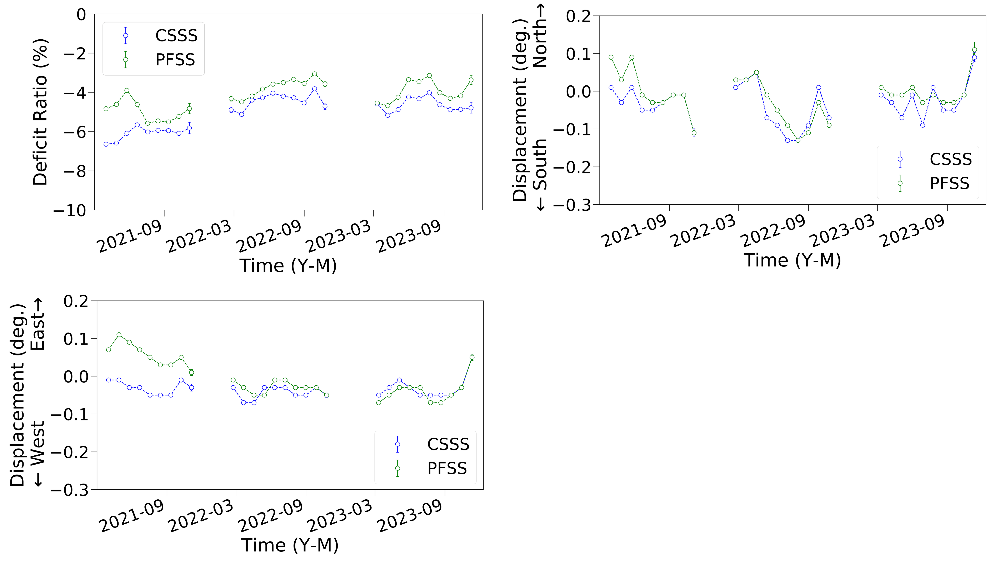
图注：Simulated results of deficit ratios (top), north-south (middle) and east-west displacements (bottom) for CRs from 2242 (March, 2021) to 2277 (November, 2023). The mean energy of the events is about 40 TeV.
对应解读：“建议重点查看的图表”第3项以及模型拟合段落中关于东西向、南北向位移和亏损深度的全年/多周期诊断。
入选理由：该图同时给出亏损率、南北向位移和东西向位移随 Carrington Rotation 的变化，覆盖 CR2242 到 CR2277，能展示模拟预测的长期时间结构和不同位移分量，比单一形态图更能说明磁场模型对太阳阴影的可检验预言。
来源与置信度：\(arxiv_source\)；high；\(arxiv_source\) / \(Simu_Sunshadow.tex\):figure[5]
Fig08
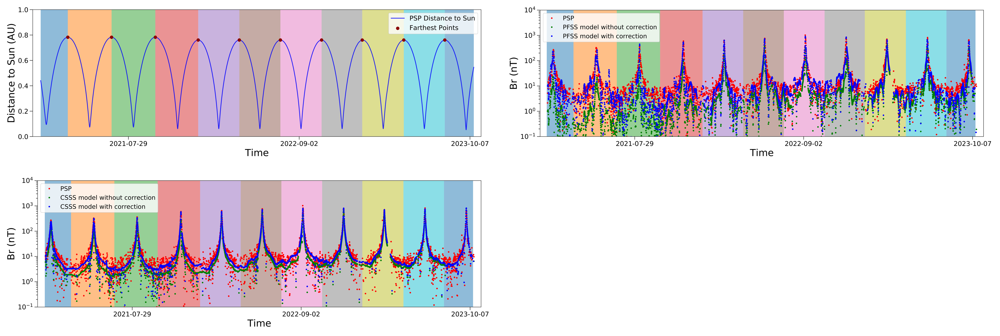
图注：Top: the variation of the distance between the PSP and the Sun over time. Middle: comparison between the PSSS model predicted $B_r$ (green for original prediction, blue for corrected) and PSP observations (red). Bottom: same as the middle panel but for the CSSS model.
对应解读：“建议重点查看的图表”第4项与“关键图表逐图导读”图6：PSP 校正前后的场强或阴影预测对比。
入选理由：该图直接比较 PSP 实测径向磁场与 PFSS/PSSS、CSSS 模型校正前后的预测，并给出 PSP 日距变化，是判断场强归一化校正是否必要、以及校正是否可能引入时间依赖的关键证据。
来源与置信度：\(arxiv_source\)；high；\(arxiv_source\) / \(Simu_Sunshadow.tex\):figure[8]
Fig03
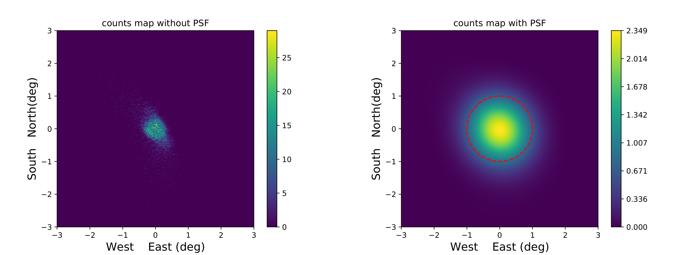
图注：Simulated count maps of negative charge particles in the CR 2243 for the CSSS model. The top panel shows the results without convolution of the PSF, and the bottom panel shows the results convolved with the PSF. The mean energy of the events is about 40 TeV. The red circle labels the $1^{\circ}$ radius region which is chosen to calculate the deficit ratio.
对应解读：“建议重点查看的图表”第1项与模型拟合段落：太阳阴影二维计数/亏损形态、PSF 卷积和亏损区域定义。
入选理由：该图展示 CSSS 模型下 40 TeV 负电荷粒子的二维模拟计数图，并比较 PSF 卷积前后结果，可用于解释阴影中心、形态、角分辨率卷积和 1 度亏损率统计区域，是理解二维模板如何进入拟合的基础图。
来源与置信度：\(arxiv_source\)；high；\(arxiv_source\) / \(Simu_Sunshadow.tex\):figure[3]
Fig04
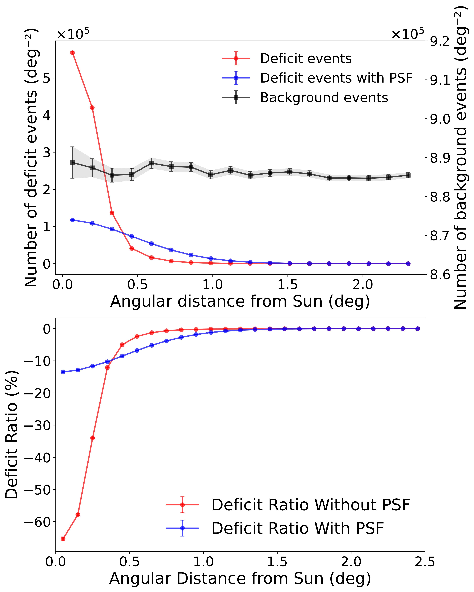
图注：Simulated number of deficit events and background events (top panel) and deficit ratios (bottom panel) as functions of angular distance from the Sun. Both the results without and with the convolution of the PSF are presented.
对应解读：模型拟合段落中关于亏损深度、有效宽度、PSF 卷积和径向亏损剖面的讨论。
入选理由：该图把亏损事件数、背景事件数和亏损率表示为距太阳角距离的函数，并比较 PSF 卷积前后结果，能量化说明阴影深度与宽度如何受探测器角响应影响，比单独二维图更适合支持拟合参数退化的解读。
来源与置信度：\(arxiv_source\)；high；\(arxiv_source\) / \(Simu_Sunshadow.tex\):figure[4]
Fig01
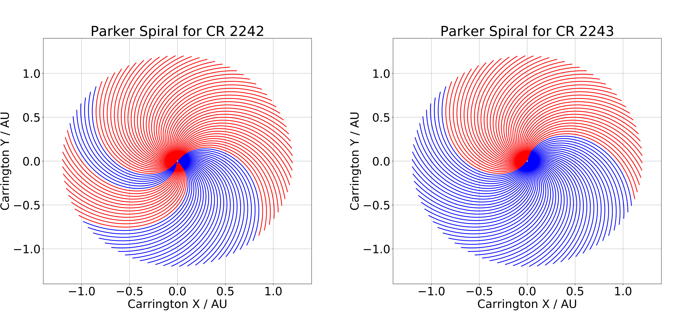
图注：Magnetic sectors in the solar equatorial plane, for CR 2242 (starting at 22:36 UT, 2021-03-17; left panel) which shows 4 sectors and CR 2243 (starting at 05:32 UT, 2021-04-14; right panel) which shows 2 sectors. Red and blue color shows positive and negative magnetic polarities. Each field line is traced back to the outer boundary at $2.5R_{\odot}$ according to the Parker spiral model, assuming the PFSS model.
对应解读：“建议重点查看的图表”第2项与“关键图表逐图导读”图3：Parker 螺旋延拓、磁扇区和行星际磁场几何。
入选理由：该图展示 CR2242 与 CR2243 在太阳赤道面上的磁扇区结构，并说明场线按 Parker 螺旋从 2.5 太阳半径外边界回溯，有助于理解磁场极性扇区和螺旋几何如何影响阴影东西向偏移；但它只基于 PFSS，不能直接完成 PFSS/CSSS 对比，因此相关性低于位移和 PSP 校正图。
来源与置信度：\(arxiv_source\)；high；\(arxiv_source\) / \(Simu_Sunshadow.tex\):figure[1]
强相关工作
这篇工作与以往 Tibet AS\(\gamma\)、ARGO-YBJ、HAWC、IceCube 等太阳阴影研究是一条连续线：早期结果多用太阳周期平均阴影深度和偏移来证明太阳磁场调制存在，而本文更强调日尺度、模型可区分性和 PSP 场强校正。可检索关键词包括“cosmic ray Sun shadow LHAASO”、“solar shadow PFSS CSSS”、“Tibet AS gamma Sun shadow solar cycle”、“ARGO-YBJ Sun shadow”。
在基础理论上，它连接了 PFSS 日冕外推、CSSS 电流片源面模型和 Parker 螺旋行星际磁场。相反或有张力的观点并不一定是否定太阳阴影诊断，而是认为 PFSS/CSSS 这类准静态模型对快速太阳事件和复杂太阳风结构不充分，需要 MHD 模型或数据同化。可检索关键词包括“PFSS limitations coronal magnetic field”、“CSSS model heliospheric current sheet”、“Parker spiral cosmic ray deflection”、“MHD coronal model Sun shadow”。
相似工作：
- https://arxiv.org/abs/2605.16898
基础理论 / 方法工作：
- https://ui.adsabs.harvard.edu/abs/1958ApJ...128..664P/abstract
- https://ui.adsabs.harvard.edu/abs/1969SoPh....6..442A/abstract
相反观点 / 张力线索：
（未提供）
9. The First Insights into an Ultraluminous X-ray Pulsar with XRISM: Phase-Resolved High-Resolution Spectroscopy of the Fe K-shell Band of M82 X-2
- 来源：arXiv / astro-ph.HE
- 链接：https://arxiv.org/abs/2605.17786v1
- 作者：Shogo B. Kobayashi, Peter Kosec, Kazuki Ampuku, Erin Boettcher, Renata Cumbee, Adam Foster, Yutaka Fujita, Kotaro Fukushima
- 评分：novelty 8/10，importance 8/10，relevance 8/10，final 9.00/10
- 推荐理由：XRISM Resolve对M82 X-2进行候选脉冲相位分辨Fe K高分辨率光谱，展示ULX脉冲星吸积流诊断能力；新仪器能力和高能致密源物理均值得读。
中文题目：The First Insights into an Ultraluminous X-ray Pulsar with XRISM: Phase-Resolved High-Resolution Spectroscopy of the Fe K-shell Band of M82 X-2
做了什么：本篇论文已通过推荐筛选，但自动详细解读生成失败。可先根据题目和摘要判断阅读优先级：During the performance verification phase, XRISM observed the M82 galaxy for a net exposure of 207.7 ks, with the ultraluminous X-ray pulsar (ULXP) X-2 included in the field of view. A pulsation search identified a candidate signal with a period close to the previously known value, 1.38727 s, at a significance of $3.15σ$ based on Monte Carlo simulations. Using this candidate period, phase-resolved spectral analysis with the high spectral resolution of Resolve was performed. The spectra suggest that, if the candidate pulsation is real, the Fe K$α$ emission line in the pulse peak phase has a larger width ($36^{+60}_{-13}$ eV) than that in the remaining phase at a significance exceeding $3σ$. This suggests that at least a fraction of the Fe K$α$ emission is associated with the ULXP system. The observed width corresponds to a velocity dispersion of $(1.7^{+2.8}_{-0.6})\times10^3$ km s$^{-1}$, which is too large to be explained by motions in the companion star atmosphere. The rise time of the pulsation constrains the line-emitting region to be smaller than $6.3\times10^4$ km, suggesting an origin in the accretion flow. This work demonstrates the capability of XRISM Resolve for pulsation-resolved high-resolution spectroscopy of ULX pulsars.
为什么重要：这篇论文在今日候选中通过了本地推荐阈值，说明它与当前高能天体物理兴趣方向或质量标准较匹配；详细内容建议优先查看原文摘要、结论和图表。
理论 / 观测 / 仪器方法价值：由于 LLM 摘要 JSON 解析失败，本节保留为安全占位，不编造论文未确认的公式、图号或链接。
为什么应该关注：日报仍保留这篇论文，是为了避免单篇摘要失败导致整份日报缺失。请把它作为需要人工快速复核的高优先级候选。
展开详细解读：文章讲解、背景、理论、重点章节、图表与相关工作
文章详细讲解
本文要回答的科学问题非常集中：在 M82 X-2 这个 ULXP 中，Fe Kα 发射是否有一部分与中子星自转脉冲相干？如果有，那么谱线的相位变化能否把发射区从大尺度星暴弥散气体或伴星大气中排除，并指向更靠近中子星的吸积流区域？由于 XRISM 的角分辨率不能像 Chandra 那样干净分离 M82 内所有点源，但 Resolve 的能量分辨率很强，所以论文采用“时间相位分辨 + 高分辨率谱线诊断”的路线。
方法上，作者先在 XRISM 性能验证阶段的约 207.7 ks M82 观测中寻找接近已知 1.38727 s 的脉冲候选，并用 Monte Carlo 估计显著性。随后用该候选周期定义旋转相位，把 Resolve 光谱分为多个相位 bin，并进一步合并为 pulse peak 与 remaining phase。谱模型包含与 X-2 及视场内点源有关的连续谱和高斯 Fe Kα 分量，同时加入周围弥散热等离子体的持久发射分量。读者应特别注意，这里不是简单地把所有 Fe K 光子归因于 X-2，而是在模型中尝试分离相位相关与相位不相关贡献。
关键结果是：若候选脉冲真实，pulse peak 相位的 Fe Kα 发射线宽度约为 \(36^{+60}_{-13}\) eV，并且相对于 remaining phase 的线宽差异达到超过 3σ 的统计指示。这个宽度可换算为约 \((1.7^{+2.8}_{-0.6})\times10^3\,\mathrm{km\,s^{-1}}\) 的速度弥散。论文还利用脉冲上升时间给出发射区尺度小于 \(6.3\times10^4\) km 的光穿越时间限制。线宽与尺度两条线索共同使“伴星大气或大尺度弥散气体”解释不够自然，而更支持吸积流或其近邻再处理区。
局限性同样是本文应重点阅读的部分。首先，脉冲信号显著性不是压倒性的，3.15σ 候选在多重试验、轨道参数搜索和背景处理下需要谨慎解释。其次，M82 视场复杂，Resolve 的空间混合意味着弥散 Fe K 分量必须依靠外部信息或模型约束；若该分量估计偏差，可能影响 ULXP 线归一化和线宽。第三，Fe Kα 区可能含有多个电离态或卫星线，单高斯近似在信噪比有限时实用，但物理解释不能过度简化。
下一步的修复或扩展方向包括：用更长的 XRISM 或未来微量热计曝光提高脉冲检出显著性；用同时或近同时的高角分辨 Chandra/NuSTAR 数据约束其他点源和硬 X 射线连续谱；在谱线模型中比较中性 Fe、低电离 Fe、高电离 Fe 以及反射/再处理模型，而不仅是经验高斯；并在相位折叠时传播周期、轨道参数、周期导数的不确定性，检查线宽差异是否随相位定义、能段选择和背景模板而稳定。
背景知识
超亮 X 射线源（ULX）最初通常被理解为超过普通恒星级吸积天体爱丁顿光度的非核点源，早期讨论常集中在“是否需要中等质量黑洞”这一问题上。后来多个 ULX 被发现存在相干脉动，说明至少一部分 ULX 的中心天体是磁化中子星，即超亮 X 射线脉冲星（ULXP）。这改变了问题的重心：并非所有超爱丁顿光度都要求更大质量黑洞，也可能来自几何准直、超爱丁顿吸积盘、强磁场通道化吸积以及复杂再处理结构。
M82 X-2 是 ULXP 研究中的标志性目标之一，位于近邻星暴星系 M82 内。M82 的优势是距离相对近、X 射线亮源丰富、弥散热等离子体明亮；困难也正来自这些优势：源拥挤、弥散背景复杂、多个点源与星暴驱动的热气体在同一视场内叠加。对 M82 X-2 做高分辨率光谱时，读者必须始终记住，观测到的 Fe K 壳层谱线不一定全部来自脉冲星系统本身，也可能混有周围星暴气体、邻近点源或仪器背景贡献。
本文的核心动机是利用 XRISM Resolve 的高能量分辨能力，在脉冲相位上分割 M82 X-2 的 X 射线光谱，检查 Fe Kα 发射线是否随 1.38727 s 左右的自转相位变化。若某条谱线只在脉冲峰相位显著变宽、增强或改变中心能量，那么它更可能与 ULXP 的吸积流、磁层附近或被脉冲照亮的再处理区有关，而不是完全来自大尺度、相位不相关的弥散星暴等离子体。
需要避免的常见误区有三点。第一，摘要中给出的脉冲检出显著性约为 3.15σ，且是候选信号，因此后续“相位分辨”结论都应带有“若候选脉冲为真”的条件。第二，Fe Kα 线宽对应的速度弥散不等于某个单一 Kepler 半径的直接测量，它可能混合了动力学展宽、湍动、未分辨多重线、相位混合和响应矩阵效应。第三，谱线与 ULXP 相关并不自动等于谱线来自中子星表面；本文摘要更谨慎地指向吸积流尺度，因为线宽和脉冲上升时间给出的尺度与伴星大气解释存在张力。
基础理论 / 方法脉络
理解本文可以从三个物理层次进入。第一层是脉冲星的时间信号：磁化中子星的 X 射线辐射随自转调制，观测到的光子到达时刻经太阳系质心校正、必要时经双星轨道校正后，可折叠到自转相位。若周期搜索只得到中等显著性的候选峰，那么相位分辨光谱的所有分箱都继承了周期、轨道参数和周期导数的不确定性；相位漂移会稀释真正的谱线变化。
第二层是 Fe K 壳层谱线物理。中性或低电离铁的 Kα 线在约 6.4 keV 附近，高电离 Fe 的 K 线可出现在更高能量。高分辨率微量热计能把线心、线宽和线强从连续谱及邻近线中分离出来。线宽可以近似转化为速度弥散，但这个转换默认展宽主要由 Doppler 运动主导，并且需要扣除仪器响应、天然线宽和可能的多组分混合。
第三层是 ULXP 吸积结构。超爱丁顿吸积通常会形成几何厚盘、辐射驱动风、漏斗状出射通道和靠近中子星磁层的通道化吸积。若 Fe Kα 发射随脉冲相位变化，可能表示脉冲束照亮了内盘、磁层边界、盘风基部或某个紧凑再处理区。摘要中的线宽速度约为 \(1.7\times10^3\,\mathrm{km\,s^{-1}}\)，已大于普通伴星大气热/轨道速度的直观预期，因此论文把发射区与吸积流联系起来是合理的阅读方向。
观测分析上，本文关键不是单个总谱拟合，而是“相位—能量—模型分量”的联合判断。Resolve 的谱线分辨率让 Fe K 区的高斯宽度、归一化和中心能量可被约束；Chandra 等高角分辨观测可用于估计视场内弥散 Fe Kα 贡献；而脉冲轮廓决定哪些相位被定义为 pulse peak 或 remaining phase。读者应检查这些选择是否会把低信噪声相位 bin 中的随机涨落放大成线宽差异。
主要退化关系包括：连续谱斜率或 cutoff 参数与线归一化的耦合；弥散等离子体 Fe 线模板与 ULXP 高斯线的耦合；线中心能量固定或自由时对线宽的影响；以及 on-pulse/off-pulse 的曝光、背景和响应差异。若论文的结论依赖“固定线宽/固定强度模型残差明显变坏，而自由线宽模型显著改善”，就必须同时查看残差形状和线宽—归一化置信轮廓，而不能只引用最佳拟合值。
公式与推导
可以把本文的分析理解为从“光子到达时刻”到“谱线发射区尺度”的一条推导链。第一步是把每个光子的到达时刻折叠到候选自转相位：
这里 \(P\) 是候选周期，\(\dot P\) 是周期导数项，\(\Delta_{\rm orb}\) 表示双星轨道校正的相位贡献；若轨道参数或 \(P\) 偏差过大，真实相位相关谱线会被稀释。
周期搜索可抽象为对相位非均匀性的检验，例如 Rayleigh 或 \(Z_n^2\) 类统计量：
论文摘要说明显著性由 Monte Carlo 模拟给出，因此读者应把解析 \(\chi^2\) 近似只当作直觉，而以模拟中包含的试验次数、背景和搜索网格为准。
相位分辨谱拟合的前向模型不是直接拟合真实源谱，而是拟合经过仪器响应卷积后的计数：
这里 \(j\) 表示相位 bin 或 on/off-pulse 分组，\(c\) 是能道，\(T_j\) 是有效曝光，\(R_c(E)\) 和 \(A(E)\) 分别代表能量响应与有效面积，\(S_j\) 是相位相关源模型，\(B_j\) 是弥散等离子体、其他点源或背景分量。
Fe Kα 经验线常用高斯近似：
其中 \(E_0\) 为线心，\(\sigma_E\) 为本征或经模型定义的能量宽度，\(N_{\rm Fe}\) 是线光子通量归一化。若论文报告 \(36^{+60}_{-13}\) eV 的宽度，需要确认这是高斯 \(\sigma_E\) 还是其他宽度定义，并确认是否已与仪器响应正确卷积。
在 Doppler 展宽主导且非相对论速度近似下，能量宽度可换算为速度弥散：
对 \(E_0\approx6.4\,\mathrm{keV}\) 和 \(\sigma_E\approx36\,\mathrm{eV}\)，得到 \(\sigma_v\sim1.7\times10^3\,\mathrm{km\,s^{-1}}\)，这正是摘要给出的量级。该推导不区分湍动、旋转、外流和多线混合，因此物理解释需要额外模型。
若把速度看作 Kepler 速度的量级估计，可写出对应半径尺度：
对中子星质量 \(M_{\rm NS}\) 和 \(v\sim10^3\,\mathrm{km\,s^{-1}}\) 的量级，这给出吸积流中较外侧但仍远小于双星尺度的区域；不过如果线宽来自风湍动或照亮区域的速度剪切，\(r_{\rm K}\) 只能作为诊断标尺而非直接半径。
脉冲上升时间给出光穿越尺度限制：
摘要给出 \(R_{\rm em}<6.3\times10^4\,\mathrm{km}\)，这意味着发射或再处理区不能大到把脉冲调制完全抹平。这个约束与相位相关谱线变化相结合，可排除许多大尺度、相位平均的弥散气体解释。
电离状态可用电离参数连接光度、密度和距离：
Fe I Kα 与更高电离态 Fe K 线对应不同 \(\xi\) 范围。若论文的 Fig.10 画出 \(\log\xi=1\) 和 \(\log\xi=2.2\) 等值线，读者应检查采用的 \(L_{\rm ion}\)、粒子密度 \(n\) 和距离 \(r\) 是否与 ULXP 吸积盘、盘风或伴星大气的物理条件一致。
统计上，on-pulse 与 off-pulse 线宽差异可用似然比或后验轮廓表达：
若使用 C-stat 或 Poisson 似然，\(C=-2\ln\mathcal{L}+\mathrm{const}\)。把 \(\Delta C\) 直接转成“σ”需要确认自由参数个数、边界条件和 Monte Carlo 校准；因此 Fig.06 的二维置信轮廓是比单一 \(\Delta C\) 更可靠的阅读入口。
模型拟合 / 应用方法
本文拟合的核心观测量有两类：一类是时间域的脉冲候选周期和相位定义，另一类是相位分辨光谱中的连续谱参数、Fe Kα 线心、线宽、线归一化以及弥散热等离子体分量。宽能段模型大致可理解为点源/ULXP 相关的 cutoff power-law 加高斯谱线，再叠加 M82 星暴环境的持久弥散发射。由于 Resolve 角分辨率有限，模型必须把“相位相关的 X-2 分量”和“相位不相关的环境分量”在谱形上分开。
似然层面，高能光谱通常使用 Poisson 计数似然或 C-stat/W-stat 类统计量，而非简单高斯 \(\chi^2\)，尤其在相位分箱后每个能道计数可能下降。读者应检查论文是否说明了分组方式、统计量选择、背景处理方式和响应矩阵生成。若显著性超过 3σ 是通过比较 tied 模型与 free 模型得到，还要确认是否用 Monte Carlo 或正确的自由度近似处理了线宽为非负的边界问题。
残差诊断比最佳拟合参数更重要。固定 Fe Kα 线强度和宽度在两相位相同的模型，应在 Fe K 区留下系统性残差；允许 pulse peak 线宽变大后，残差应显著变得随机，并且改善不应来自连续谱错误或某个异常能道。Fig.05 的 a1/b1 与 a2/b2 就是这类诊断。若宽能段残差仍有结构，说明连续谱或弥散模型可能仍不充分，线宽结论需要更谨慎。
主要参数退化包括线宽—归一化退化、线心—线宽退化、连续谱曲率—线翼退化，以及弥散 Fe K 模板—ULXP Fe K 高斯线退化。Fig.06 的宽度—归一化置信轮廓能显示前一种退化：更宽的线往往需要不同归一化来维持总线通量。若 on-pulse 与 off-pulse 的轮廓只是在最佳点上分开但高置信区域重叠较多，则“>3σ”结论需要看具体统计定义。
系统误差方面，至少应检查五项：时间标定与相位漂移是否会把 on/off-pulse 混合；M82 其他点源的变动是否进入 Resolve 视场并模仿相位差异；弥散等离子体 Fe K 贡献是否由非同时 Chandra 观测外推；能量增益和线扩展响应是否足以支持几十 eV 级宽度测量；以及相位 bin 的选择是否在看见数据后优化。任何一项若未充分控制，都可能把真实谱线展宽与建模误差混淆。
模型可能失败的情形包括：Fe Kα 实际由多个低电离或高电离 Fe 线混合，单高斯线宽被误解释为动力学速度；反射谱或吸收边结构未建模，使高斯吸收连续谱残差；脉冲候选为统计涨落，导致所谓相位相关只是随机分割；或者 ULXP 与邻近源在该次观测中通量状态不同于外部模板。理想的稳健性测试应包括改变相位边界、改变连续谱形式、固定/释放弥散线强、使用不同能段拟合、以及对假脉冲相位做置换检验。
重点章节 / 结果段落怎么读
-
Introduction：重点找作者如何界定 M82 X-2 的历史观测、已知脉冲周期、ULXP 身份以及 Fe K 线问题。不要只读“XRISM 首次”这类表述，而要识别本文相对以往 Chandra、XMM-Newton、NuSTAR 或 Hitomi/XRISM 相关工作的新增信息：高分辨率谱线是否真正与脉冲相位相连。
-
Observation and data reduction：检查净曝光 207.7 ks 的筛选标准、Resolve 事件处理、能量校准、背景选择、太阳系质心校正以及是否考虑双星轨道参数。对于 1.4 s 量级周期，任何时间标定或相位校正问题都可能影响折叠结果；对于 Fe K 线，能量标定和响应矩阵是线宽测量的关键。
-
Timing analysis：重点阅读 periodogram 的构造、搜索能段、试验次数和 Monte Carlo 显著性定义。3.15σ 候选信号不是零证据，但也不是足以忽略系统误差的强检出；应检查作者是否把这一点带入后续结论的措辞中。
-
Phase-resolved spectroscopy：这是全文技术核心。看作者如何定义 10 个相位 bin、pulse peak 和 remaining phase；连续谱、Fe Kα 高斯线、弥散等离子体分量哪些参数被 tied，哪些参数可随相位变化；以及 Chandra 估计的弥散 Fe Kα 贡献如何进入模型。阅读时应把 Fig.03、Fig.04、Fig.05 和 Fig.06 连起来，而不是孤立看最佳拟合表格。
-
Physical interpretation：重点检查线宽到速度、脉冲上升时间到尺寸、以及电离参数到位置的三步推理。每一步都相对简单，但组合后才能支持“发射区位于吸积流而非伴星大气”的结论。读者应寻找作者是否讨论了替代解释，例如未分辨多电离态线、盘风、反射、邻近源污染或弥散气体模板误差。
-
Discussion and conclusion：关注作者如何限制结论强度。最稳妥的表述应是“若候选脉冲真实，则 Fe Kα 线在脉冲峰相位呈现更大宽度，提示至少部分 Fe Kα 发射与 ULXP 系统相关”。如果正文中出现比摘要更强的因果判断，应回到显著性、残差和系统误差段落核查。
建议重点查看的图表
-
周期图与脉冲搜索诊断：先看候选周期附近的 periodogram 峰是否在 2--12 keV 与 2--10 keV 都出现，峰宽是否符合观测基线，旁瓣或试验次数是否可能降低全局显著性。本文 Fig.01 是后续相位分辨分析的地基。
-
脉冲轮廓和能段依赖：检查 Fe K 能段与宽能段脉冲轮廓是否同相，pulse peak 相位边界是否由数据驱动，是否存在人为挑选最显著 bin 的风险。若论文给出 6.3--6.5 keV 脉冲轮廓，应比较其峰值、上升时间和误差条。
-
相位分辨 Resolve 光谱：看 10 个相位 bin 的谱是否经过垂直缩放，右侧 Fe K 放大图中红色静止能量线与各相位最佳拟合线的关系，确认是否真有某些相位的 Fe K 区轮廓变宽或增强，而不只是缩放造成的视觉错觉。
-
谱线参数随相位演化：检查线中心、线宽、归一化或等效宽度是否与脉冲峰同步变化；留意固定参数的相位点，例如某个低信噪 bin 线心被固定，这会影响对连续相位演化的直觉。
-
on-pulse/off-pulse 联合谱和残差：重点看固定“同一线宽/同一强度”模型时 Fe K 区残差是否有系统结构，以及最佳模型是否只在一个窄能道改善。Fig.05 的宽能段和 Fe K 放大残差是判断结论是否稳健的核心。
-
线宽—归一化置信轮廓：看 on-pulse 与 off-pulse 的 68%、90%、99.7% 等高线是否真正分离，还是沿着退化方向部分重叠。Fig.06 比单个误差棒更能说明 3σ 差异的统计含义。
-
电离参数—距离—密度图：若论文给出类似 Fig.10 的物理约束图，应看 \(\log\xi\) 等值线、不同结构距离、以及光穿越时间禁区如何相交。该图用于把谱线测量转化为发射区位置判断，但强依赖于光度、密度和几何假设。
关键图表逐图导读
图 1：这是候选脉冲周期的 periodogram。横轴应是试探周期或频率附近的搜索坐标，纵轴是周期检验功率或相应统计量；黑线与红线分别对应 2--12 keV 和 2--10 keV。读图时先看主峰是否出现在接近已知 1.38727 s 的位置，再看两个能段的峰是否一致。陷阱是只看局部峰高而忽视全局试验次数、轨道参数搜索和周期导数假设；若候选周期不稳，后续所有相位分辨谱都会受到影响。
图 3：这是按 0.1 自转相位分箱的 Resolve 光谱，左侧为宽能段，右侧放大 Fe Kα 区域。由于谱线被按 \(3.33^n\) 垂直缩放以便显示，不能用视觉高度直接比较不同相位的绝对通量；应看各相位最佳拟合模型线相对数据点的局部形状，尤其是红色虚线标出的 Fe Kα 静止能量附近是否出现相位相关的展宽、偏移或增强。残差若未在主图中充分显示，需要结合后续图 5 判断。
图 4：这是谱线最佳拟合参数随相位变化，并叠加 6.3--6.5 keV 脉冲轮廓的图。读者应看线心、线宽或归一化的变化是否与灰色脉冲曲线的峰值同步，而不是随机散布。若某个相位点被阴影标出并固定在线心能量上，说明该点约束不足；不要把固定点当成独立测量。该图的价值在于连接时间调制和光谱调制，但它对分箱选择和低计数统计很敏感。
图 5：这是最关键的联合谱残差诊断图。上方宽能段展示 pulse peak（红）与 remaining phase（黑）谱，以及 cutoff power-law、高斯线、弥散热等离子体等分量；下方面板展示模型残差。右侧 Fe K 放大图尤其重要：b1/a1 对应假设两相位 Fe Kα 强度和宽度相同的模型，b2/a2 对应最佳拟合模型。若最佳模型的改善集中在 Fe Kα 线翼，并且残差从系统性正负结构变成随机散布，才支持“脉冲峰相位线更宽”的解释。
图 6：这是 Fe Kα 线宽与归一化的置信等高线。横纵轴分别对应线宽和线归一化，蓝色与红色代表 on-pulse 和 off-pulse，点为最佳拟合。读图时应看 68%、90%、99.7% 轮廓是否沿退化方向重叠；若两组 99.7% 轮廓仍明显分离，线宽差异的统计说服力较强。陷阱是线宽与归一化常正相关：更宽的线可吸收更多连续谱残差，若连续谱或背景模型不稳，轮廓可能人为扩大或偏移。
图 10：这是把观测结果转化为物理位置的总结图。坐标是距离与粒子密度平面，红/蓝线表示不同 \(\log\xi\) 条件下可产生相应 Fe K 线的区域，竖线标示若干结构到中子星的距离，灰色阴影表示由光穿越时间排除的过大尺度。读图时要问三个问题：发射区是否同时满足电离态、密度和光变尺度；所需密度是否符合吸积盘或盘风；以及若采用不同电离光度或几何遮挡，允许区域会移动多少。
论文原图 / 可嵌入图片
Fig05
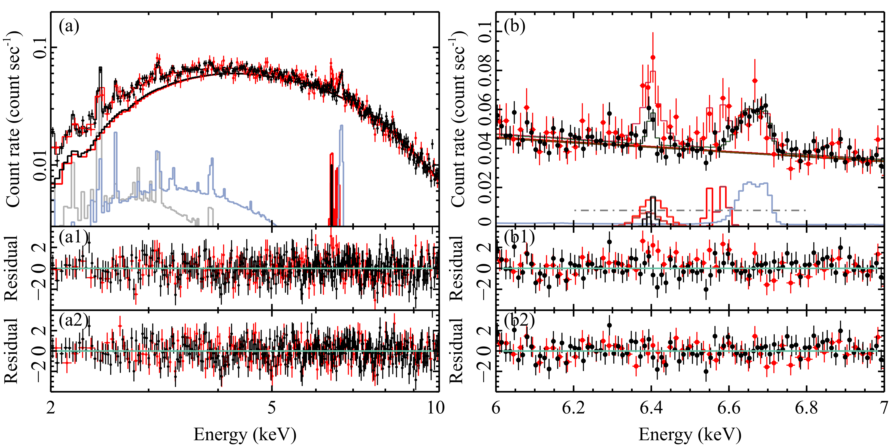
图注：(a): Wide band Resolve spectra extracted from the pulse phase wherein the iron K$\alpha$ line is at its maximum (red) and the rest (black). Black and red solid lines represent the model related to the X-2 (including other point sources within the FOV) emission, namely the cutoff power-law and the Gaussian. The gray and light blue solid lines represent the persistent emission from the surrounding diffuse plasma. The bottom panels show the residuals from the best-fit model. (b) The same spectra as (a), but magnified around the iron K-shell emission. The dot-dashed line indicates the estimated contribution to the iron K$\alpha$ line from the surrounding diffuse emission, using Chandra observations (\(\citealt{iwasawa2023}\); see text for details). Sub-panels: Residuals between the data and the model. Those shown in a1 and b1 are for the model assuming that the Fe K$\alpha$ intensity and width are the same in both spectra. Those in a2 and b2 correspond to the best-fitting model (see text for details).
对应解读：对应“建议重点查看主要数据、模型比较、残差诊断”和模型拟合段落：脉冲峰相位与其余相位的宽能段及Fe K壳谱线拟合、模型分量和残差。
入选理由：这是最直接支撑论文核心结论的图：同时展示on-pulse与off-pulse Resolve光谱、连续谱/高斯线/弥散等离子体模型分量、Fe K区放大图，以及固定线强度和线宽模型与最佳模型的残差对比，能直观看出Fe Kα线在脉冲峰相位变宽的证据。
来源与置信度：\(arxiv_source\)；high；\(arxiv_source\) / \(xrism_m82x2.tex\):figure[5]
Fig06
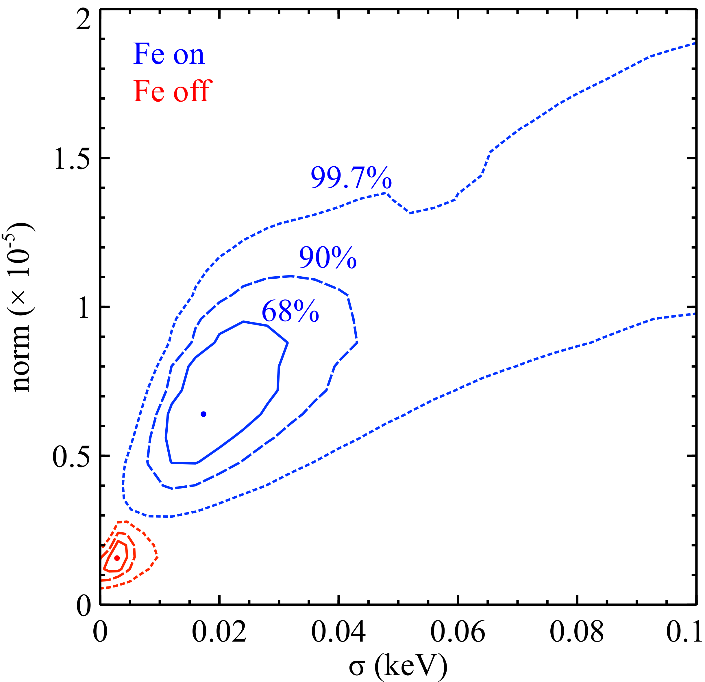
图注：Significance contours of the width vs normalization of the Fe K$\alpha$ line. The on-pulse and the off-pulse results are shown in blue and red, respectively. The dots indicate the best-fit values. Toward the outside, each line corresponds to the significance of $68\%$, $90\%$, and $99.7\%$.
对应解读：对应“参数约束、置信区间”和Fe Kα线宽差异显著性：Fe Kα线宽度与归一化的显著性等高线。
入选理由：该图给出on-pulse和off-pulse Fe Kα线宽—归一化的68%、90%、99.7%置信轮廓，是判断线宽差异是否超过3σ、以及核心测量是否稳健的关键统计图，比单纯光谱图更适合展示参数约束。
来源与置信度：\(arxiv_source\)；high；\(arxiv_source\) / \(xrism_m82x2.tex\):figure[6]
Fig03
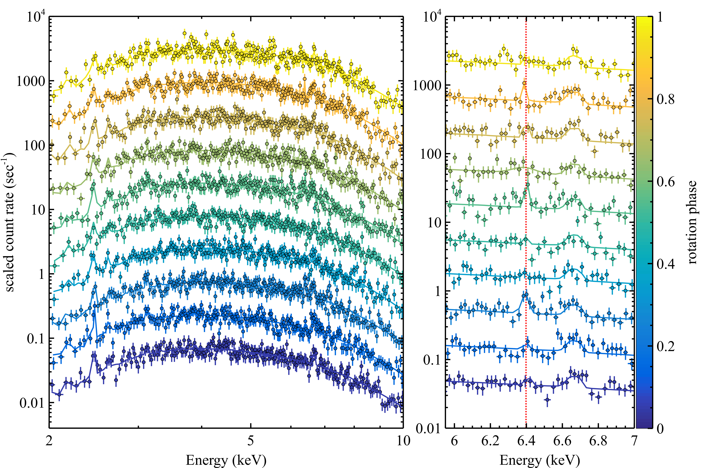
图注：Left: the phase-resolved spectra extracted from each 0.1-rotational-phase bin. For clarity, the spectra are scaled vertically by a factor $3.33^{n}$, where $n=0, 1, 2,\cdots9$ is the number of bins separated from phase $0.0\--0.1$. The color of the spectra indicates the rotational phase from which it is extracted. The correspondence between the phase and color is shown in the color bar on the right. The solid lines represent the best-fit model in each spectrum. Right: same as the left panel but magnified around the Fe K$\alpha$ line. The red-dotted line indicates the rest-frame energy of the Fe K$\alpha$ line.
对应解读：对应“关键图表逐图导读”中应重点查看的相位分辨高分辨率光谱、坐标轴、模型线和Fe Kα线位置。
入选理由：该图展示10个旋转相位bin的Resolve相位分辨谱，并在右侧放大Fe Kα区域，标出静止系Fe Kα能量和各相位最佳拟合模型，是从原始相位分辨数据层面理解谱线随脉冲相位变化的基础图。
来源与置信度：\(arxiv_source\)；high；\(arxiv_source\) / \(xrism_m82x2.tex\):figure[3]
Fig04
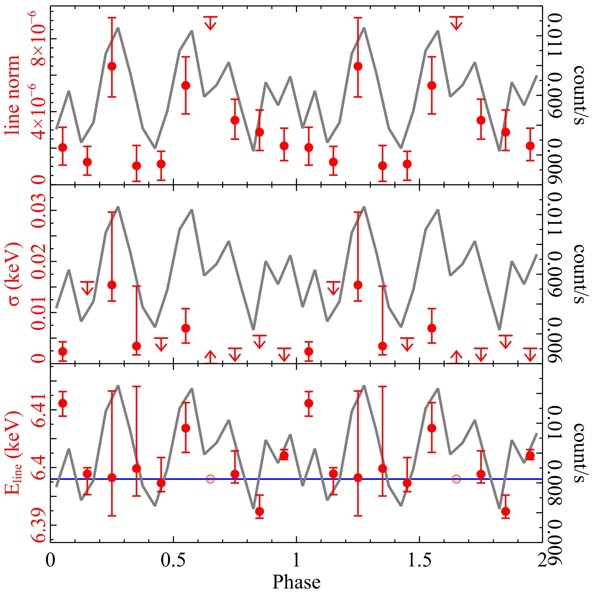
图注：Phase evolution of the best-fit parameters derived from a spectral fitting of the phase-resolved spectra. The gray solid lines are the pulse profiles of the $6.3\--6.5$ keV band, which is the same as Figure \(\ref{fig:pprofile}\) (c) but without error bars. The horizontal line indicates the rest-frame energy assuming the redshift of the M82 galaxy ($z=0.000897$). The hatched data point at $\phi=0.6\--0.7$ denotes that the value is fixed at the rest-frame energy (see text for details).
对应解读：对应“参数随相位演化”和脉冲轮廓关联：谱线最佳拟合参数与6.3--6.5 keV脉冲轮廓的相位关系。
入选理由：该图把Fe线相关拟合参数的相位演化与Fe K能段脉冲轮廓叠加，有助于判断谱线变化是否与脉冲峰同步，是连接时间分析和谱线物理解释的重要中间证据。
来源与置信度：\(arxiv_source\)；high；\(arxiv_source\) / \(xrism_m82x2.tex\):figure[4]
Fig01
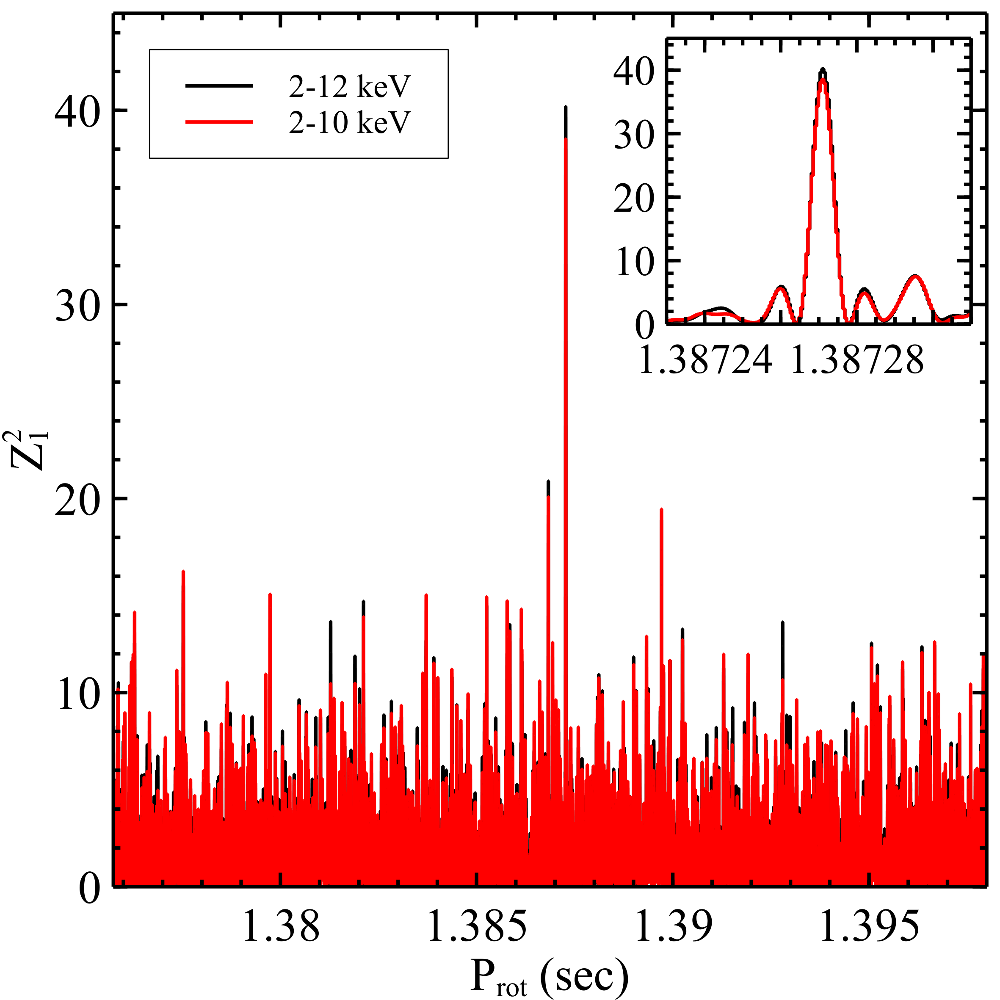
图注：Periodogram at the best-estimate orbital parameter and period derivative. Black and red lines represent the result using $2\--12$ keV and $2\--10$ keV, respectively. The sub-panel is the same plot magnified around the peak.
对应解读：对应“主要数据/灵敏度与信号检出”：候选1.38727 s脉冲周期的周期图。
入选理由：论文后续所有相位分辨光谱分析都依赖候选脉冲周期的真实性；该图展示2--12 keV与2--10 keV搜索结果及峰值放大，是评估3.15σ候选脉冲信号和相位折叠可靠性的首要图。
来源与置信度：\(arxiv_source\)；high；\(arxiv_source\) / \(xrism_m82x2.tex\):figure[1]
Fig10
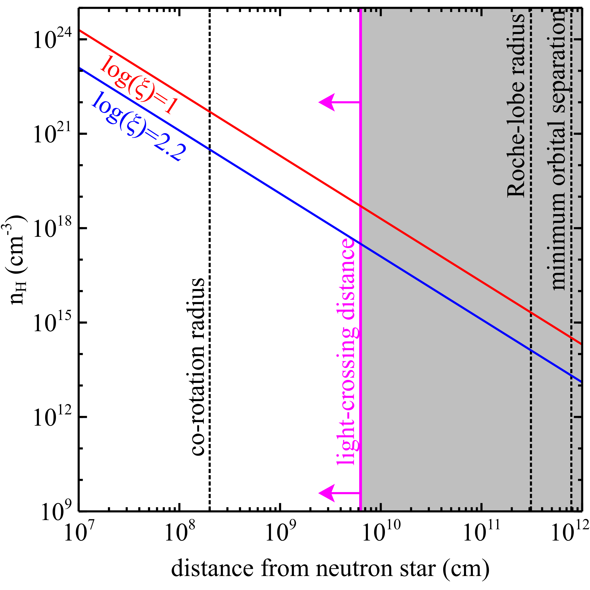
图注：The relations of $\log(\xi)$ over the distance vs particle plane. The functions for $\log(\xi)=1$ (the condition to emit Fe I K$\alpha$ line) and $\log(\xi)=2.2$ (the condition to emit Fe XXI and Fe XXII K$\alpha$ lines) are shown in red and blue, respectively. The vertical lines indicate the distances toward the respective structures from the central neutron star. The gray-hatched area indicates the distance beyond which the Fe line emitter cannot be located, considering the light-crossing timescale (shown in magenta).
对应解读：对应“物理解释、系统约束和发射区尺度”：电离参数、距离、粒子密度关系及光穿越时间限制。
入选理由：该图把观测到的Fe Kα线宽和脉冲上升时间约束转化为发射区位置与电离状态限制，显示发射区不能太远并支持吸积流起源，是从观测拟合走向物理图景的重要总结图。
来源与置信度：\(arxiv_source\)；high；\(arxiv_source\) / \(xrism_m82x2.tex\):figure[10]
强相关工作
相关工作可沿三条检索线展开。第一条是 ULXP 基础线：检索 M82 X-2 pulsar、ultraluminous X-ray pulsar、super-Eddington neutron star accretion、beamed emission、magnetospheric accretion 等关键词，重点回顾 M82 X-2 脉冲发现、轨道解、长期自转演化和 NuSTAR/XMM/Chandra 宽带谱研究。这些工作提供本文所用候选周期附近的先验背景，也提供伴星、轨道和吸积率的物理尺度。
第二条是 Fe K 线与 ULX/星暴环境线：检索 M82 Fe K alpha、Chandra M82 diffuse emission、XRISM Resolve Fe K spectroscopy、ULX wind reflection iron line 等关键词。M82 的星暴弥散等离子体可产生 Fe K 壳层发射，邻近 X 射线双星也会贡献硬谱和铁线；因此任何“X-2 的 Fe Kα”结论都必须与高角分辨 Chandra 对弥散背景和点源污染的约束相互校验。
第三条是方法学与张力线索：检索 phase-resolved spectroscopy pulsar iron line、microcalorimeter high-resolution X-ray spectroscopy、XRISM performance verification、line width Monte Carlo significance。相似工作可能来自普通 X 射线脉冲星、磁化中子星反射谱、黑洞双星 Fe K 相位/时间分辨谱，以及 Hitomi/XRISM 对星系团或星暴气体速度展宽的测量。若发现其他论文给出的 M82 弥散 Fe K 速度、温度或电离态与本文假设不同，应作为潜在张力重点比较。
阅读文献时不要只追“是否有人看到 Fe Kα”，而要比较四个可量化量：谱线中心能量、电离态归属、线宽或速度弥散、以及与脉冲/光变的相干性。只有当相位相关性、速度尺度和光穿越尺度同时指向紧凑区域时，Fe Kα 与 ULXP 吸积流的联系才比星暴弥散背景解释更有说服力。
相似工作：
（未提供）
基础理论 / 方法工作：
（未提供）
相反观点 / 张力线索：
（未提供）
10. Exploring the Transitional Parameter Space of Blazars using Gamma-ray and X-ray Population Diagnostics
- 来源：arXiv / astro-ph.HE
- 链接：https://arxiv.org/abs/2605.17397v1
- 作者：Zahoor Malik, Sikandar Akbar, Zahir Shah
- 评分：novelty 6/10，importance 7/10，relevance 10/10，final 8.75/10
- 推荐理由：利用4FGL-DR4和Swift-XRT研究changing-look blazar的伽马/X射线族群属性，直接涉及Fermi-LAT blazar，虽方法偏分类统计但相关性很高。
中文题目：用伽马射线与 X 射线族群诊断探索变脸耀变体的过渡参数空间
做了什么：这篇文章把变脸耀变体作为一个族群来研究，而不是只讨论单个源的光谱状态变化。作者从第四版 Fermi-LAT 源表数据发布 4 与 Living Swift XRT Point Source 星表中抽取伽马射线和 X 射线指标，把变脸耀变体同已确认的 BL Lac 天体和扁谱射电类星体比较。结果显示，变脸耀变体在伽马射线谱形、变率和多波段参数空间中确实落在 BL Lac 与扁谱射电类星体之间的重叠区域，但无论用质心位置、主成分分析、UMAP 降维，还是随机森林分类概率，它们整体更接近扁谱射电类星体。这说明“变脸”可能不是简单的分类噪声，而是在喷流连续谱、宽线区可见性、吸积状态和多波段辐射之间存在真实的过渡通道。
为什么重要：耀变体的传统二分法把源分成 BL Lac 天体和扁谱射电类星体，常用发射线等效宽度、同步峰位置、伽马射线谱指数和变率来区分。但变脸耀变体会在不同观测时期跨越分类边界，挑战了把分类当作静态标签的做法。本文的重要性在于，它用大样本多波段星表和机器学习诊断检验这些源究竟是随机散布在两类之间，还是形成有物理意义的过渡族群。
理论 / 观测 / 仪器方法价值：对理论而言，结果支持把耀变体看成由喷流功率、吸积盘辐射、宽线区覆盖因子和视向共同控制的连续谱，而不是两个彼此割裂的类别。对观测而言，文章给出了一套用伽马射线和 X 射线星表指标识别过渡源的实用流程，包括参数平面、降维投影、跨波段耦合和随机森林概率。对方法而言，它展示了在非同时、多星表数据中如何用族群统计而不是单一阈值来判断分类归属。
为什么应该关注：如果你关心喷流—吸积耦合、耀变体序列、活动星系核分类或 CTA、eROSITA、AMEGO 类未来巡天的源分类，这篇文章值得看。它提醒我们：某些“分类不稳定”的耀变体可能不是麻烦样本，而是最能约束喷流辐射区、外部光子场和宽线区状态变化的对象。它也提示，单靠某一次光谱的发射线等效宽度给耀变体贴标签，可能会错过真正的演化或状态转变信息。
展开详细解读：文章讲解、背景、理论、重点章节、图表与相关工作
文章详细讲解
科学问题：本文关心的是变脸耀变体在耀变体总体图景中的位置。传统上，BL Lac 天体通常表现为弱或无宽发射线、较硬的伽马射线谱、较高的同步峰频率；扁谱射电类星体则有明显宽发射线、较软的伽马射线谱和更强的外部康普顿成分。变脸耀变体的问题在于，它们在不同时期可从一个类别的观测特征转到另一个类别，例如发射线等效宽度跨越分类阈值，或多波段能谱状态发生明显迁移。作者要回答的是：这些源只是由于观测噪声、非同时数据或阈值分类导致的边界案例，还是在伽马射线和 X 射线族群空间中形成可识别的过渡族群。
作者怎么做：研究使用 4FGL-DR4 中的伽马射线源表量，如伽马射线光子谱指数、积分能流、变率指标、曲率显著性和可能的能谱参数，并与 LSXPS 中的 Swift XRT X 射线信息交叉匹配。作者把变脸耀变体样本同大样本已确认 BL Lac 天体和扁谱射电类星体比较，在多个二维参数平面中看分布重叠与质心位置，再用主成分分析和 UMAP 把高维参数空间投影到低维平面。进一步地，文章还考察 X 射线与伽马射线量之间的耦合关系，并训练或应用随机森林分类器来给每个源分配更像 BL Lac 或更像扁谱射电类星体的概率。
关键结果：变脸耀变体不是完全随机地散落在两类耀变体之间，而是系统性占据中间和重叠区域。更具体地说，在许多伽马射线参数平面中，变脸耀变体的总体质心更靠近扁谱射电类星体；PCA 和 UMAP 投影也给出类似结论。X 射线参数空间并没有推翻这个判断，而是显示变脸耀变体同样更接近扁谱射电类星体。跨波段耦合关系和随机森林概率进一步支持这一点：它们表现出过渡性，但保留了更多扁谱射电类星体式的族群特征。这与一种物理图像相容，即变脸耀变体可能是在宽线区或吸积盘可见性变弱、喷流连续谱相对增强时显得像 BL Lac，但其母体属性仍更接近有辐射效率吸积盘和外部光子场的扁谱射电类星体。
局限和下一步：这类星表研究的关键限制是非同时性。Fermi-LAT 的长期平均量、Swift XRT 的指向观测量和光学分类谱通常不是同一时期取得，而变脸耀变体恰恰以时间变化为核心特征。因此，族群统计可以说明总体位置，却不能直接证明某个源在某一物理状态下发生了吸积模式转换。样本选择也可能偏向亮源、高变率源和被反复观测的源。下一步需要把同时或准同时的伽马射线、X 射线、光学光谱、偏振和射电监测合在一起，追踪单源在参数空间中的轨迹，而不仅是比较长期平均位置。更进一步，应把机器学习分类概率同物理模型参数连接起来，例如宽线区光度、吸积率、喷流多普勒因子、同步峰频率和外部康普顿优势。
背景知识
耀变体是喷流近似指向观测者的活动星系核。由于相对论性增亮，喷流非热辐射主导从射电到伽马射线的能谱，导致强变率、高偏振、表观超光速运动和高能辐射。传统观测分类把耀变体分为 BL Lac 天体和扁谱射电类星体。前者光学谱线弱，后者宽发射线明显；但这种区分本质上是观测分类，而不是直接等同于两个完全不同的物理种群。
历史上，BL Lac 与扁谱射电类星体的差异常被放在“耀变体序列”或“耀变体包络”框架下讨论。低功率、高同步峰的 BL Lac 天体通常有较硬的高能谱；高功率扁谱射电类星体通常同步峰频率较低，外部康普顿成分显著，伽马射线谱更软。这个图景很有用，但也长期存在争议：选择效应、红移不完备、非同时能谱、喷流多普勒因子差异以及宿主星系稀释都可能制造或改变这些趋势。
变脸耀变体让这个问题变得更尖锐。所谓“变脸”，并不一定意味着中心黑洞或喷流在短时间内从一种天体变成另一种天体；它可能来自喷流连续谱增强使发射线等效宽度变小，也可能来自宽线区真实变暗，或来自吸积盘状态和外部光子场变化。由于分类边界常用光学发射线等效宽度，例如某个固定阈值，连续谱强烈变化就足以让同一源跨越类别标签。
现在重新看这个问题有两个原因。第一，4FGL-DR4、Swift XRT 星表和多波段档案提供了足够大的样本，可以把变脸耀变体放在统计族群中看，而不是停留在个例叙事。第二，PCA、UMAP、随机森林等方法能在多维参数空间中识别重叠、过渡和非线性结构，避免只看一两个投影图导致的误判。当然，常见误区是把机器学习分类概率直接当作物理概率；实际上它反映的是在给定训练样本和特征选择下，源在观测参数空间中更像哪一类。
另一个误区是把 BL Lac 与扁谱射电类星体看成绝对互斥的“物种”。对于喷流朝向我们的活动星系核，观测特征受到视向、多普勒因子、喷流状态、吸积盘光度、宽线区覆盖因子、红移和宿主贡献共同影响。变脸耀变体正好处在这些因素互相竞争的区域，因此它们不只是分类学上的麻烦，而是检验喷流—吸积耦合和外部光子场变化的天然实验室。
基础理论 / 方法脉络
从物理图像看，耀变体的多波段能谱通常有两个宽峰：低能峰来自喷流中相对论电子的同步辐射，高能峰来自这些电子通过逆康普顿散射把低能光子升能。低能种子光子可以来自喷流自身的同步光子，也可以来自吸积盘、宽线区或尘埃环的外部辐射场。BL Lac 与扁谱射电类星体的高能差异，很大程度上可理解为外部光子场强弱、电子能谱和多普勒增亮不同。
分类上，光学宽线等效宽度只是一个观测量。若喷流连续谱突然增强，即使宽线本征光度不变，等效宽度也会下降；反之，若连续谱变弱或宽线区增强，源会显得更像扁谱射电类星体。因此变脸现象可以由真实的吸积/宽线区变化引起，也可以由喷流连续谱稀释引起。本文不直接做单源时间演化建模，而是问这些源在长期平均伽马射线和 X 射线族群指标中更像哪一类。
伽马射线星表中的关键量通常包括能流、光子谱指数、曲率显著性、变率指标和不同能带通量。较软的伽马射线谱往往意味着高能峰位于较低能量或外部康普顿成分占优，这在扁谱射电类星体中更常见。X 射线量则可能采样同步尾部、同步自康普顿低能端或外部康普顿低能端，具体取决于同步峰位置和源状态。因此 X 射线—伽马射线耦合关系能提供比单独光学分类更接近辐射机制的线索。
方法上，PCA 把相关特征线性组合成方差最大的主轴，适合判断总体梯度；UMAP 则保留局部邻域结构，适合显示非线性族群重叠。随机森林把多个观测特征组合起来，通过许多决策树给出类别概率。需要注意的是，这些方法都受到训练样本标签、缺失值处理、测量误差、源表选择函数和非同时性的影响。特别是变脸耀变体可能更容易被多次观测和多波段跟踪，因此样本不是一个简单的通量限制样本。
常见退化包括：软伽马射线谱既可能来自扁谱射电类星体式外部康普顿，也可能来自某些高红移或低峰频 BL Lac 的选择效应；高变率既可能反映喷流多普勒因子，也可能反映采样不均匀；X 射线亮度既可能指示强喷流，也可能包含吸积盘日冕或宿主环境贡献。本文的价值不在于消除所有退化，而在于用多个独立诊断显示同一趋势：变脸耀变体是过渡族群，并且整体偏向扁谱射电类星体端。
公式与推导
第一步是把观测到的通量同源的本征发光功率联系起来。若源的能流为 \(F\)，光度距离为 \(d_L\)，忽略复杂 \(K\)-修正时各向同性等效光度可写成
这里 \(L_{\rm iso}\) 是各向同性等效光度，\(F\) 可以是伽马射线或 X 射线能流。对耀变体而言，\(L_{\rm iso}\) 不等于真实辐射功率，因为喷流有强烈相对论性束流，但它是星表族群比较中最直接的可观测尺度。
第二步考虑红移和谱形修正。若光子谱近似为幂律 \(dN/dE=N_0(E/E_0)^{-\Gamma}\)，能流在观测能带 \([E_1,E_2]\) 内为
其中 \(N_0\) 是归一化，\(E_0\) 是枢轴能量，\(\Gamma\) 是光子谱指数。较大的 \(\Gamma\) 表示较软的伽马射线谱，这通常更接近扁谱射电类星体的族群特征。
第三步加入相对论性增亮。喷流多普勒因子为
其中 \(\Gamma_{\rm j}\) 是喷流体洛伦兹因子，\(\beta c\) 是速度，\(\theta\) 是视向角。连续谱观测通量常近似满足
其中 \(p\) 取决于喷流几何和谱指数。这个关系说明，等效宽度变化未必代表宽线本征变化，喷流连续谱增强也会改变光学分类。
第四步写出发射线等效宽度的基本定义：
这里 \(F_{\lambda,\rm line}\) 是谱线区域总通量密度，\(F_{\lambda,\rm cont}\) 是连续谱通量密度。若 \(F_{\lambda,\rm cont}\) 受喷流增强而升高，\(W_\lambda\) 会下降，这为变脸耀变体跨越 BL Lac 与扁谱射电类星体分类阈值提供了简单机制。
第五步用宽线区同吸积盘的经验联系表达物理含义：
其中 \(L_{\rm BLR}\) 是宽线区光度，\(f_{\rm cov}\) 是覆盖因子，\(L_{\rm disk}\) 是吸积盘光度。如果变脸源整体更接近扁谱射电类星体，可能意味着它们仍保留较强的 \(L_{\rm disk}\) 或 \(L_{\rm BLR}\)，只是被喷流连续谱状态改变所掩盖。
第六步把多波段辐射联系到高能峰。同步辐射特征频率可近似写为
其中 \(B\) 是磁场，\(\gamma_e\) 是电子洛伦兹因子，\(z\) 是红移。逆康普顿峰频率在汤姆孙区近似为
其中 \(\nu_{\rm seed}\) 是种子光子频率。外部种子光子场更强时，高能谱形和伽马射线软化趋势会更像扁谱射电类星体。
第七步定义跨波段耦合的经验关系。若用对数线性模型比较 X 射线和伽马射线 luminosity 或 flux，可写为
其中 \(a\) 是截距，\(b\) 是斜率，\(\epsilon\) 表示内禀散布和测量误差。变脸耀变体若落在扁谱射电类星体关系附近，说明其高能辐射耦合更接近扁谱射电类星体族群。
第八步是降维诊断。PCA 从标准化特征向量 \(\mathbf{x}\) 的协方差矩阵出发：
这里 \(\lambda_k\) 是第 \(k\) 个主成分解释的方差，\(\mathbf{v}_k\) 是对应方向。若变脸耀变体在前几个主成分上靠近扁谱射电类星体质心，这说明多个观测特征共同支持偏向扁谱射电类星体端。
第九步是分类概率和显著性思路。随机森林可把多棵树的投票写成
其中 \(N_{\rm tree}\) 是树的数量，\(I_t\) 是第 \(t\) 棵树给出的类别指示函数。这个概率不是天体物理先验概率，而是在训练标签和特征空间中“像扁谱射电类星体”的程度。本文的核心诊断正是比较 \(P_{\rm FSRQ}\) 与 \(P_{\rm BLL}\) 的整体分布，并同参数平面和降维投影相互验证。
模型拟合 / 应用方法
这篇工作本质上不是单一物理模型拟合，而是星表特征空间中的族群建模和分类诊断。可拟合或比较的量包括伽马射线光子谱指数、能流、变率指标、曲率显著性、X 射线通量或光度、X 射线谱相关量，以及由这些量构造的颜色、通量比和跨波段相关。对每个族群，可以估计均值、协方差、质心位置、分布重叠程度，以及源到 BL Lac 或扁谱射电类星体质心的距离。
如果用经验相关来描述 X 射线—伽马射线耦合，常见做法是在对数空间中拟合斜率、截距和内禀散布。由于两个轴都有测量误差，并且样本存在截断，简单最小二乘可能有偏；更稳健的做法是层级贝叶斯回归或考虑选择函数的误差模型。本文摘要显示作者关注耦合关系的一致趋势，因此读者应特别看残差：变脸耀变体是沿着扁谱射电类星体关系散布，还是只是在投影上看起来接近。
PCA 和 UMAP 的“拟合”更像无监督表征学习。PCA 依赖特征标准化和线性协方差，若某个高方差特征主导主成分，结果可能主要反映亮度或红移而非物理类别。UMAP 依赖近邻数、距离度量和最小距离等超参数，局部结构稳定并不意味着全局距离可直接解释。因此判断变脸耀变体靠近哪类时，应检查不同特征组合、不同归一化、不同超参数下结论是否保持。
随机森林分类的关键是训练标签和类别不平衡。已确认 BL Lac 与扁谱射电类星体样本本身受选择效应影响，例如 BL Lac 红移缺失较多，扁谱射电类星体在高红移高光度端更易确认。若训练集中某些特征与红移或探测阈值强相关，分类器可能学到的是选择函数而不是物理边界。实际应用中应查看混淆矩阵、交叉验证准确率、特征重要性、概率校准曲线，以及去掉某些强相关特征后分类概率是否变化。
模型可能失败的地方包括非同时性、状态混合和样本污染。Fermi 的长期平均伽马射线量可能覆盖多个喷流活动态；Swift XRT 观测可能集中在耀发触发后；光学变脸标签来自特定时代的光谱。这样，一个源的特征向量可能不是同一物理状态的快照，而是时间平均和选择性观测的混合。本文的结论因此最好理解为“长期平均族群位置偏向扁谱射电类星体”，而不是“每个变脸事件都由同一种物理机制导致”。
重点章节 / 结果段落怎么读
数据/样本部分应首先确认三类样本如何定义：变脸耀变体的来源、4FGL-DR4 中匹配到的伽马射线量、LSXPS 中匹配到的 X 射线量，以及 BL Lac 与扁谱射电类星体对照样本的清洗标准。这里最值得注意的是红移缺失、重复对应体、低显著性 X 射线匹配和非同时观测。
伽马射线参数空间部分是全文的第一层结论。读者应看光子谱指数、能流、变率、曲率和可能的多能带颜色图中，变脸耀变体相对于两大类的分布。不要只看是否“在中间”，还要看其质心、离散度和是否被少数极端源拖动。
X 射线参数空间部分提供独立检验。由于 X 射线可以采样不同辐射成分，它不是简单重复伽马射线信息。读者应关注变脸耀变体在 X 射线通量、谱形或硬度、以及 X 射线与伽马射线比值上是否仍靠近扁谱射电类星体，这决定了“偏向扁谱射电类星体”是否是多波段结论。
PCA、UMAP 和随机森林方法部分需要带着怀疑读。重点不是算法名字，而是输入了哪些特征、是否标准化、如何处理缺失值、训练集是否平衡、是否做交叉验证。若这些设置稳健，降维图和分类概率才有物理解释价值。
讨论部分应关注作者如何解释过渡性：是连续的喷流—吸积参数序列，还是分类阈值和观测状态造成的表观过渡。读者还应看作者是否区分“更接近扁谱射电类星体的族群性质”和“单个源的瞬时状态”，这两者不能混为一谈。
建议重点查看的图表
-
伽马射线谱指数—能流或谱指数—变率图：看变脸耀变体是否位于 BL Lac 与扁谱射电类星体重叠区，以及其质心是否明显偏向扁谱射电类星体。
-
伽马射线曲率、变率和光度相关图：看变脸源是否只是高变率尾部，还是在多个独立指标上都呈中间性质。
-
X 射线通量、硬度或谱参数分布图：看 X 射线诊断是否独立支持接近扁谱射电类星体，而不是被伽马射线特征单独驱动。
-
X 射线—伽马射线耦合关系图：看对数空间斜率、散布和残差，尤其是变脸耀变体相对于 BL Lac 与扁谱射电类星体拟合关系的位置。
-
PCA 投影图：看前三个主成分解释方差、各族群质心和置信椭圆；不要把二维投影中的重叠直接理解为完整高维空间中的完全混合。
-
UMAP 投影图：看局部邻域是否把变脸耀变体连接到扁谱射电类星体团簇，同时检查超参数或特征选择是否可能改变拓扑。
-
随机森林分类概率直方图或箱线图：看 \(P_{\rm FSRQ}\) 与 \(P_{\rm BLL}\) 的分布是否整体偏移，而不是由少数源决定。
-
特征重要性和混淆矩阵：看分类器主要依据哪些观测量，是否存在由光度、红移或探测阈值主导的伪分类。
关键图表逐图导读
图 1：建议把它理解为样本和基本伽马射线参数空间图。横轴可能是伽马射线能流、光度或变率指标，纵轴可能是光子谱指数。数据点按 BL Lac、扁谱射电类星体和变脸耀变体分色，可能还标出族群质心。读图时重点看变脸耀变体是否沿着两类之间的连续带分布，以及是否更靠近软谱、高光度、高变率的一端。陷阱是通量受距离和探测阈值影响，不能直接当作本征喷流功率。
图 2：若为 X 射线参数分布或 X 射线—伽马射线比较图，横轴通常为伽马射线量，纵轴为 X 射线通量、光度或硬度。模型线可能是各族群的经验回归关系，阴影区表示散布或置信区间。应检查变脸耀变体的残差是否系统接近扁谱射电类星体关系。陷阱是 Swift XRT 观测非同时且曝光深度不均，单次 X 射线通量可能不代表长期平均。
图 3：PCA 图通常以前两个主成分为坐标轴，点的位置是标准化多特征投影。读者应先看坐标轴解释的方差比例，再看载荷向量或特征贡献，判断主成分主要代表谱形、亮度、变率还是跨波段比值。若变脸耀变体聚集在扁谱射电类星体质心附近，这支持摘要结论；但二维 PCA 会丢失部分信息，不能忽略高阶主成分。
图 4：UMAP 图的坐标轴本身通常没有直接物理单位，重点是邻域关系和团簇连接。若变脸耀变体桥接 BL Lac 与扁谱射电类星体，但在局部邻域中更多贴近扁谱射电类星体团簇，说明多维特征组合支持过渡且偏向扁谱射电类星体。陷阱是 UMAP 全局距离不宜过度解释，两个团簇相隔远近不一定等于物理差异大小。
图 5：随机森林概率图可能用直方图、核密度或箱线图展示 \(P_{\rm FSRQ}\) 和 \(P_{\rm BLL}\)。应看中位数、四分位范围、长尾和是否存在双峰。若大部分变脸耀变体有较高 \(P_{\rm FSRQ}\)，结论比单个二维图更稳健。陷阱是分类概率取决于训练集标签，若训练样本存在类别不平衡或红移偏置，概率会被校准问题影响。
图 6：若有特征重要性、相关矩阵或稳健性检验图，应重点看结论是否由少数特征驱动。例如如果最重要特征只是伽马射线光子谱指数，那么“接近扁谱射电类星体”可能主要是谱软化结论；如果 X 射线、变率和多波段比值都贡献显著，则过渡族群解释更可信。
论文原图 / 可嵌入图片
Fig08
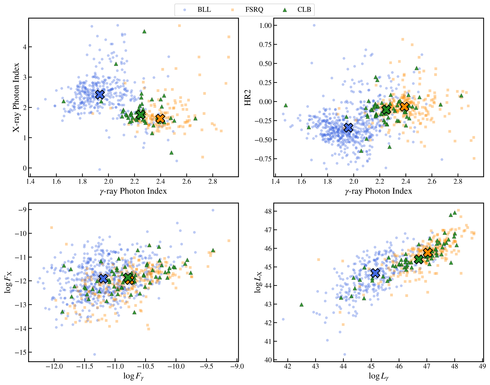
图注：X-ray/$\gamma$-ray coupling relations for the BLL, FSRQ, and CLB populations. The panels show the relations between the $\gamma$-ray photon index and X-ray photon index (top-left), $\gamma$-ray photon index and HR2 hardness ratio (top-right), $\gamma$-ray and X-ray fluxes (bottom-left), and $\gamma$-ray and X-ray luminosities (bottom-right). The centroid markers indicate the median positions of the three subclasses in each parameter space.
对应解读：对应“建议重点查看的图表”第4项和“模型拟合”中关于 X 射线—伽马射线耦合关系、残差与族群位置的讨论。
入选理由：这是候选图中唯一直接展示 X 射线/伽马射线耦合关系的图，包含伽马光子指数—X 射线光子指数、硬度比、通量和光度等多个跨波段诊断，并标出三类源的质心。它最能检验变脸耀变体是否沿着更接近 FSRQ 的关系分布，而不只是单一波段参数空间中的投影重叠。
来源与置信度：\(arxiv_source\)；high；\(arxiv_source\) / \(mnras_template.tex\):figure[8]
Fig02
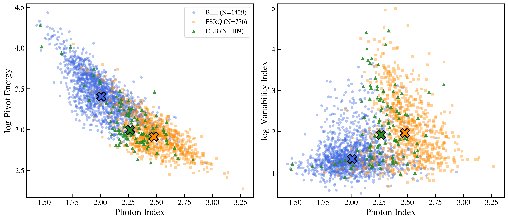
图注：Representative two-parameter $\gamma$-ray distributions for the CLB, BLL, and FSRQ populations using combinations of photon index, pivot energy, and variability index. The corresponding centroid positions are also shown in each panel.
对应解读：对应“建议重点查看的图表”第1、2项，以及“关键图表逐图导读”中图1关于伽马射线谱指数、能量尺度、变率和质心位置的解读。
入选理由：该图展示光子指数、pivot energy 和变率指数的二维伽马射线参数空间，并明确给出各族群质心，是判断 CLB 是否位于 BLL 与 FSRQ 重叠区、且质心是否偏向 FSRQ 的核心证据。相比单变量分布，它更直接支持论文摘要中的‘中间但更接近 FSRQ’结论。
来源与置信度：\(arxiv_source\)；high；\(arxiv_source\) / \(mnras_template.tex\):figure[2]
Fig03
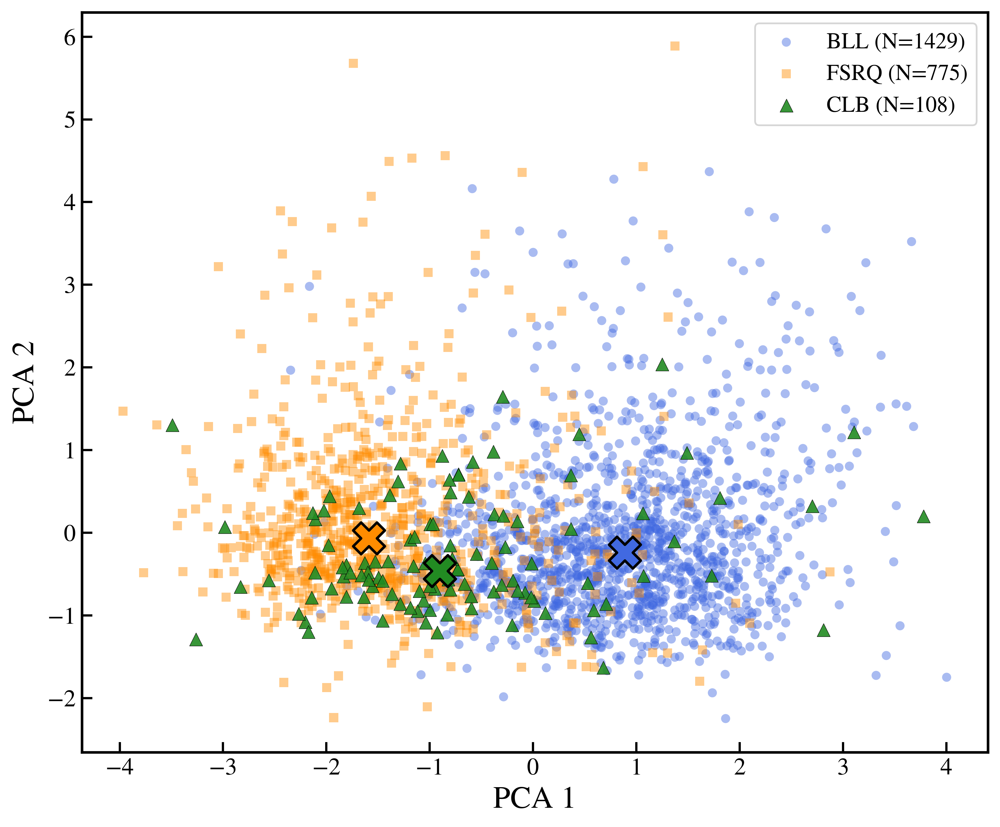
图注：Two-dimensional principal component analysis (PCA) projection of the CLB, BLL, and FSRQ populations using the selected $\gamma$-ray parameters.
对应解读：对应“建议重点查看的图表”第5项和“关键图表逐图导读”中图3关于 PCA 投影、族群质心和高维特征压缩的讨论。
入选理由：PCA 是本文高维伽马射线参数空间诊断的关键无监督方法，可检验二维参数图中的接近关系是否在多特征线性组合后仍保持。它对日报中关于主成分投影、二维投影局限和族群相对位置的解读非常重要。
来源与置信度：\(arxiv_source\)；high；\(arxiv_source\) / \(mnras_template.tex\):figure[3]
Fig04
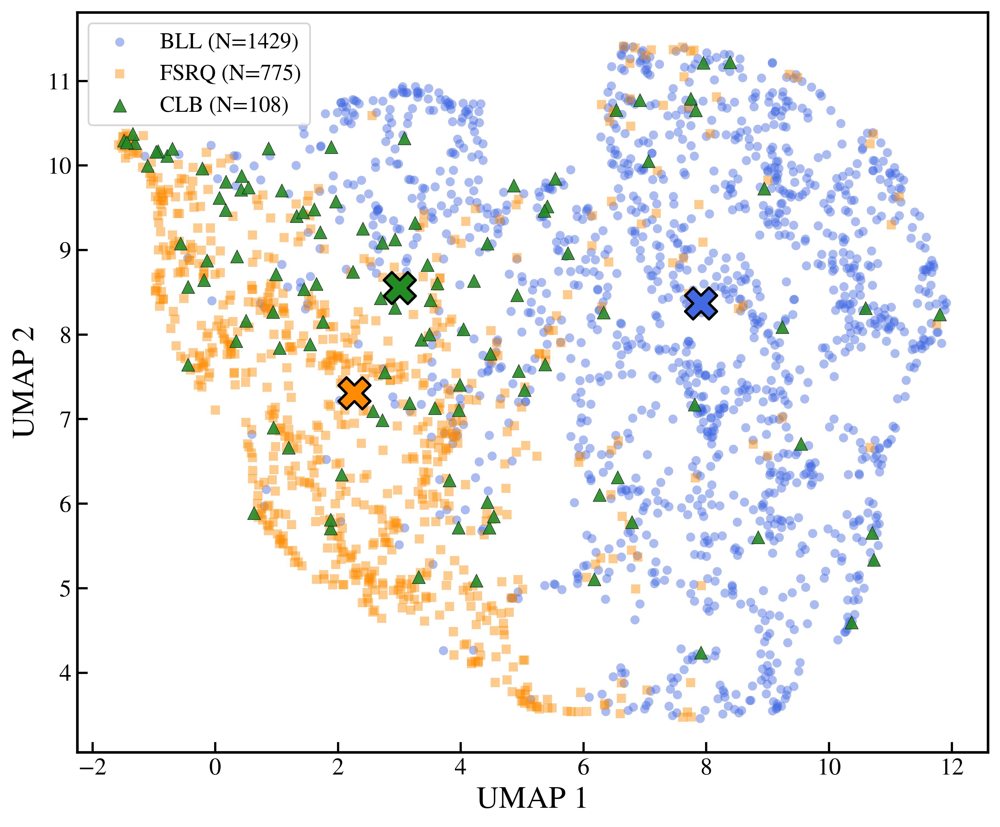
图注：Two-dimensional UMAP projection of the CLB, BLL, and FSRQ populations derived from the selected $\gamma$-ray parameters.
对应解读：对应“建议重点查看的图表”第6项和“关键图表逐图导读”中图4关于 UMAP 邻域结构、团簇连接和拓扑稳定性的讨论。
入选理由：UMAP 图提供与 PCA 互补的非线性低维嵌入，适合观察 CLB 是否在局部邻域中连接或靠近 FSRQ 团簇。它能支撑‘过渡族群但偏向 FSRQ’这一多维结构判断，不过其坐标缺乏直接物理单位，因此优先级略低于耦合图和 PCA。
来源与置信度：\(arxiv_source\)；high；\(arxiv_source\) / \(mnras_template.tex\):figure[4]
Fig05
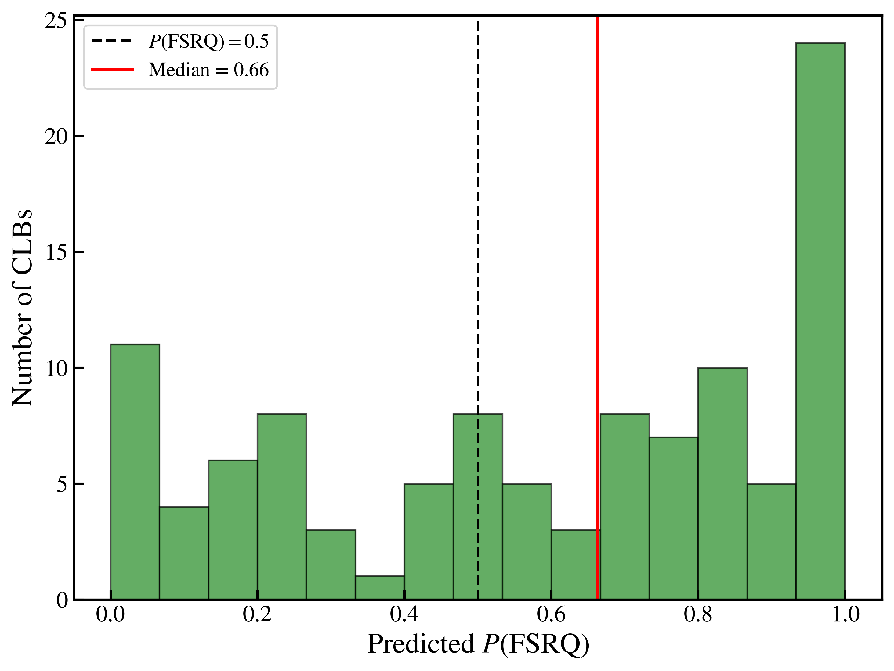
图注：Distribution of the random-forest classification probabilities for the CLB population.
对应解读：对应“建议重点查看的图表”第7项和“关键图表逐图导读”中图5关于随机森林分类概率分布的讨论。
入选理由：该图直接展示 CLB 的随机森林分类概率，是检验整体概率分布是否偏向 FSRQ、而非由少数二维图或少数源驱动的关键机器学习证据。它补充了参数空间图和无监督投影，使结论更具统计稳健性。
来源与置信度：\(arxiv_source\)；high；\(arxiv_source\) / \(mnras_template.tex\):figure[5]
Fig06
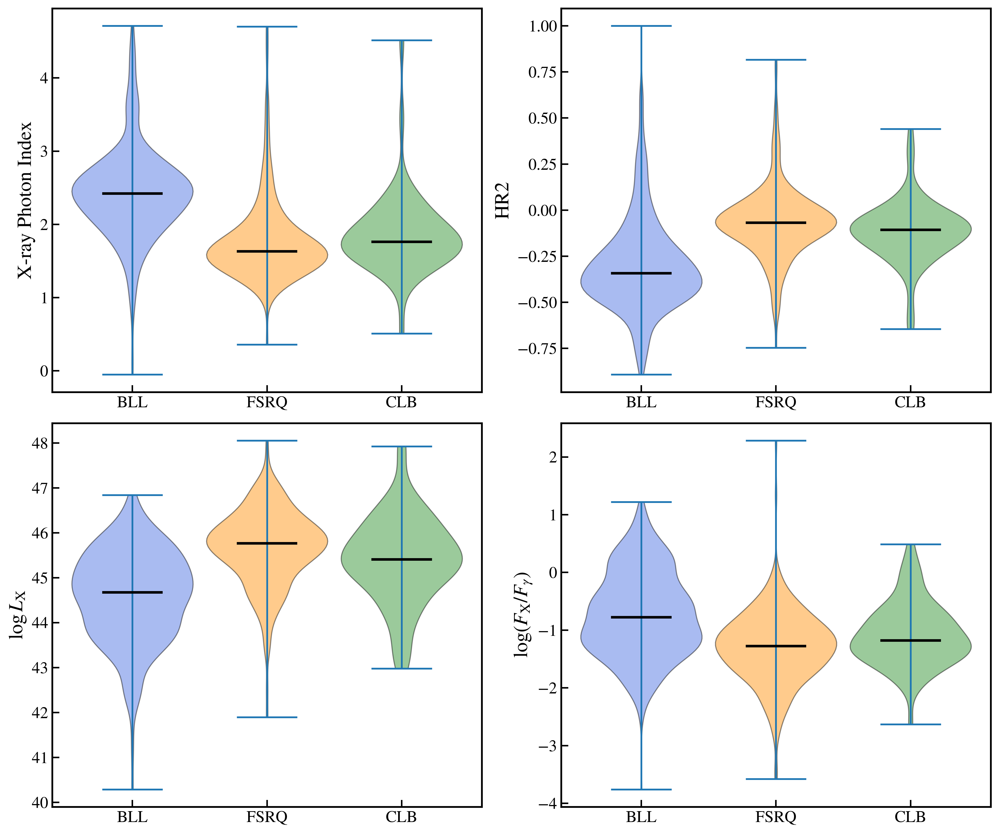
图注：Violin distributions of the X-ray and X-ray/$\gamma$-ray properties for the LSXPS-associated CLB, BLL, and FSRQ samples. The figure shows the distributions of the X-ray photon index, HR2 hardness ratio, X-ray luminosity, and the $\log(F_{\rm X}/F_{\gamma})$ ratio for the three populations.
对应解读：对应“建议重点查看的图表”第3项，以及“关键图表逐图导读”中图2关于 X 射线参数分布和 X 射线/伽马射线性质的解读。
入选理由：该图集中展示 X 射线光子指数、HR2 硬度比、X 射线光度和 log(F_X/F_gamma) 的族群分布，是判断 X 射线诊断是否独立支持 CLB 接近 FSRQ 的主要图表。相比 Fig07 的 CDF，它同时覆盖更多物理量和跨波段通量比，因此更适合嵌入日报详细解读。
来源与置信度：\(arxiv_source\)；high；\(arxiv_source\) / \(mnras_template.tex\):figure[6]
强相关工作
这篇工作与耀变体序列、喷流—吸积耦合、BL Lac 和扁谱射电类星体分类边界的长期讨论直接相关。应把它放在两个传统框架之间看：一个是以光学发射线和宽线区光度为核心的活动星系核分类，另一个是以多波段能谱峰位置和康普顿优势为核心的喷流辐射分类。检索关键词可用 “changing-look blazar”, “transition blazar”, “BL Lac FSRQ divide”, “blazar sequence”, “Fermi 4FGL blazar classification”, “Swift XRT blazar population”。
相近工作包括使用 Fermi-LAT 源表和机器学习分类未关联伽马射线源或候选耀变体的研究，以及用多波段数据重估 BL Lac 与扁谱射电类星体边界的研究。相反或有张力的观点通常强调：所谓过渡族群可能主要来自非同时数据、光学等效宽度阈值的人为性、样本选择偏差和红移不完备，而不必要求真实的演化通道。读这篇文章时，应特别把“族群参数空间接近”同“物理状态转变”区分开来，并用后续同时多波段监测来检验。
相似工作：
- https://arxiv.org/abs/2605.17397
- https://arxiv.org/abs/1902.10045
- https://arxiv.org/abs/1501.06054
基础理论 / 方法工作：
- https://ui.adsabs.harvard.edu/abs/1998MNRAS.299..433F/abstract
- https://ui.adsabs.harvard.edu/abs/1995PASP..107..803U/abstract
- https://ui.adsabs.harvard.edu/abs/2010ApJ...715..429A/abstract
相反观点 / 张力线索：
- https://ui.adsabs.harvard.edu/abs/2012MNRAS.421.1549G/abstract
- https://ui.adsabs.harvard.edu/abs/2013MNRAS.431.1914M/abstract
说明
评分由 LLM 给出初评，再由本地阈值策略过滤；IACT、TeV 伽马射线和高能中微子天文学按重点方向处理。